<meta charset="utf-8">
<meta name="viewport" content="width=device-width,initial-scale=1">
<script>(function(){var d=document.documentElement,l="en";d.dataset.theme="dark";
/* language: ?lang=es|en forces it for this visit, else the viewer's saved choice, else English */
try{var q=new URLSearchParams(location.search).get("lang");if(q==="es"||q==="en")l=q;else{var s=localStorage.getItem("wm-lang");if(s==="es"||s==="en")l=s}}catch(e){}
d.lang=l;if(l==="es"){d.setAttribute("data-i18n-wait","");setTimeout(function(){d.removeAttribute("data-i18n-wait")},2500)}})()</script>
<title>Eva by WearMeds</title>
<meta name="description" content="Eva is the Super Intelligence copilot that guides, records and warns passengers in space: a wristband, an emergency station and a ship hub that work with no doctor on board and no link to Earth.">
<meta name="claude:viewport-fit-sides" content="cover">
<link rel="preconnect" href="https://fonts.googleapis.com">
<link rel="preconnect" href="https://fonts.gstatic.com" crossorigin>
<link href="https://fonts.googleapis.com/css2?family=Inter:wght@400&display=swap" rel="stylesheet">
<link rel="stylesheet" href="team-rail.css">
<style>
/* Layout: Two Create type on pure white / pure black, with theme-matched asset families. Our own scroll engine scrubs: cabin parallax hero, sensors-record vs Eva-acts, Eva functions grid, wristband v2 studio steps, Case A/B scrollytelling, numbered-compartment emergency station, how-it-links diagram, layered solar alert, horizontal ship→Earth link, halftone arrival, product slabs, team rail, rising wordmark. */
:root{
  --canvas:#ffffff; --ink:#0c0c0c; --rule:#e3e1dd; --muted:rgba(12,12,12,.58);
  --space:#000000; --space-ink:#f4f3f0; --space-muted:rgba(244,243,240,.62); --space-rule:#2a2a2a;
  --alert:#ff6a3d; --link:#7fd4ff; --mark:#ffe36e; --lit:#ffb347;
  --net:#0b6aa6; --teal:#0a8a74; --alarm:#c8410f;
  --font:"PP Neue Montreal","Inter",Arial,sans-serif;
  --t-display:clamp(44px,7.71vw,111px); --t-prop:clamp(30px,4.627vw,66.6px); --t-sec:clamp(24px,3.085vw,44.4px); --t-label:clamp(17px,2.315vw,33.3px); --t-util:clamp(15px,1.543vw,22.2px);
  --ease:cubic-bezier(.645,.045,.355,1);
  --accent:#0c0c0c; --star:12,12,12; --radius:0px; --head:var(--font); --label-c:inherit; --h1-c:var(--space-ink);
}
@media (prefers-color-scheme:dark){:root:not([data-theme]){--canvas:#000000;--ink:#f4f3f0;--rule:#2a2a2a;--muted:rgba(244,243,240,.6);--mark:#ffd84a;--star:255,255,255;--net:#7fd4ff;--teal:#1fe5c4;--alarm:#ff6a3d;color-scheme:dark}}
:root[data-theme="dark"],:root[data-theme="mars"],:root[data-theme="lime"]{--canvas:#000000;--ink:#f4f3f0;--rule:#2a2a2a;--muted:rgba(244,243,240,.6);--mark:#ffd84a;--star:255,255,255;--net:#7fd4ff;--teal:#1fe5c4;--alarm:#ff6a3d;color-scheme:dark}
/* theme-matched asset families: .tl = white family, .td = black family */
.td{display:none!important}
@media (prefers-color-scheme:dark){:root:not([data-theme]) .tl{display:none!important}:root:not([data-theme]) .td{display:block!important}}
:root:is([data-theme="dark"],[data-theme="mars"],[data-theme="lime"]) .tl{display:none!important}:root:is([data-theme="dark"],[data-theme="mars"],[data-theme="lime"]) .td{display:block!important}

*{box-sizing:border-box}
html{overflow-x:clip}
body{background:var(--canvas);color:var(--ink);font:400 var(--t-util)/1.1 var(--font);-webkit-font-smoothing:antialiased;overflow-x:clip}
h1,h2,h3,p,ul,ol{margin:0;padding:0;font-weight:400}
a{color:inherit;text-decoration:none}
img{display:block;max-width:100%}
:focus-visible{outline:2px solid currentColor;outline-offset:4px}
.g{padding-left:max(20px,env(safe-area-inset-left,0px));padding-right:max(20px,env(safe-area-inset-right,0px))}
.prop{font-family:var(--head);font-size:var(--t-prop);line-height:1.02;letter-spacing:-.01em;text-wrap:balance}
.label{font-size:var(--t-label);line-height:1.1;text-transform:uppercase;color:var(--label-c)}
.note{font-size:var(--t-util);line-height:1.3;color:var(--muted)}
.mk{background-image:linear-gradient(var(--mark),var(--mark));background-repeat:no-repeat;background-size:0% 100%;background-position:0 88%;transition:background-size .9s var(--ease);padding:0 .06em;color:inherit}
.in .mk{background-size:100% 100%;color:#0c0c0c}
.space{background:var(--space);color:var(--space-ink)}
.space .note{color:var(--space-muted)}
.stars{position:absolute;inset:-3%;width:106%;height:106%;object-fit:cover;opacity:.6;pointer-events:none;transform:translate(calc(var(--pmx,0)*-22px),calc(var(--pmy,0)*-16px));animation:twinkle 9s ease-in-out infinite alternate}
@keyframes twinkle{to{opacity:.4}}

body::before{content:"";position:fixed;inset:0 0 auto;height:env(safe-area-inset-top,0px);z-index:10;background:var(--canvas)}
.nav{position:sticky;top:env(safe-area-inset-top,0px);z-index:400;height:72px;background:var(--canvas);border-bottom:1px solid var(--rule);display:flex;justify-content:space-between;align-items:center;font-size:var(--t-sec);letter-spacing:-.01em}
.sh{display:flex;justify-content:space-between;align-items:flex-start;gap:20px;border-top:1px solid var(--rule);padding-top:14px;min-height:72px;font-size:var(--t-sec);line-height:1.02;letter-spacing:-.01em}
.space .sh{border-color:var(--space-rule)}

/* pinned scene shell */
.pinsec{position:relative}
.pinsec .stage{position:sticky;top:72px;height:calc(100svh - 72px);overflow:hidden}

/* 1 · Hero */
.hero{height:240svh}
.hero .ground{position:absolute;inset:0;background:var(--space);z-index:2;clip-path:inset(var(--it,0) var(--ir,0) var(--ib,0) var(--il,0) round calc(var(--radius) * (1 - var(--s,0))))}
.hero .cab{position:absolute;inset:-6% 0 0 0;opacity:calc(.25 + .75*var(--s,0))}
.hero .cab img{position:absolute;inset:0;width:100%;height:100%;object-fit:cover}
.hero .cab .bg{transform:translate(calc(var(--pmx,0)*-10px),calc(var(--q,0)*-3% + var(--pmy,0)*-8px)) scale(calc(1.07 - .06*var(--s,0)))}
.hero .cab .mid{transform:translate(calc(var(--pmx,0)*-24px),calc(var(--q,0)*-8% + var(--pmy,0)*-16px)) scale(calc(1.11 - .1*var(--s,0)))}
.hero .cab .fg{transform:translate(calc(var(--pmx,0)*-44px),calc(var(--q,0)*-14% + var(--pmy,0)*-28px)) scale(calc(1.18 - .16*var(--s,0)))}
.hero .shade{position:absolute;inset:0;background:linear-gradient(90deg,rgba(0,0,0,.55),rgba(0,0,0,0) 55%);opacity:var(--s,0)}
.hero .copy{position:absolute;z-index:3;top:50%;transform:translateY(-50%);left:var(--cl,40px);width:min(560px,80vw);color:var(--space-ink);display:grid;gap:18px}
.hero .copy h1{font-family:var(--head);color:var(--h1-c);font-size:clamp(64px,12vw,170px);line-height:.9;letter-spacing:-.03em}
.hero .copy p{font-size:var(--t-sec);line-height:1.05;letter-spacing:-.01em;color:var(--space-muted)}
.hero .copy p b{font-weight:400;color:var(--space-ink)}
.hero .clock{position:absolute;z-index:3;right:20px;bottom:18px;font-size:var(--t-util);color:var(--space-muted);opacity:var(--s,0);font-variant-numeric:tabular-nums}
.chip{position:absolute;z-index:1;width:clamp(84px,11vw,170px);aspect-ratio:1;transform:translate(calc(var(--fx,0px)*var(--k,0) + var(--ax,0px)),calc(var(--fy,0px)*var(--k,0) + var(--ay,0px))) rotate(calc(var(--turn,0deg)*var(--k,0) + var(--ar,0deg))) scale(calc(1 - .18*var(--k,0)));overflow:hidden}
.chip{perspective:640px;border-radius:var(--radius);opacity:var(--mo,1)}
.chip img{filter:blur(calc((1 - var(--mo,1)) * 9px))}
.hero #heroSky{position:absolute;inset:0;width:100%;height:100%;z-index:0;pointer-events:none}
.chip img{width:100%;height:100%;object-fit:cover;transform:scale(1.14);will-change:transform}
/* a cut-out object (transparent WebP) floats on the sky instead of a framed photo: no crop, a soft alpha contact shadow from CSS */
.chip.cut{overflow:visible}
.chip.cut img{object-fit:contain;transform:scale(1.22);filter:blur(calc((1 - var(--mo,1)) * 9px)) drop-shadow(0 12px 14px rgba(0,0,0,.45))}
.hint{position:absolute;z-index:4;left:20px;bottom:18px;font-size:var(--t-util);color:var(--muted);opacity:calc(1 - var(--s,0)*3)}

/* 2 · Statement */
.statement{position:relative;z-index:5;padding-block:72px 140px;overflow:hidden}
.statement > *{position:relative}
.statement .big{font-size:var(--t-display);line-height:1.02;letter-spacing:-.01em;max-width:13em;text-wrap:balance}
.statement .row{display:grid;grid-template-columns:repeat(3,1fr);gap:20px;margin-top:96px}
.statement .row p{font-size:var(--t-label);line-height:1.1}
.statement .row small{display:block;font-size:var(--t-util);color:var(--space-muted);margin-top:10px;line-height:1.3}
@media (max-width:760px){.statement .row{grid-template-columns:1fr;margin-top:56px}}

/* emergency station scene (pinned) */
.xsec .stage{background:var(--space);color:var(--space-ink)}
.xsec .head{position:absolute;left:20px;top:28px;z-index:6;max-width:min(430px,31vw);display:grid;gap:10px}
.esec .head .prop{font-size:clamp(28px,3vw,46px)}
.xsec .head .note{color:var(--space-muted);max-width:28em}
.hot{position:absolute;width:0;height:0;font-style:normal}
.hot::before{content:"";position:absolute;left:-6px;top:-6px;width:12px;height:12px;border-radius:50%;background:var(--mark);box-shadow:0 0 0 4px rgba(255,216,74,.22),0 0 16px rgba(255,216,74,.6)}
.hot span{position:absolute;left:14px;top:-12px;white-space:nowrap;font-size:13px;line-height:1;padding:6px 8px;background:#0c0c0c;color:#fff;border:1px solid #2a2a2a}
.hot.l span{left:auto;right:14px}
.esec{height:480svh}
.sfig{position:absolute;right:max(20px,2vw);top:50%;transform:translateY(-44%);width:min(calc(100% - min(440px,32vw) - 80px),(100svh - 72px - 150px)*1.4185);aspect-ratio:1400/987;container-type:inline-size;z-index:3}
.sfig > img{width:100%;height:100%;object-fit:cover}
.sfig .scr{position:absolute;left:40%;top:6.1%;width:20.9%;height:15.6%;background:#05131a;box-shadow:inset 0 0 0 1px rgba(31,229,196,.25);display:grid;align-content:center;gap:.5cqw;padding:0 1.4cqw;color:#eafffb;overflow:hidden}
.sfig .scr b{font-weight:400;font-size:1.15cqw;letter-spacing:.16em;color:#1fe5c4}
.sfig .scr span{font-size:1.85cqw;line-height:1.02;letter-spacing:-.01em;white-space:nowrap}
.sfig .scr small{font-size:1cqw;color:rgba(234,255,251,.68);white-space:nowrap}
.sfig .scr .s1{display:none}
.esec[data-s="2"] .scr .s0,.esec[data-s="3"] .scr .s0,.esec[data-s="4"] .scr .s0,.esec[data-s="5"] .scr .s0,.esec[data-s="6"] .scr .s0{display:none}
.esec[data-s="2"] .scr .s1,.esec[data-s="3"] .scr .s1,.esec[data-s="4"] .scr .s1,.esec[data-s="5"] .scr .s1,.esec[data-s="6"] .scr .s1{display:block}
.sfig .c01{position:absolute;left:13.2%;top:27.5%;width:18.9%;height:20%;box-shadow:0 0 0 .3cqw #1fe5c4,0 0 3cqw .8cqw rgba(31,229,196,.55);opacity:0;transition:opacity .5s var(--ease)}
.esec[data-s="3"] .c01,.esec[data-s="4"] .c01,.esec[data-s="5"] .c01,.esec[data-s="6"] .c01{opacity:1;animation:lit01 1.8s ease-in-out infinite}
@keyframes lit01{50%{box-shadow:0 0 0 .3cqw #1fe5c4,0 0 1.2cqw .2cqw rgba(31,229,196,.35)}}
.sfig .tag{position:absolute;height:2.9%;width:16.8%;display:flex;align-items:center;gap:.7em;padding-left:.9cqw;background:#e7e5e0;color:#141414;font-size:1.22cqw;line-height:1;letter-spacing:.05em;text-transform:uppercase;white-space:nowrap;opacity:0;transition:opacity .6s var(--ease)}
.esec:not([data-s="0"]) .tag{opacity:1}
.sfig .hot{opacity:0;transition:opacity .4s var(--ease)}
.esec[data-s="4"] .h-door,.esec[data-s="5"] .h-door,.esec[data-s="6"] .h-door,.esec[data-s="5"] .h-item,.esec[data-s="6"] .h-item,.esec[data-s="6"] .h-btn{opacity:1}
.sfig .taken{position:absolute;left:13.2%;top:49.5%;padding:.5cqw .8cqw;background:#1fe5c4;color:#04130f;font-size:1.25cqw;line-height:1;white-space:nowrap;opacity:0;transform:translateY(6px);transition:opacity .4s var(--ease),transform .4s var(--ease)}
.esec[data-s="5"] .taken,.esec[data-s="6"] .taken{opacity:1;transform:none}
.esec .head .mk{transition-duration:1.1s}
.esec .head.in .mk{color:#0c0c0c}
@media (prefers-reduced-motion:reduce){.sfig .c01{animation:none!important}}
.ledger{position:absolute;z-index:5;left:max(20px,env(safe-area-inset-left,0px));bottom:28px;width:min(440px,32vw);display:grid}
.lbl{display:grid;gap:2px;padding:10px 0;border-top:1px solid var(--space-rule);font-size:var(--t-util);line-height:1.2;color:var(--space-ink);opacity:calc(.28 + .72*var(--lo,0));transition:opacity .2s}
.lbl small{color:var(--space-muted);font-size:.8em}
@media (max-width:760px){
  .xsec .head{left:16px;right:16px;top:18px;gap:8px;max-width:none}
  .xsec .head .prop{font-size:28px}
  .xsec .head .note{display:none}
  .sfig .tag{display:none}
  .hot span{font-size:11px;padding:4px 6px;top:-10px}
  /* phones: heading, photo and ledger stack in one column, so nothing sits on top of anything else */
  .esec .stage{display:flex;flex-direction:column;justify-content:space-between;gap:14px;padding:16px max(16px,env(safe-area-inset-right,0px)) 12px max(16px,env(safe-area-inset-left,0px))}
  .esec .head,.esec .ledger{position:relative;left:auto;right:auto;top:auto;bottom:auto;width:auto;max-width:none}
  .esec .sfig{position:relative;left:auto;right:auto;top:auto;width:100%;transform:none;flex:none}
  .esec .lbl{padding:6px 0;font-size:14px}
  .esec .hot::before{left:-7px;top:-7px;width:14px;height:14px}
  .esec .hot span{font-size:12px;padding:4px 6px;top:-11px}
  .esec .h-item span{top:-6px}
  .esec .h-btn span{left:14px;right:auto} /* to the right: on the left it would cover the Eva screen */
}
@media (max-width:760px) and (max-height:820px){
  .esec .lbl small{display:none}.esec .lbl.cur small{display:block}
}
@media (max-width:760px) and (max-height:680px){
  .esec .head .prop{font-size:23px}.esec .stage{gap:10px}.esec .lbl{padding:5px 0;font-size:13px}
}

/* station legend: the compartments in English */
.kit2{padding-block:72px 120px}
/* station: number + name + one example in two columns (01–06, 07–12), each paired with a numbered dot on the photo */
.kgrid{display:grid;grid-template-columns:minmax(0,1.1fr) minmax(0,1fr);gap:24px 40px;margin-top:28px;align-items:start}
.kfig{margin:0;display:grid;gap:10px}
.kfig figcaption{font-size:15px;line-height:1.3;color:var(--muted)}
.kpic{position:relative}
.kpic img{display:block;width:100%;aspect-ratio:4/3;object-fit:cover}
.kdot{position:absolute;width:24px;height:24px;margin:-12px 0 0 -12px;border-radius:50%;background:var(--mark);color:#0c0c0c;font-size:11px;line-height:24px;text-align:center;font-variant-numeric:tabular-nums;box-shadow:0 0 0 4px rgba(255,216,74,.22),0 0 16px rgba(255,216,74,.6);transition:transform .25s var(--ease);cursor:pointer;user-select:none;-webkit-user-select:none}
.kdot.c0{background:#1fe5c4;box-shadow:0 0 0 4px rgba(31,229,196,.28),0 0 18px rgba(31,229,196,.75)}
.kdot.hl{transform:scale(1.4);z-index:2}
.kbox{position:absolute;border:2px solid var(--mark);box-shadow:0 0 14px rgba(255,216,74,.45);opacity:0;transition:opacity .25s var(--ease);pointer-events:none}
.kbox.c0{border-color:#1fe5c4;box-shadow:0 0 14px rgba(31,229,196,.5)}
.kbox.on{opacity:1}
.clist{list-style:none;display:grid;grid-template-columns:1fr 1fr;grid-template-rows:repeat(6,auto);grid-auto-flow:column;gap:0 24px}
.clist li{display:grid;grid-template-columns:2.2em 1fr;gap:2px 10px;padding:11px 0 12px;border-top:1px solid var(--rule);cursor:default;-webkit-tap-highlight-color:transparent}
.clist b{font-weight:400;font-size:var(--t-util);color:var(--muted);font-variant-numeric:tabular-nums;grid-row:span 2;transition:color .2s}
.clist span{font-size:clamp(17px,1.75vw,25px);line-height:1.05}
.clist small{grid-column:2;font-size:15px;line-height:1.3;color:var(--muted)}
.clist li.on{border-top:3px solid var(--teal);padding-top:9px}
.clist li.on b{color:var(--teal)}
.clist li.hl{border-top-color:var(--ink)}.clist li.on.hl{border-top-color:var(--teal)}
.clist li.hl b{color:var(--ink)}
.clist li.hl span{text-decoration:underline 2px var(--mark);text-underline-offset:5px}
.clist li:focus-visible{outline:2px solid var(--ink);outline-offset:2px}
.variants{display:grid;grid-template-columns:1fr 1fr;gap:20px;margin-top:56px}
.variants figure{margin:0;display:grid;gap:10px}
.variants img{width:100%;aspect-ratio:4/3;object-fit:cover}
.variants figcaption{font-size:15px;line-height:1.3;color:var(--muted)}
@media (max-width:760px){.kgrid{grid-template-columns:1fr}.clist{gap:0 14px}.clist li{grid-template-columns:1.7em 1fr;gap:1px 6px;padding:9px 0 10px}.clist li.on{padding-top:7px}.clist span{font-size:16px}.clist small{font-size:12.5px}.clist b{font-size:13px}.kdot{width:20px;height:20px;margin:-10px 0 0 -10px;line-height:20px;font-size:10px}.variants{grid-template-columns:1fr}}

/* pinned step scenes (Case A / B) */
.storyp{height:420svh}
.storyp.caseA{height:520svh}
.storyp .stage{background:var(--canvas);color:var(--ink)}
.caseA .scn{position:absolute;left:0;top:0;bottom:0;width:62%}
.caseA .sc{position:absolute;inset:0;width:100%;height:100%;object-fit:cover;object-position:50% 50%;opacity:0;transform:scale(1.04);transition:opacity .8s var(--ease),transform 1.4s var(--ease);-webkit-mask-image:linear-gradient(90deg,#000 72%,transparent);mask-image:linear-gradient(90deg,#000 72%,transparent)}
.caseA .sc.on{opacity:1;transform:none}
.caseA .sc.icn{object-fit:contain;padding:9% 16% 9% 12%}
.storyp .ptxt{position:absolute;z-index:4;display:grid;gap:22px;align-content:center}
.caseA .ptxt{right:max(20px,4vw);top:0;bottom:0;width:min(480px,36vw)}
.caseB .ptxt{left:max(20px,env(safe-area-inset-left,0px));top:0;bottom:0;width:min(460px,34vw)}
.sts{position:relative;min-height:15em}
.st{position:absolute;inset:0 0 auto 0;display:grid;gap:12px;opacity:0;transform:translateY(18px);transition:opacity .5s var(--ease),transform .5s var(--ease);pointer-events:none}
.st.on{opacity:1;transform:none;pointer-events:auto}
.st .n{font-size:var(--t-util);color:var(--muted);font-variant-numeric:tabular-nums}
.st h3{font-size:var(--t-sec);line-height:1.05;letter-spacing:-.01em;text-wrap:balance}
.st p{font-size:var(--t-util);line-height:1.3;color:var(--muted)}
.bar{height:1px;background:var(--rule);position:relative}
.bar i{position:absolute;left:0;top:-1px;height:3px;width:100%;background:var(--ink);transform-origin:left;transform:scaleX(var(--sp,0))}
.ping{position:absolute;z-index:3;left:0;top:0;transform:translate(var(--qx,0),var(--qy,0));opacity:var(--ho,0);transition:transform .7s cubic-bezier(.76,0,.24,1),opacity .4s;pointer-events:none}
.ping i{position:absolute;left:-14px;top:-14px;width:28px;height:28px;border-radius:50%;border:2px solid var(--mark);box-shadow:0 0 18px rgba(255,216,74,.55)}
.ping i::after{content:"";position:absolute;inset:-2px;border-radius:50%;border:2px solid var(--mark);animation:ping 1.8s ease-out infinite}
@keyframes ping{to{transform:scale(2.4);opacity:0}}
.ping span{position:absolute;left:24px;top:-12px;white-space:nowrap;font-size:13px;line-height:1;padding:6px 8px;background:#0c0c0c;color:#fff;border:1px solid #2a2a2a}
@media (prefers-reduced-motion:reduce){.ping i::after{animation:none}}
.caseB .bdev{position:absolute;right:max(20px,3vw);top:50%;transform:translateY(-50%);width:min(58vw,1000px)}
.bdev .w{position:relative;aspect-ratio:3/2}
.bdev .w img{width:100%;height:100%;object-fit:contain}
.bdev .scr{position:absolute;left:29.3%;top:30.3%;width:41.4%;height:20%;border-radius:2%/6%;background:radial-gradient(120% 140% at 50% 0%,#0b1420,#04070b 70%);box-shadow:inset 0 0 0 1px rgba(127,212,255,.12);display:flex;align-items:center;gap:6%;padding:0 6%;color:#fff;overflow:hidden;font-size:clamp(8px,1vw,15px);--ac:#7fd4ff}
.bdev .scr[data-s="2"]{--ac:#5ee39a}.bdev .scr[data-s="3"]{--ac:#ff6a3d}
.bdev .scr .ring{flex:none;width:21%;aspect-ratio:1;border-radius:50%;border:2px solid var(--ac);display:grid;place-items:center;font-size:1.3em;line-height:1;color:var(--ac);transition:color .4s,border-color .4s}
.bdev .scr[data-s="1"] .ring{animation:beat 1s ease-in-out infinite}
@keyframes beat{15%{transform:scale(1.08)}30%{transform:none}}
.bdev .scr .col{flex:1;min-width:0;display:grid;gap:.4em}
.bdev .scr .top{display:flex;justify-content:space-between;align-items:baseline;gap:.6em;white-space:nowrap}
.bdev .scr small{font-size:.7em;letter-spacing:.08em;text-transform:uppercase;color:var(--ac);transition:color .4s;overflow:hidden;text-overflow:ellipsis}
.bdev .scr b{font-weight:400;font-size:.9em;font-variant-numeric:tabular-nums;color:var(--ac)}
.bdev .scr svg{display:none;width:100%;height:1.9em;overflow:visible}
.bdev .scr path{fill:none;stroke:var(--ac);stroke-width:1.6;stroke-linejoin:round;stroke-linecap:round;vector-effect:non-scaling-stroke;stroke-dasharray:100;stroke-dashoffset:100}
.bdev .scr[data-s="1"] svg,.bdev .scr[data-s="2"] svg{display:block}
.bdev .scr[data-s="1"] path{animation:trace 2.6s linear infinite}
.bdev .scr[data-s="2"] path{stroke-dashoffset:0}
@keyframes trace{to{stroke-dashoffset:0}}
.bdev .scr .tx{font-size:1.05em;line-height:1.15;transition:opacity .3s}
@media (prefers-reduced-motion:reduce){.bdev .scr[data-s="1"] path{animation:none;stroke-dashoffset:0}.bdev .scr .ring{animation:none!important}}
@media (max-width:760px){
  .caseA .scn{width:100%;bottom:auto;height:58%}
  .caseA .sc{-webkit-mask-image:linear-gradient(180deg,#000 70%,transparent);mask-image:linear-gradient(180deg,#000 70%,transparent)}
  .caseA .sc.icn{padding:6% 18%}
  .caseA .ptxt,.caseB .ptxt{left:0;right:0;width:auto;top:auto;bottom:0;align-content:end;padding:56px max(16px,env(safe-area-inset-right,0px)) 22px max(16px,env(safe-area-inset-left,0px));background:linear-gradient(transparent,var(--canvas) 32%)}
  .sts{min-height:11.5em}
  .caseB .bdev{left:0;right:0;width:auto;top:6%;transform:none;overflow:hidden}
  .caseB .bdev .w{width:190%;margin-left:-43%}
  .bdev .scr{font-size:clamp(9px,3vw,13px)}
}

/* wristband v2: pinned steps on a white studio stage (Codex renders band2-hero-white / exploded / base-alone, 1536 × 1024; hotspots in % of that frame) */
.bandp{--canvas:#fdfdfc;--ink:#0c0c0c;--muted:rgba(12,12,12,.64);--rule:#dedbd6;--orange:#F28A1A}
.storyp.bandp{height:560svh}
.bandp .ptxt{left:max(20px,env(safe-area-inset-left,0px));top:0;bottom:0;width:min(420px,31vw)}
.bandp .bview{position:absolute;right:max(20px,2vw);top:0;bottom:0;width:calc(100% - min(420px,31vw) - 80px);display:grid;place-items:center}
.bfig{position:relative;width:min(100%,(100svh - 72px - 60px)*1.5);aspect-ratio:1536/1024}
.bfig .bi{position:absolute;inset:0;width:100%;height:100%;object-fit:contain;opacity:0;transform:scale(.985);transition:opacity .7s var(--ease),transform 1.1s var(--ease)}
.bfig .on{opacity:1;transform:none}
.bfig .hs{position:absolute;inset:0;opacity:0;transition:opacity .5s var(--ease) .2s;pointer-events:none}
.bfig .hs.on{opacity:1}
.bandp .hot::before{background:var(--orange);box-shadow:0 0 0 1px #0c0c0c,0 0 0 5px rgba(242,138,26,.25)}
.bandp .hot span{background:#0c0c0c;color:#fff;border-color:#0c0c0c}
.bscr{position:absolute;left:0;top:0;width:1400px;height:933px;transform-origin:0 0;transform:scale(var(--k,.5));pointer-events:none}
.bscr .ui{position:absolute;left:0;top:0;width:640px;height:360px;transform-origin:0 0;transform:matrix3d(0.964534,-0.168372,0,-9.61881e-05,0.232334,0.534779,0,-0.000124389,0,0,1,0,308,287,0,1);color:#f4f3f0;padding:36px 48px;display:grid;grid-template-rows:auto 1fr auto;gap:8px;opacity:0;transition:opacity .5s var(--ease)}
.bscr .ui.on{opacity:1}
.bscr .ui .k{display:flex;justify-content:space-between;font-size:30px;letter-spacing:.14em;color:#1fe5c4}
.bscr .ui .big{align-self:center;font-size:84px;line-height:.95;letter-spacing:-.02em}
.bscr .ui .sub{font-size:30px;color:rgba(244,243,240,.66)}
.bscr .ui svg{align-self:center;width:100%;height:120px}
.bscr .ui path{fill:none;stroke:#1fe5c4;stroke-width:5;stroke-linejoin:round;stroke-linecap:round}
.bfig .bi{mix-blend-mode:multiply;filter:brightness(1.015)} /* lifts the renders' 253–254 backdrop to white so it melts into the stage */
/* suit mode: the real exploded render split in layers (a/suit-*.webp, same 1536 × 1024 frame, render scaled .95 and lowered 40 px).
   On step 4 the sleeve band slides into the gap along the render's horizontals (slope −0.065) while the screen module lifts 17 px. */
.bfig .bsuit{position:absolute;inset:0;opacity:0;transition:opacity .5s var(--ease);pointer-events:none}
.bfig .bsuit.on{opacity:1}
.su-pic{position:absolute;inset:0;overflow:hidden}
.su-pic img{position:absolute;inset:0;width:100%;height:100%;display:block}
.su-base,.su-scr{mix-blend-mode:multiply;filter:brightness(1.015)}
.su-sleeve{opacity:0;transform:translate(-34%,3.3%);transition:transform .7s cubic-bezier(.16,1,.3,1),opacity .35s var(--ease)}
.su-scr{transition:transform .7s cubic-bezier(.16,1,.3,1)}
.su-shade{opacity:0;transition:opacity .4s var(--ease)}
.bsuit.open .su-sleeve{opacity:1;transform:none;transition-delay:.2s,.2s}
.bsuit.open .su-scr{transform:translateY(-1.66%);transition-delay:.2s}
.bsuit.open .su-shade{opacity:1;transition-delay:.55s}
.su-tags,.su-lora{position:absolute;opacity:0;transition:opacity .3s var(--ease)}
.su-tags{inset:0}
.bsuit.open .su-tags,.bsuit.open .su-lora{opacity:1;transition-delay:.85s}
.su-tags .hot span{display:grid;gap:3px;white-space:nowrap;line-height:1.1}
.su-tags .hot b{font-weight:400}
.su-tags .hot small{font-size:.85em;color:rgba(255,255,255,.72)}
.su-lora{left:17.6%;top:59.4%;width:2.6%;overflow:visible}
.su-lora path{fill:none;stroke:var(--net);stroke-width:2.6;stroke-linecap:round}
.bsuit.open .su-lora path{animation:suWave 1.8s ease-out infinite}
.su-lora path:nth-child(2){animation-delay:.2s!important}.su-lora path:nth-child(3){animation-delay:.4s!important}
@keyframes suWave{0%,100%{opacity:.25}35%{opacity:1}}
.su-foot{position:absolute;left:0;right:0;top:calc(100% + 4px);opacity:0;transition:opacity .3s var(--ease)}
.bsuit.open .su-foot{opacity:1;transition-delay:.85s}
.su-cap{text-align:center;font-size:14px;line-height:1.3;color:var(--muted)}
.su-leg{display:none}
/* phones: the labels would run off the frame, so numbered dots and a three-line legend under the figure (the figure moves up to make room) */
@media (max-width:760px){
  .bandp .bfig{transition:transform .5s var(--ease)}
  .bandp .bview.suit .bfig{transform:translateY(calc(var(--su-up,0px) * -1))}
  .su-tags .hot span{display:none}
  .su-tags .hot::before,.su-leg li::before{width:18px;height:18px;left:-9px;top:-9px}
  .su-tags .hot::after{content:attr(data-n);position:absolute;left:-9px;top:-9px;width:18px;font:600 10px/18px var(--font);text-align:center;color:#0c0c0c}
  .su-foot{top:calc(100% + 2px);padding:0 4px;display:grid;gap:8px}
  .su-leg{display:grid;gap:5px;list-style:none;counter-reset:su;font-size:12.5px;line-height:1.25;color:var(--ink)}
  .su-leg li{position:relative;padding-left:26px;counter-increment:su}
  .su-leg li::before{content:counter(su);position:absolute;left:0;top:-1px;border-radius:50%;background:var(--orange);color:#0c0c0c;font:600 10px/18px var(--font);text-align:center;box-shadow:0 0 0 1px #0c0c0c}
  .su-cap{font-size:12.5px;text-align:left;padding-left:26px}
}
@media (prefers-reduced-motion:reduce){.su-pic img,.su-tags,.su-lora,.su-foot,.bandp .bfig{transition:none!important}.su-lora path{animation:none!important;opacity:1}}
@media (max-width:760px){
  .storyp.bandp .ptxt{left:0;right:0;width:auto;top:auto;bottom:0;align-content:end;padding:40px max(16px,env(safe-area-inset-right,0px)) 22px max(16px,env(safe-area-inset-left,0px));background:linear-gradient(transparent,var(--canvas) 24%)}
  .bandp .bview{left:0;right:0;width:auto;top:56px;bottom:38%;padding:0 4px;place-items:center}
  .bfig{width:100%;margin-left:0}
  .bandp .hot span{font-size:11px;padding:4px 6px;top:-10px}
  /* phones: flip a label inward where it would run off the cropped frame */
  .bandp .hot.ml span{left:auto;right:14px}.bandp .hot.mr span{left:14px;right:auto}
}

/* sensors record → Eva acts */
.spin{padding-block:20px 120px}
/* show, don't tell: one event, two wrists. Left records it; Eva turns it into what, where and how inside 10 s */
.vs{display:grid;grid-template-columns:1fr 1fr;gap:20px;margin-top:40px}
.vp{display:grid;align-content:start;gap:14px;border-top:1px solid var(--rule);padding-top:14px}
.vp-b{border-top:3px solid var(--ink);padding-top:12px}
.vh{display:flex;justify-content:space-between;align-items:baseline;gap:12px;font-size:var(--t-label);line-height:1.1}
.vh small{font-size:var(--t-util);color:var(--muted)}
.vcount{font-weight:400;font-size:var(--t-label);font-variant-numeric:tabular-nums;color:var(--muted);transition:color .3s}
.vs[data-s="1"] .vcount,.vs[data-s="2"] .vcount{color:var(--ink)}
.vdev{width:min(240px,62%);height:auto;justify-self:center;overflow:visible}
.vdev .ln{fill:none;stroke:var(--ink);stroke-width:1.5;vector-effect:non-scaling-stroke;stroke-linecap:round;stroke-linejoin:round}
.vdev .vclk{font:13px var(--font);fill:var(--muted);text-anchor:middle;font-variant-numeric:tabular-nums}
.vdev .vbtnhw{fill:var(--alarm)}
.vdev .vbang{fill:none;stroke:var(--alarm);stroke-width:3;stroke-linecap:round;opacity:0}
.vdev .vscr,.vdev .vhb{transition:stroke .3s,opacity .3s}
.vs[data-s="1"] .vp-b .vscr,.vs[data-s="2"] .vp-b .vscr{stroke:var(--alarm);stroke-width:2.5}
.vs[data-s="1"] .vp-b .vhb,.vs[data-s="2"] .vp-b .vhb{opacity:0}
.vs[data-s="1"] .vp-b .vbang,.vs[data-s="2"] .vp-b .vbang{opacity:1}
.vpulse{width:100%;height:48px;overflow:hidden}
.vpulse path{fill:none;stroke:var(--ink);stroke-width:1.5;vector-effect:non-scaling-stroke;stroke-linejoin:round}
.vwave{animation:vwave 3.2s linear infinite}
@keyframes vwave{to{transform:translateX(-100px)}}
.vflat{opacity:0}
.vs:not([data-s="0"]) .vwave{opacity:0;animation-play-state:paused}
.vs:not([data-s="0"]) .vflat{opacity:1}
.vs:not([data-s="0"]) .vp-b .vflat{stroke:var(--alarm)}
.vlog{position:relative;height:28px;display:flex;align-items:center;gap:10px}
.vline{flex:none;width:36%;height:1px;background:var(--rule)}
.vdot{position:absolute;left:36%;width:9px;height:9px;margin-left:-4.5px;border-radius:50%;background:var(--ink);transform:scale(0);transition:transform .35s cubic-bezier(.22,1,.36,1)}
.vrec{padding-left:10px;font-size:var(--t-util);color:var(--muted);opacity:0;transition:opacity .4s cubic-bezier(.22,1,.36,1)}
.vs:not([data-s="0"]) .vdot{transform:none}.vs:not([data-s="0"]) .vrec{opacity:1}
.vsteps{list-style:none;display:grid}
.vsteps li{display:grid;grid-template-columns:4.6em 48px 1fr;align-items:center;gap:12px;padding:9px 0;border-top:1px solid var(--rule);font-size:var(--t-util);line-height:1.2;opacity:0;transform:translateY(8px);transition:opacity .45s cubic-bezier(.22,1,.36,1),transform .45s cubic-bezier(.22,1,.36,1)}
.vsteps li.on{opacity:1;transform:none}
.vsteps i{font-style:normal;color:var(--muted)}
.vsteps svg{width:48px;height:30px;overflow:visible}
.vsteps svg *{fill:none;stroke:var(--ink);stroke-width:1.3;vector-effect:non-scaling-stroke;stroke-linecap:round;stroke-linejoin:round}
.vsteps .seat{stroke:var(--muted)}
.vsteps .route{stroke-dasharray:2 3}
.vsteps .dot{fill:var(--alarm);stroke:none}
.vsteps .lit{fill:var(--teal);stroke:none;filter:drop-shadow(0 0 3px var(--teal))}
.vdone{font-size:var(--t-label);line-height:1.1;opacity:0;transition:opacity .5s cubic-bezier(.22,1,.36,1)}
.vs[data-s="2"] .vdone{opacity:1}
.vgo{margin-top:24px;min-height:44px;padding:0 20px;border:1px solid var(--ink);border-radius:22px;background:var(--ink);color:var(--canvas);font:inherit;font-size:var(--t-util);cursor:pointer;transition:transform .3s var(--ease)}
.vgo:hover{transform:translateY(-1px)}
.vgo:focus-visible{outline:2px solid var(--ink);outline-offset:3px}
.spin .src{margin-top:6px;font-size:14px;line-height:1.4;color:var(--muted);max-width:60em}
.spin .src a,.ed .src a{text-decoration:underline;text-underline-offset:2px}
.ed .body .src{font-size:14px;line-height:1.4;color:var(--muted)}
.vnote{margin-top:14px;font-size:14px;line-height:1.4;color:var(--muted)}
.sr{position:absolute;width:1px;height:1px;overflow:hidden;clip:rect(0 0 0 0);clip-path:inset(50%);white-space:nowrap}
@media (max-width:760px){.vs{grid-template-columns:1fr;gap:28px}.vdev{width:min(200px,56%)}}
@media (prefers-reduced-motion:reduce){.vwave{animation:none}.vdot,.vrec,.vsteps li,.vdone{transition:none}}

/* Eva's functions */
.fns{padding-block:20px 120px}
/* Eva's five-step loop: one short label per function, thin rules, no cards */
.loop5{list-style:none;display:grid;grid-template-columns:repeat(5,1fr);gap:0 20px;margin-top:40px;counter-reset:lp}
.loop5 li{position:relative;display:grid;align-content:start;gap:6px;padding-top:14px;border-top:1px solid var(--rule);counter-increment:lp}
.loop5 li::before{content:counter(lp,decimal-leading-zero);font-size:var(--t-util);color:var(--muted);font-variant-numeric:tabular-nums}
.loop5 li::after{content:"→";position:absolute;right:0;top:12px;font-size:var(--t-util);color:var(--muted)}
.loop5 li:last-child::after{content:"↺"}
.loop5 b{font-weight:400;font-size:var(--t-sec);line-height:1.02;letter-spacing:-.01em;margin:2px 0 8px}
.loop5 span{font-size:var(--t-util);line-height:1.25;color:var(--muted)}
@media (max-width:760px){.loop5{grid-template-columns:1fr;margin-top:28px}
  .loop5 li{grid-template-columns:2em 7.4em 1fr;gap:3px 10px;padding:12px 0 14px}
  .loop5 li::before{grid-row:1/span 4}.loop5 li::after{top:12px}
  .loop5 b{grid-column:2;grid-row:1/span 4;font-size:var(--t-label);margin:0}
  .loop5 span{grid-column:3;padding-right:1.4em}}

/* how it links: inline diagram, two layouts */
.links{padding-block:72px 120px}
/* how it links: one diagram, hub in the middle, three client kinds around it, Earth on the right */
.lgrid{display:grid;grid-template-columns:minmax(0,720px) minmax(0,1fr);gap:24px 56px;align-items:center;margin-top:40px}
.dg{width:100%;height:auto;display:block;font-family:var(--font);overflow:visible}
.dg text{fill:var(--ink)}
.dg .t1{font-size:24px}
.dg .t2{font-size:19px;fill:var(--muted)}
.dg .t2.sm{font-size:16px}
.dg .t3{font-size:13px;fill:var(--canvas);letter-spacing:.08em;text-transform:uppercase}
.dg .tal{fill:var(--alarm);font-size:19px}
.dg .tnet{fill:var(--net);font-size:17px}
.dg .box{fill:var(--canvas);stroke:var(--rule);stroke-width:1.5}
.dg .hub{fill:var(--canvas);stroke:var(--ink);stroke-width:2}
.dg .tagf{fill:var(--ink)}
.dg .teal{fill:var(--teal)}
.dg .band{fill:var(--canvas);stroke:var(--ink);stroke-width:1.5}
.dg .earth{fill:none;stroke:var(--ink);stroke-width:1.5}
.dg .lora{stroke:var(--net);stroke-width:2.5;fill:none}
.dg .mesh{stroke:var(--net);stroke-width:2.5;stroke-dasharray:2 6;stroke-linecap:round;fill:none}
.dg .wifi{stroke:var(--ink);stroke-opacity:.55;stroke-width:1.5;fill:none}
.dg .alarm{stroke:var(--alarm);stroke-width:2.5;stroke-dasharray:9 7;fill:none;animation:dash 1.4s linear infinite}
.dg .nsl{stroke:var(--ink);stroke-width:3;stroke-dasharray:.1 9;stroke-linecap:round;fill:none}
@keyframes dash{to{stroke-dashoffset:-32}}
@media (prefers-reduced-motion:reduce){.dg .alarm{animation:none}}
.dg .m-net{fill:var(--net)}.dg .m-al{fill:var(--alarm)}
.why3{list-style:none;display:grid;gap:0}
.why3 li{padding:12px 0;border-top:1px solid var(--rule);font-size:var(--t-util);line-height:1.3;color:var(--muted)}
@media (max-width:900px){.lgrid{grid-template-columns:1fr}}
.slab.studio{background:#fdfdfc;color:#0c0c0c;--rule:#dedbd6;--muted:rgba(12,12,12,.62)}

/* Solar */
.solar{height:440svh}
.solar .stage{background:#000}
.solar #solarCv,.solar #sunGL,.solar #fxCv{position:absolute;inset:-2%;width:104%;height:104%;transform:translate(var(--shx,0px),var(--shy,0px))}
.solar #sunGL{z-index:2;touch-action:pan-y}
.solar #fxCv{z-index:3;pointer-events:none;mix-blend-mode:screen}
.solar #asciiCv{position:absolute;inset:0;width:100%;height:100%;z-index:3;pointer-events:none;display:none}
.solar.ascii #asciiCv{display:block}.solar.ascii #solarCv,.solar.ascii #sunGL,.solar.ascii #fxCv{opacity:0}
.solar .ascii-t{position:absolute;z-index:7;right:20px;top:20px;background:none;border:0;padding:0;color:var(--space-ink);font:400 13px ui-monospace,Menlo,monospace;letter-spacing:.08em;text-transform:uppercase;cursor:pointer;background-image:linear-gradient(currentColor,currentColor);background-size:0 1px;background-position:0 100%;background-repeat:no-repeat;transition:background-size .45s var(--ease)}
.solar .ascii-t:hover,.solar .ascii-t[aria-pressed="true"]{background-size:100% 1px}
.solar #sunGL.grab{cursor:grab}.solar #sunGL.grabbing{cursor:grabbing}
.solar .drag{position:absolute;z-index:5;font:13px ui-monospace,Menlo,monospace;color:var(--space-muted);pointer-events:none;opacity:0;transition:opacity .4s;transform:translate(-50%,0)}
.solar .stage::after{content:"";position:absolute;inset:0;z-index:4;pointer-events:none;background:repeating-linear-gradient(0deg,rgba(255,255,255,.03) 0 1px,transparent 1px 3px),radial-gradient(ellipse at center,transparent 50%,rgba(0,0,0,.65))}
.solar .hud{position:absolute;inset:0;z-index:5;pointer-events:none;color:#fff;font:13px/1.35 ui-monospace,Menlo,monospace;letter-spacing:.06em;text-transform:uppercase}
.solar .hud .c{position:absolute;width:26px;height:26px;border:0 solid rgba(255,255,255,.55)}
.solar .hud .c1{left:10px;top:10px;border-width:1px 0 0 1px}.solar .hud .c2{right:10px;top:10px;border-width:1px 1px 0 0}.solar .hud .c3{left:10px;bottom:10px;border-width:0 0 1px 1px}.solar .hud .c4{right:10px;bottom:10px;border-width:0 1px 1px 0}
.solar .hud .bar{position:absolute;left:20px;top:20px;display:flex;gap:16px;align-items:center}
.solar .hud .rec{display:flex;align-items:center;gap:6px;font-variant-numeric:tabular-nums}
.solar .hud .rec::before{content:"";width:8px;height:8px;border-radius:50%;background:#ff2a1f;animation:alBlink 1s steps(1,end) infinite}
.solar .meter{position:absolute;z-index:5;left:20px;top:44px;font:13px ui-monospace,Menlo,monospace;letter-spacing:.06em;text-transform:uppercase;color:rgba(255,255,255,.7);font-variant-numeric:tabular-nums}
.solar .log{position:absolute;z-index:5;left:20px;top:80px;margin:0;padding:0;list-style:none;display:grid;gap:12px;max-width:min(480px,calc(100% - 40px));color:#fff;font:400 clamp(16px,1.3vw,19px)/1.25 var(--sans,Inter,system-ui,sans-serif);letter-spacing:0;transition:opacity .5s;pointer-events:none}
.solar .log li{opacity:0;transform:translateY(8px);padding-left:14px;border-left:1px solid rgba(255,255,255,.35);transition:opacity .6s var(--ease),transform .6s var(--ease)}
.solar .log li.on{opacity:1;transform:none}
.solar .log li b{display:inline-block;min-width:58px;font-weight:400;color:rgba(255,255,255,.5)}
.solar .log li.red{color:#ff6a3d;border-left-color:#ff6a3d}.solar .log li.red b{color:#ff5a4a}
.solar.explain .log{opacity:0}
.solar .txt{position:absolute;z-index:6;left:20px;top:80px;max-width:min(440px,calc(100% - 40px));display:grid;gap:10px;color:var(--space-ink);background:#000;border:1px solid #2a2a2a;padding:20px 22px 22px;clip-path:polygon(0 0,calc(100% - 22px) 0,100% 22px,100% 100%,0 100%);opacity:0;transform:translateY(16px);transition:opacity .6s var(--ease),transform .6s var(--ease);pointer-events:none}
.solar.explain .txt{opacity:1;transform:none;pointer-events:auto}
.solar.explain .alert,.solar.explain .alvig{opacity:0!important;transition:opacity .5s var(--ease)}
.solar .txt h2{font-size:clamp(24px,2.4vw,34px);line-height:1.05}
.solar .txt .note{color:var(--space-muted);font-size:15px}
.solar .alert{--red:#ff2a1f;color:#fff;position:absolute;z-index:6;right:20px;bottom:24px;width:min(460px,calc(100% - 40px));background:var(--red);display:grid;gap:10px;padding:0 0 20px;overflow:hidden;
  transform:translateY(calc(80px - 80px*var(--d,0))) scale(calc(.94 + .06*var(--d,0)));opacity:var(--d,0);box-shadow:0 0 0 1px #ff6b5f,0 0 calc(90px*var(--d,0)) rgba(255,40,25,.55);animation:alPulse 1.1s steps(1,end) infinite}
.solar .alert .al-tape{height:14px;background:repeating-linear-gradient(-45deg,#000 0 11px,#ffd400 11px 22px);background-size:31px 14px;animation:alTape .8s linear infinite}
.solar .alert .al-top{display:flex;align-items:center;gap:10px;padding:4px 20px 0;font-size:13px;letter-spacing:.12em;font-weight:500}
.solar .alert .al-top svg{width:26px;height:26px;flex:none;animation:alSpin 6s linear infinite}
.solar .alert .al-top em{margin-left:auto;font-style:normal;display:flex;align-items:center;gap:6px}
.solar .alert .al-top em::before{content:"";width:9px;height:9px;border-radius:50%;background:#fff;animation:alBlink .5s steps(1,end) infinite}
.solar .alert b{display:block;padding:0 20px;font-weight:600;font-size:clamp(40px,4.6vw,66px);line-height:.92;letter-spacing:-.02em;text-transform:uppercase}
.solar .alert .al-count{display:flex;align-items:baseline;gap:12px;padding:0 20px;font-variant-numeric:tabular-nums}
.solar .alert .al-count strong{font-weight:600;font-size:clamp(30px,3vw,42px);line-height:1;background:#000;color:#fff;padding:4px 10px}
.solar .alert .al-count i{font-style:normal;font-size:14px;letter-spacing:.06em;text-transform:uppercase}
.solar .alert span{padding:0 20px;font-size:16px;line-height:1.3;font-weight:500}
.solar .alvig{position:absolute;inset:0;z-index:4;pointer-events:none;opacity:calc(var(--d,0)*.9);background:radial-gradient(120% 90% at 50% 50%,transparent 45%,rgba(255,25,10,.42) 100%);animation:alVig 1.1s ease-in-out infinite}
@keyframes alPulse{0%{background:var(--red)}50%{background:#c40d05}}
@keyframes alTape{to{background-position:31px 0}}
@keyframes alSpin{to{transform:rotate(360deg)}}
@keyframes alBlink{50%{opacity:0}}
@keyframes alVig{50%{opacity:calc(var(--d,0)*.35)}}
@media (prefers-reduced-motion:reduce){.solar .alert,.solar .alert *,.solar .alvig{animation:none!important}}
.solar .log li.m{display:none}
/* phones: the Sun is the hero. The page header slides away while the scene is pinned (html.navhide), the stage fills the screen,
   the HUD keeps its corners and the timer, one short status line at a time, and a compact alert at the bottom. */
.nav{transition:transform .3s var(--ease)}
@media (max-width:760px){
  html.navhide .nav{transform:translateY(-100%)}
  .solar .stage{top:0;height:100svh}
  .solar .hud .bar{left:18px;top:16px;font-size:11px}
  .solar .hud .bar span:first-child,.solar .meter{display:none}
  .solar .log{top:42px;left:16px;padding:8px 12px;gap:0;background:rgba(0,0,0,.6);border:1px solid #2a2a2a;max-width:calc(100% - 32px);font-size:15px}
  .solar .log li{padding-left:0;border-left:0}
  .solar .log li:not(.m),.solar .log li.old,.solar .log li:not(.on){display:none}
  .solar .log:not(:has(li.m.on)){display:none}
  .solar .log li.m.on:not(.old){display:block}
  .solar .txt{top:42px;left:16px;max-width:calc(100% - 32px);padding:16px 18px 18px}
  .solar .alert{left:12px;right:12px;bottom:14px;width:auto;gap:8px;padding:0 0 14px}
  .solar .alert .al-tape{height:9px}
  .solar .alert .al-top,.solar .alert > span{display:none}
  .solar .alert b{padding:0 16px;font-size:clamp(26px,8vw,34px)}
  .solar .alert .al-count{padding:0 16px}
  .solar .alert .al-count strong{font-size:24px}
  .solar .alert .al-count i{font-size:12px}
}
@media (prefers-reduced-motion:reduce){.nav{transition:none}}
/* Earth link */
.link-sec .stage{background:var(--space);color:var(--space-ink)}
.link-sec .head{position:absolute;left:20px;top:28px;right:20px;display:flex;justify-content:space-between;gap:20px;z-index:4}
.link-sec .lt{font-size:var(--t-sec);font-variant-numeric:tabular-nums;text-align:right}
.link-sec .lt small{display:block;font-size:var(--t-util);color:var(--space-muted)}
.link-sec .track{position:absolute;left:0;top:0;height:100%;display:flex;align-items:center;gap:6vw;padding:0 50vw 0 6vw;transform:translateX(calc(var(--x,0)*-1px));will-change:transform;z-index:2}
.link-sec .planet{flex:none;position:relative;width:min(56vh,44vw);aspect-ratio:1;transform:scale(var(--ps,1))}
.link-sec .planet img{position:absolute;inset:0;width:100%;height:100%}
.link-sec .planet .atm{opacity:var(--pa,.4)}
.link-sec .packet{flex:none;display:grid;gap:6px;width:200px;position:relative;align-self:center;transform:translateY(46px);z-index:2}
.link-sec .packet::after{content:"";position:absolute;left:0;top:-52px;width:12px;height:12px;border-radius:50%;background:#000;border:2px solid rgba(255,255,255,.45);transform:scale(calc(.8 + .5*var(--f,0)));transition:background .3s,border-color .3s}
.link-sec .packet.hit::after{background:var(--link);border-color:var(--link);box-shadow:0 0 16px var(--link)}
.link-sec .packet::before{content:"";position:absolute;left:5px;top:-40px;width:2px;height:30px;background:rgba(255,255,255,.18)}
.link-sec .tline{position:absolute;top:50%;height:2px;margin-top:-1px;background:rgba(255,255,255,.22);z-index:1;left:var(--tl,0);width:var(--tw,0)}
.link-sec .tline i{position:absolute;inset:0;background:var(--link);transform-origin:left;transform:scaleX(var(--lf,0));box-shadow:0 0 12px var(--link)}
.link-sec .tline b{position:absolute;right:-2px;top:-7px;width:0;height:0;border-left:16px solid rgba(255,255,255,.5);border-top:8px solid transparent;border-bottom:8px solid transparent}
.link-sec .tline.done b{border-left-color:var(--link)}
.link-sec .packet b{font-weight:400;font-size:var(--t-label)}
.link-sec .packet span{font-size:15px;color:var(--space-muted)}
.link-sec .playhead{position:absolute;left:50%;top:22%;bottom:12%;width:2px;background:var(--link);z-index:3}
.link-sec .playhead::after{content:"now";position:absolute;top:-24px;left:8px;font-size:13px;color:var(--link)}

/* arrival (halftone resolve) */
.arrive{position:relative;height:120svh}
.arrive .stage{position:sticky;top:72px;height:calc(100svh - 72px);overflow:hidden;background:#000}
.arrive img{width:100%;height:100%;object-fit:cover;transform:scale(calc(1.2 - .2*var(--r,1)))}
.arrive .dots{position:absolute;inset:0;background-image:radial-gradient(circle,#000 var(--rr,0px),transparent calc(var(--rr,0px) + .7px));background-size:var(--cell,6px) var(--cell,6px)}
.arrive .cap{position:absolute;left:20px;bottom:28px;z-index:3;color:#fff;max-width:min(760px,86vw);text-shadow:0 2px 24px rgba(0,0,0,.4)}

/* Editorial */
.ed{display:grid;grid-template-columns:1fr 1fr;gap:20px;padding-block:20px 140px}
.ed .prop{padding:0 10px}
.ed .body{font-size:var(--t-label);line-height:1.12;padding:0 10px;display:grid;gap:36px;min-width:0}
@media (max-width:760px){.ed{grid-template-columns:1fr;gap:36px}}

/* Slabs */
.slab{position:sticky;top:72px;min-height:calc(100svh - 72px);display:grid;grid-template-columns:1fr 1fr;gap:20px;align-items:center;transform-origin:50% 0;transform:scale(calc(1 - .1*var(--p,0)));filter:brightness(calc(1 - .45*var(--p,0)));background:var(--canvas);color:var(--ink);border-top:1px solid var(--rule)}
.slab.dark{background:var(--space);color:var(--space-ink);border-color:var(--space-rule)}
.slab .name{font-size:var(--t-display);line-height:1;letter-spacing:-.02em;padding:0 10px}
.slab .specs{display:grid;margin-top:28px;padding:0 10px;font-size:var(--t-util)}
.slab .specs div{display:flex;justify-content:space-between;gap:20px;padding:12px 0;border-top:1px solid var(--rule)}
.slab.dark .specs div{border-color:var(--space-rule)}
.slab .specs span{color:var(--muted);text-align:right}.slab.dark .specs span{color:var(--space-muted)}
.slab .pic{position:relative;max-height:76svh;justify-self:center;width:100%;display:grid;place-items:center}
.slab .pic img{max-height:72svh;width:auto;max-width:100%;object-fit:contain}
.slab .pic .shd{position:absolute;inset:auto 0 0 0;margin:auto;opacity:.9}
.slab.solo{grid-template-columns:minmax(0,1fr);align-content:center}
.slab.solo>div{width:min(100%,880px)}
/* wristband turntable (8 renders): turns as the slab scrolls past, or by drag / arrow keys */
.tt{position:relative;width:min(100%,64svh);aspect-ratio:1;touch-action:pan-y;cursor:grab;user-select:none;-webkit-user-select:none}
.tt:active{cursor:grabbing}
.slab .pic .tt img{position:absolute;inset:0;width:100%;height:100%;max-height:none;max-width:none;object-fit:contain;opacity:0;mix-blend-mode:multiply;filter:brightness(1.015);pointer-events:none}
.slab .pic .tt img.on{opacity:1}
.tt-hint{margin-top:8px;font-size:13px;color:var(--muted)}
@media (max-width:900px){.slab{position:relative;top:auto;grid-template-columns:1fr;padding-block:48px;transform:none;filter:none}}

.edimg{width:100%;aspect-ratio:3/2;object-fit:cover}

.team-sec{padding-block:20px 120px}
.close{padding-block:0 140px;display:grid;gap:36px}
.close p{font-size:var(--t-sec);line-height:1.02;letter-spacing:-.01em;max-width:16em}
.close ul{list-style:none;display:grid;gap:6px}
.close a{font-size:var(--t-sec);line-height:1.02;letter-spacing:-.01em;display:inline-flex;gap:.3em;transition:padding-left .3s}
.close a:hover{padding-left:10px}
.close a svg{width:.9em;height:.9em;flex:none;margin-top:.08em}
.foot{padding-bottom:20px;overflow:hidden}
.notice{font-size:var(--t-util);line-height:1.3;color:var(--muted);max-width:52em;padding-block:0 40px}
#refs li+li{margin-top:6px}#refs a,.disc a{text-decoration:underline;text-underline-offset:2px}
.disc{margin-top:-24px}.disc summary{cursor:pointer;width:max-content;max-width:100%;text-decoration:underline;text-underline-offset:3px;color:var(--ink)}
.disc summary:focus-visible{outline:2px solid var(--ink);outline-offset:3px}
.disc-b{margin-top:14px;padding:16px 18px;border:1px solid var(--rule);font-size:15px;line-height:1.45;display:grid;gap:10px}
.disc-b ul{padding-left:1.1em;display:grid;gap:8px}
.mark{border-top:1px solid var(--rule);border-bottom:1px solid var(--rule);padding-block:20px;overflow:hidden}
.mark svg{display:block;width:100%;height:auto;transform-origin:0 100%;transform:translateY(calc(35% - 35%*var(--w,1))) scale(calc(1.08 - .08*var(--w,1)))}
.util{display:flex;justify-content:space-between;gap:20px;flex-wrap:wrap;padding-top:14px}
.util ul{list-style:none;display:flex;gap:15px}
.u{background-image:linear-gradient(currentColor,currentColor);background-size:0 1px;background-position:0 100%;background-repeat:no-repeat;transition:background-size .45s var(--ease)}
.u:hover,.u:focus-visible{background-size:100% 1px}
[data-reveal]{transition:opacity .9s var(--ease),transform .9s var(--ease)}
[data-reveal].pre{opacity:.3;transform:translateY(28px)}

@media (prefers-reduced-motion:reduce){
  .stars{animation:none;transform:none}
  .pinsec{height:auto!important}.pinsec .stage{position:relative;height:90svh}
  .hero .ground{clip-path:none}.chip,.hint{display:none}
  
  [data-reveal].pre{opacity:1;transform:none}
  .slab{position:relative;top:auto;transform:none;filter:none}
}
/* language switch EN / ES (same family as the old theme picker: small caps-size label, round buttons, ink border on the current one) */
html[data-i18n-wait] body{visibility:hidden}
.lpick{display:flex;align-items:center;gap:6px;font-size:13px;line-height:1;letter-spacing:.04em;text-transform:uppercase}
.lpick button{min-width:36px;height:26px;padding:0 9px;border:1px solid var(--rule);border-radius:13px;background:none;color:var(--muted);font:inherit;letter-spacing:inherit;text-transform:inherit;cursor:pointer;transition:transform .3s var(--ease),border-color .3s,color .3s}
.lpick button:hover{transform:scale(1.08);color:var(--ink)}
.lpick button[aria-pressed="true"]{border-color:var(--ink);color:var(--ink)}
.lpick .sep{color:var(--muted)}
main,.foot{transition:opacity .16s ease}
html.lswap main,html.lswap .foot{opacity:.15}
:root[lang="es"] .link-sec .playhead::after{content:"ahora"}

@media (prefers-reduced-motion:reduce){main,.foot{transition:none}.lpick button{transition:none}.lpick button:hover{transform:none}}
</style>

<nav class="nav g" aria-label="Main"><a href="#top">WearMeds</a><div class="lpick" role="group" aria-label="Language"><button type="button" data-l="en" lang="en" translate="no" aria-label="English" aria-pressed="true">EN</button><span class="sep" aria-hidden="true">/</span><button type="button" data-l="es" lang="es" translate="no" aria-label="Español" aria-pressed="false">ES</button></div></nav>

<main id="top">
  <!-- 1 · Hero -->
  <section class="pinsec hero" id="hero" aria-label="Eva">
    <div class="stage">
      <canvas id="heroSky" aria-hidden="true"></canvas>
      <div class="chips" aria-hidden="true">
        <div class="chip" style="left:5%;top:9%">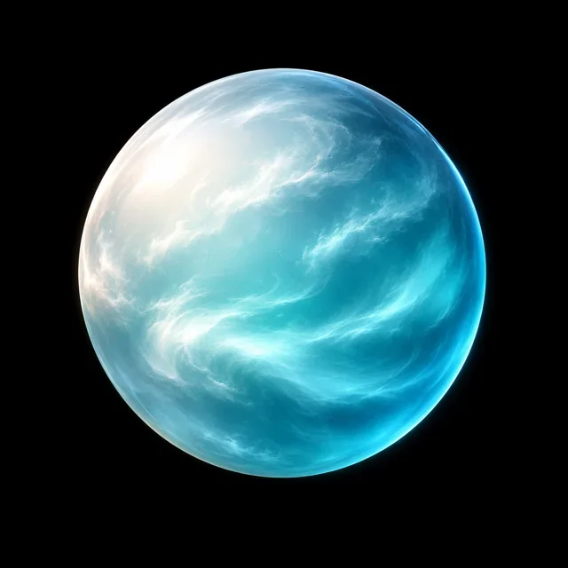</div>
        <div class="chip cut" style="left:13%;top:60%">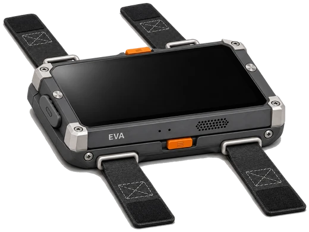</div>
        <div class="chip" style="right:6%;top:7%"></div>
        <div class="chip" style="right:12%;top:58%">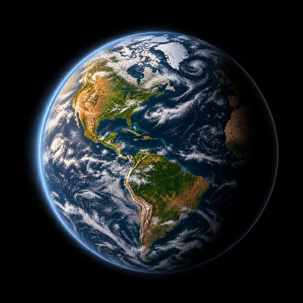</div>
        <div class="chip" style="left:38%;top:-3%">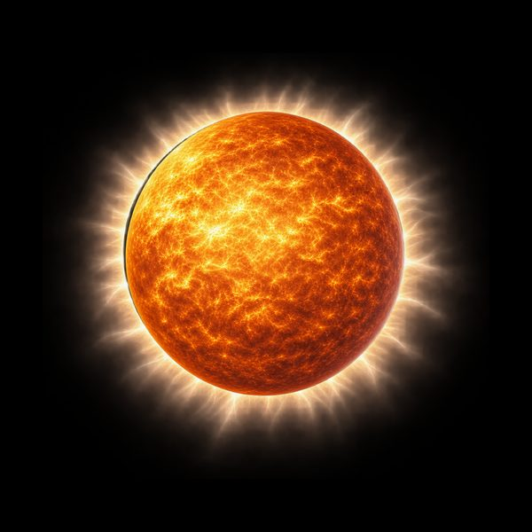</div>
        <div class="chip" style="left:30%;bottom:-5%"></div>
        <div class="chip" style="right:30%;bottom:-4%"></div>
      </div>
      <div class="ground" id="ground">
        <div class="cab"></div>
        <div class="shade"></div>
      </div>
      <div class="copy" id="heroCopy"><h1>Eva</h1><p data-i18n>The Super Intelligence copilot that <b>guides</b>, <b>records</b> and <b>warns</b> in space.</p></div>
    </div>
  </section>

  <!-- 2 · Statement -->
  <section class="space statement g" aria-labelledby="st">
    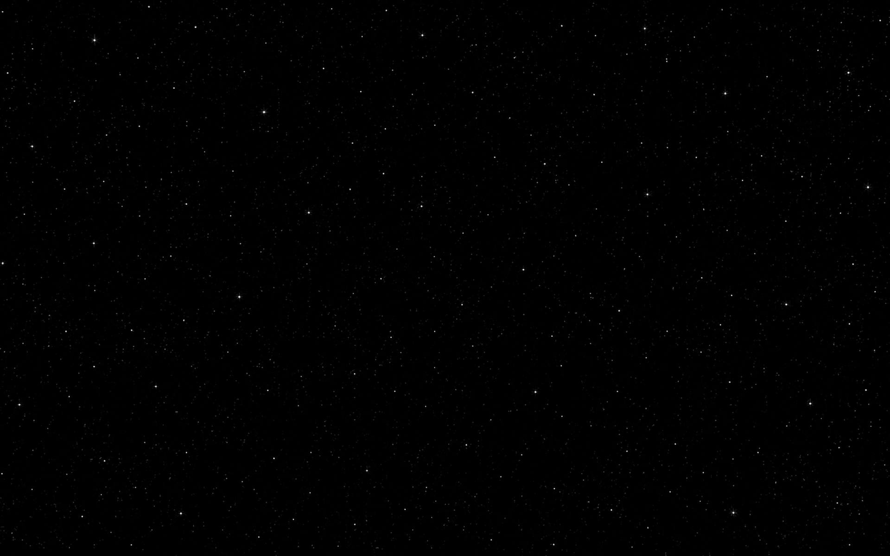
    <p class="big" id="st" data-reveal data-i18n>Fifteen passengers. <span class="mk">No doctor</span> on board. Earth <span class="mk">minutes</span> away.</p>
    <div class="row">
      <p data-reveal>Wristband<small>The only thing anyone wears: two magnetic modules, a sensor base on the skin and a screen on top with voice, the help button and ECG on demand.</small></p>
      <p data-reveal>Emergency station<small>Numbered, lit compartments, configurable per ship, with the AED in 01 a short float from every seat. The AED decides the shock.</small></p>
      <p data-reveal>Ship hub<small>The one host: runs Eva offline and keeps the signed log. No internet, no Earth needed.</small></p>
    </div>
  </section>

  <!-- 3 · Sensors record → Eva acts -->
  <section class="g spin" id="spin" aria-labelledby="sp">
    <div class="sh"><h2 id="sp">Sensors record. Eva acts.</h2></div>
    <div class="vs" id="vs" data-s="0">
      <div class="vp vp-a">
        <p class="vh">Today's wearable <small>ARCHeR · ActLumus</small></p>
        <svg class="vdev" viewBox="0 0 240 132" aria-hidden="true"><path class="ln" d="M98 0V24M142 0V24M98 108V132M142 108V132"/><rect class="ln" x="76" y="24" width="88" height="84" rx="20"/><rect class="ln" x="92" y="40" width="56" height="36" rx="6"/><text class="vclk" x="120" y="63" data-i18n-js>00:00</text><circle class="ln" cx="120" cy="92" r="4.5"/></svg>
        <svg class="vpulse" viewBox="0 0 400 60" preserveAspectRatio="none" aria-hidden="true"><g class="vwave"><path d="M0 34h13l6-4 5 4h8l4 5 5-26 5 32 4-11h10l7-7 8 7h19h13l6-4 5 4h8l4 5 5-26 5 32 4-11h10l7-7 8 7h19h13l6-4 5 4h8l4 5 5-26 5 32 4-11h10l7-7 8 7h19h13l6-4 5 4h8l4 5 5-26 5 32 4-11h10l7-7 8 7h19h13l6-4 5 4h8l4 5 5-26 5 32 4-11h10l7-7 8 7h19h13l6-4 5 4h8l4 5 5-26 5 32 4-11h10l7-7 8 7h19h13l6-4 5 4h8l4 5 5-26 5 32 4-11h10l7-7 8 7h19h13l6-4 5 4h8l4 5 5-26 5 32 4-11h10l7-7 8 7h19"/></g><path class="vflat" d="M0 34H400"/></svg>
        <div class="vlog"><i class="vline"></i><i class="vdot"></i><span class="vrec">Recorded · read after landing</span></div>
      </div>
      <div class="vp vp-b">
        <p class="vh">Eva <b class="vcount" aria-hidden="true"><span id="vsN" data-i18n-js>0.0</span> s</b></p>
        <svg class="vdev" viewBox="0 0 240 132" aria-hidden="true"><path class="ln" d="M82 0V26M158 0V26M82 106V132M158 106V132"/><rect class="ln" x="44" y="26" width="152" height="80" rx="9"/><rect class="ln vscr" x="58" y="38" width="124" height="56" rx="5"/><path class="ln vhb" d="M66 68h22l5-6 6 12 6-20 6 22 4-8h45"/><path class="vbang" d="M120 52v12M120 70v2"/><rect class="vbtnhw" x="112" y="20" width="16" height="6" rx="2"/></svg>
        <svg class="vpulse" viewBox="0 0 400 60" preserveAspectRatio="none" aria-hidden="true"><g class="vwave"><path d="M0 34h13l6-4 5 4h8l4 5 5-26 5 32 4-11h10l7-7 8 7h19h13l6-4 5 4h8l4 5 5-26 5 32 4-11h10l7-7 8 7h19h13l6-4 5 4h8l4 5 5-26 5 32 4-11h10l7-7 8 7h19h13l6-4 5 4h8l4 5 5-26 5 32 4-11h10l7-7 8 7h19h13l6-4 5 4h8l4 5 5-26 5 32 4-11h10l7-7 8 7h19h13l6-4 5 4h8l4 5 5-26 5 32 4-11h10l7-7 8 7h19h13l6-4 5 4h8l4 5 5-26 5 32 4-11h10l7-7 8 7h19h13l6-4 5 4h8l4 5 5-26 5 32 4-11h10l7-7 8 7h19"/></g><path class="vflat" d="M0 34H400"/></svg>
        <ol class="vsteps">
          <li><i>What</i><svg viewBox="0 0 48 30" aria-hidden="true"><circle cx="8" cy="23" r="3"/><path d="M12 24H44"/><circle cx="27" cy="4.5" r="3"/><path d="M27 8v8l-6 5M27 16l5 4M27 11l-3 9M27 11l3 9"/></svg><span>Start CPR</span></li>
          <li><i>Where</i><svg viewBox="0 0 48 30" aria-hidden="true"><rect x="1" y="1" width="46" height="28" rx="3"/><path d="M7 7h6v5H7zM17 7h6v5h-6zM27 7h6v5h-6zM37 7h6v5h-6zM7 18h6v5H7zM17 18h6v5h-6zM27 18h6v5h-6zM37 18h6v5h-6z" class="seat"/><path d="M4 15H38" class="route"/><circle cx="40" cy="20.5" r="3.4" class="dot"/></svg><span>Seat 4B · 3 m</span></li>
          <li><i>How</i><svg viewBox="0 0 48 30" aria-hidden="true"><rect x="1" y="1" width="46" height="28" rx="2"/><path d="M16 1v28M32 1v28M1 10h46M1 19h46"/><rect x="3" y="3" width="11" height="5" class="lit"/></svg><span>Station 01 lights · AED</span></li>
        </ol>
        <p class="vdone">Everyone knows what to do.</p>
      </div>
    </div>
    <p class="sr" id="vsLive" aria-live="polite"></p>
    <button class="vgo" id="vsBtn" type="button" data-i18n-js>Simulate an event</button>
    <p class="vnote">10 s is our design target from Eva's call.</p>
    <p class="src">Sources: <a href="https://pesquisaparainovacao.fapesp.br/4031">FAPESP · Pesquisa para Inovação, the Condor Instruments actigraph on Artemis II</a> · <a href="https://www.nasa.gov/image-detail/amf-jsc2025e075542_alt/">NASA · ARCHeR actigraphy device (jsc2025e075542)</a> · <a href="https://agencia.fapesp.br/58065">Agência FAPESP · the ActLumus actigraph</a></p>
  </section>

  <!-- 4 · Eva's functions -->
  <section class="g fns" id="eva" aria-labelledby="fn">
    <div class="sh"><h2 id="fn">What Eva does</h2></div>
    <ol class="loop5">
      <li><b>Sense</b><span>Live vitals</span><span>30 s ECG</span></li>
      <li><b>Understand</b><span>Your own baseline</span><span>Diagnostic support</span></li>
      <li><b>Guide</b><span>Step by step</span><span>Nearest helper</span><span>Station</span><span>Shelter route</span></li>
      <li><b>Record</b><span>Daily log</span><span>Mood journal</span><span>Signed to Earth</span></li>
      <li><b>Talk</b><span>Text, voice, photo</span></li>
    </ol>
    <p class="rule">Diagnostic support only. The AED decides the shock.</p>
  </section>

  <!-- 5 · Wristband v2: two magnetic modules (interim visuals: team reference images band2-*.webp, to be swapped for renders) -->
  <section class="pinsec storyp bandp" id="wsec" aria-labelledby="wh">
    <div class="stage">
      <div class="bview"><div class="bfig" id="bfig">
        
        
        
        <div class="bsuit" id="bsuit" role="img" aria-label="Suit mode, exploded: the suit sleeve sits between the screen module and the sensor base. The magnets hold through the fabric, the contacts part, and the base keeps sending by LoRa on its own battery.">
          <div class="su-pic">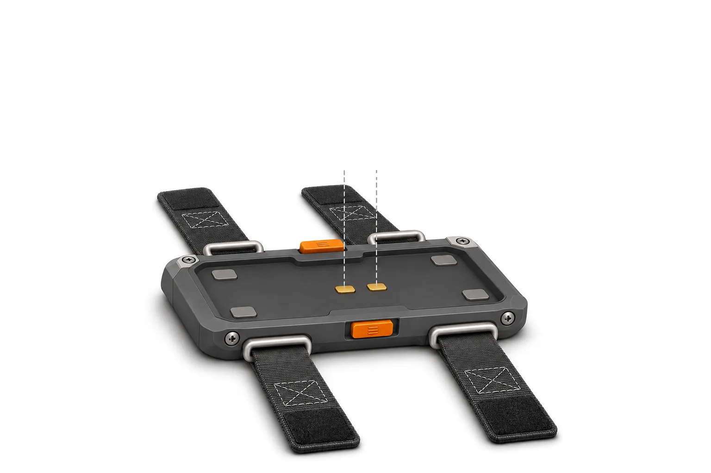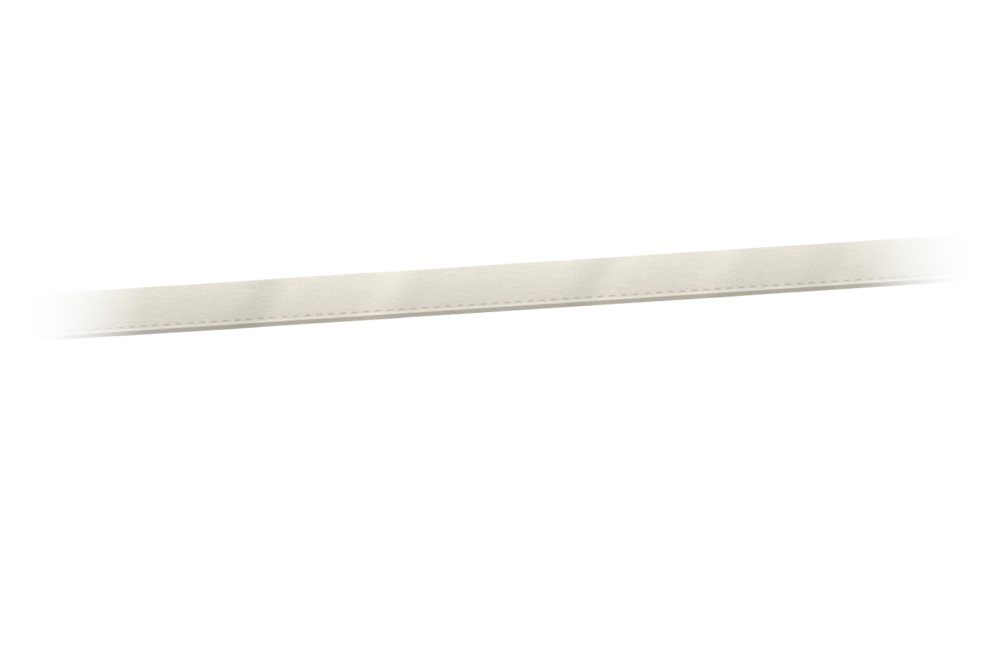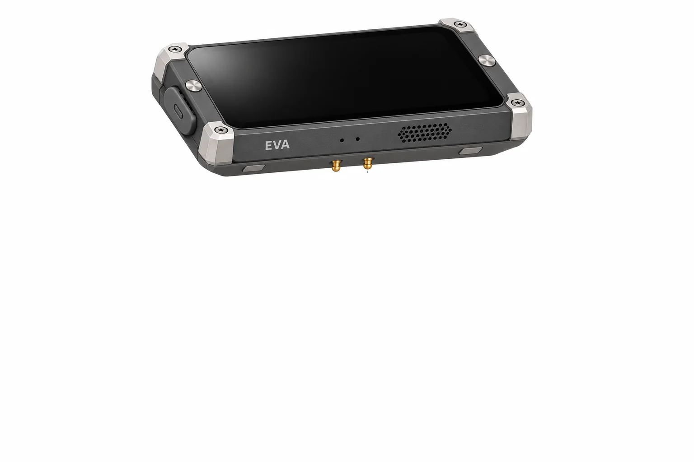</div>
          <svg class="su-lora" viewBox="0 0 40 48" aria-hidden="true"><path d="M34 14a14 14 0 0 0 0 20M26 7a24 24 0 0 0 0 34M18 0a34 34 0 0 0 0 48"/></svg>
          <div class="su-tags" aria-hidden="true">
            <i class="hot l" data-n="1" style="left:30.1%;top:13.4%"><span><b>Screen module</b><small>outside the sleeve</small></span></i>
            <i class="hot ml" data-n="2" style="left:75.2%;top:40.4%"><span><b>Suit sleeve</b></span></i>
            <i class="hot ml" data-n="3" style="left:69.1%;top:58.7%"><span><b>Sensor base</b><small>on the skin, own battery + LoRa</small></span></i>
          </div>
          <div class="su-foot"><ol class="su-leg" aria-hidden="true"><li>Screen module · outside the sleeve</li><li>Suit sleeve</li><li>Sensor base · on the skin, own battery + LoRa</li></ol><p class="su-cap">Magnets hold through the fabric; the contacts part.</p></div>
        </div>
                <div class="bscr" id="bscr" aria-hidden="true">
          <div class="ui on" data-u="home"><div class="k"><span>EVA</span><span>08:42</span></div><div class="big">All good</div><div class="sub">Pulse 72 · SpO₂ 98% · 36.4 °C</div></div>
          <div class="ui" data-u="ecg"><div class="k"><span>EVA · ECG</span><span>24 s</span></div><svg viewBox="0 0 240 40" preserveAspectRatio="none"><path d="M0 24H18l4-3 4 3h6l3 4 4-22 4 26 3-8h10l5-5 6 5H72l4-3 4 3h6l3 4 4-22 4 26 3-8h10l5-5 6 5H126l4-3 4 3h6l3 4 4-22 4 26 3-8h10l5-5 6 5H180l4-3 4 3h6l3 4 4-22 4 26 3-8h10l5-5 6 5H240"/></svg><div class="sub">Keep still · index and little finger on the pads</div></div>
        </div>
        <div class="hs on" data-k="0"><i class="hot" style="left:45.5%;top:22.4%"><span>Help button</span></i><i class="hot" style="left:57%;top:61.9%"><span>Base button</span></i><i class="hot" style="left:19.6%;top:48%"><span>Side button</span></i><i class="hot" style="left:66.2%;top:53.8%"><span>Speaker</span></i></div>
        <div class="hs" data-k="1"><i class="hot" style="left:50%;top:13%"><span>Screen module</span></i><i class="hot" style="left:54.7%;top:34.8%"><span>Spring contacts</span></i><i class="hot l" style="left:65%;top:54.8%"><span>Magnet seat</span></i><i class="hot" style="left:28%;top:62%"><span>Sensor base</span></i></div>
        <div class="hs" data-k="2"><i class="hot" style="left:12.5%;top:38.8%"><span>Magnet seat</span></i><i class="hot ml" style="left:23.2%;top:46.5%"><span>Contacts</span></i><i class="hot" style="left:13.8%;top:65.4%"><span>Strap loop</span></i><i class="hot l" style="left:86.8%;top:43.8%"><span>EDA electrode</span></i><i class="hot ml" style="left:75.5%;top:50.6%"><span>Pulse and SpO₂ sensor</span></i></div>
        <div class="hs" data-k="4"><i class="hot l mr" style="left:22.3%;top:41.3%"><span>ECG pad</span></i><i class="hot ml" style="left:77%;top:29.5%"><span>ECG pad</span></i></div>
      </div></div>
      <div class="ptxt">
        <p class="label" id="wh">Wristband</p>
        <div class="sts">
          <div class="st" data-v="0"><span class="n">01 / 05</span><h3>One band, two magnetic modules</h3><p>A rugged screen module clicks onto a slim sensor base. Metal corner bumpers, a rubberised frame and orange buttons you can find without looking.</p></div>
          <div class="st" data-v="1"><span class="n">02 / 05</span><h3>The screen module on top</h3><p>The main battery, the help button, voice, vibration, its own LoRa radio and the two ECG pads. Spring contacts link it to the base.</p></div>
          <div class="st" data-v="2"><span class="n">03 / 05</span><h3>The sensor base on the skin</h3><p>Pulse and SpO₂, skin temperature, EDA, motion, with its own battery and LoRa. Both straps belong to the base, so the screen lifts off.</p></div>
          <div class="st" data-v="3"><span class="n">04 / 05</span><h3>Suit mode</h3><p>The sleeve goes between the modules. The magnets hold, the contacts part, and the base runs on its own battery and keeps sending by LoRa.</p></div>
          <div class="st" data-v="0" data-u="ecg"><span class="n">05 / 05</span><h3>ECG on demand: two fingers of one hand, about 30 s</h3><p>Rest two fingers of the same hand on the two metal pads, the index and the little finger lifted, for about 30 s. A strip for diagnostic support, never continuous, and it never decides a shock.</p></div>
        </div>
        <div class="bar"><i></i></div>
      </div>
    </div>
  </section>

  <!-- 4 · Case A (pinned, scenes on the left, text in the right negative space) -->
  <section class="pinsec storyp caseA" id="caseA" aria-labelledby="ca">
    <div class="stage">
      <div class="scn">
        
        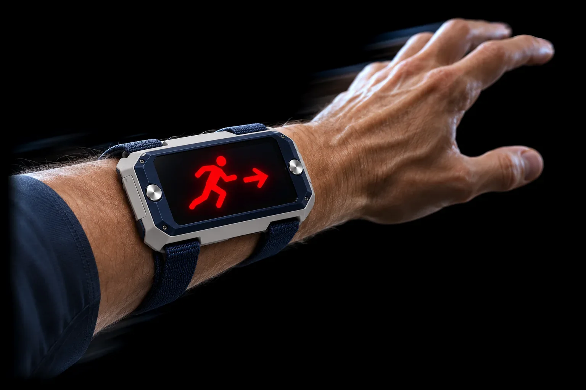
        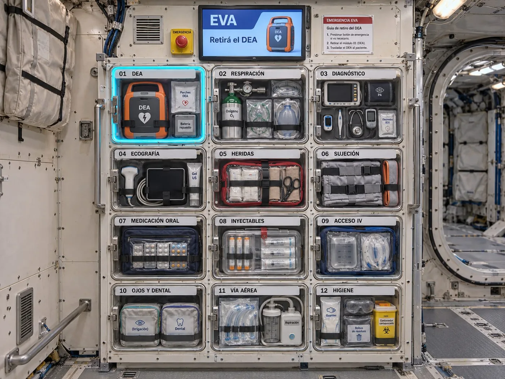
        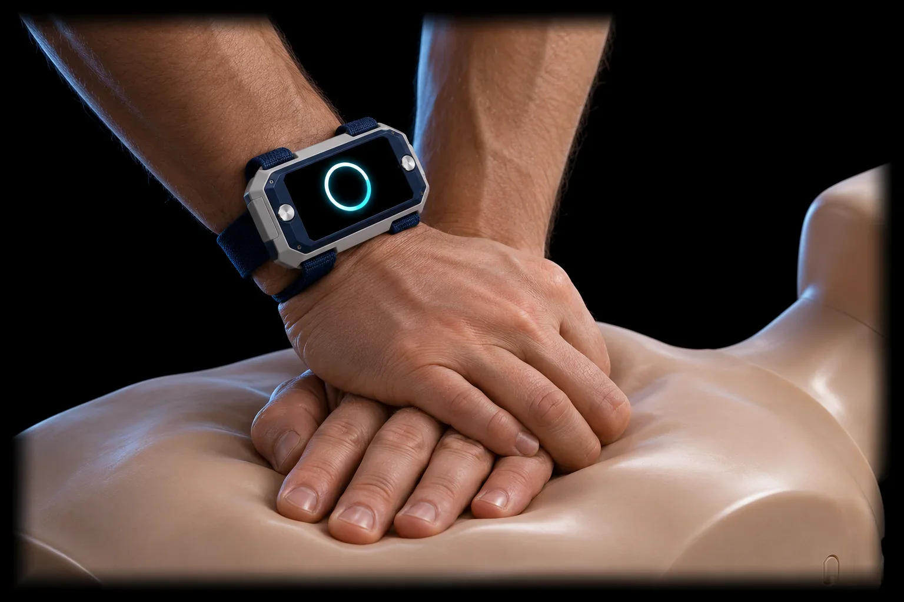
        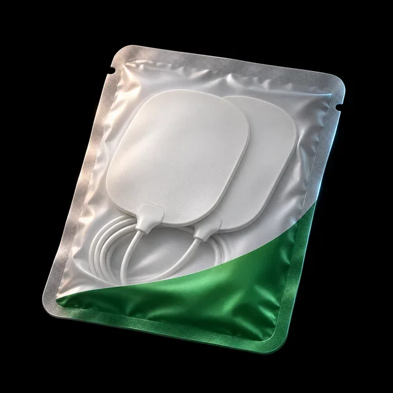
        <div class="ping" id="hlA"><i></i><span id="hlT" data-i18n-js></span></div>
      </div>
      <div class="ptxt">
        <p class="label" id="ca">Case A · Cannot act</p>
        <div class="sts">
          <div class="st" data-pt="37,43" data-tag="Passenger 07 · no pulse"><span class="n">01 / 05</span><h3>No pulse, no movement, no answer</h3><p>The wristband cross-checks independent signals before Eva calls anyone. Stillness alone is not an emergency.</p></div>
          <div class="st" data-pt="38,45" data-tag="Helper 1 · go to seat 07"><span class="n">02 / 05</span><h3>The nearest passenger starts CPR</h3><p>Their wristband shows where to go. If they do not confirm in 20 seconds, Eva calls the next one.</p></div>
          <div class="st" data-pt="31,28" data-tag="Compartment 01 · lit"><span class="n">03 / 05</span><h3>A second passenger brings the AED</h3><p>The station lights compartment 01 teal and its screen says Take the AED, so the runner finds it at a glance.</p></div>
          <div class="st" data-pt="38,31" data-tag="Push · 110 per minute"><span class="n">04 / 05</span><h3>CPR, one step at a time</h3><p>Eva paces every compression on the helper's wrist with a ring, voice and vibration.</p></div>
          <div class="st" data-pt="47,37" data-tag="AED · its own analysis"><span class="n">05 / 05</span><h3>The AED decides the shock</h3><p>It reads the rhythm through its own pads. Eva never does. Every step goes into the log for the ship and for Earth.</p></div>
        </div>
        <div class="bar"><i></i></div>
      </div>
    </div>
  </section>

  <!-- 5 · Case B (pinned): a guided ECG check on the wrist -->
  <section class="pinsec storyp caseB" id="caseB" aria-labelledby="cb">
    <div class="stage">
      <div class="ptxt">
        <p class="label" id="cb">Case B · Can act</p>
        <div class="sts">
          <div class="st"><span class="n">01 / 04</span><h3>Eva offers a quick ECG check</h3><p>A pulse that looks irregular, or you say you feel unwell. You are awake and able, so Eva guides you through it yourself.</p></div>
          <div class="st"><span class="n">02 / 04</span><h3>Two fingers of the same hand, about 30 s</h3><p>Rest the index and the little finger, lifted, on the two metal pads and keep still for about 30 s. It works over the suit if your hand is bare.</p></div>
          <div class="st"><span class="n">03 / 04</span><h3>Regular rhythm · saved and sent to the hub</h3><p>The strip goes into your log and to the ship hub, ready for Earth. A check on demand, never continuous, never a shock decision.</p></div>
          <div class="st"><span class="n">04 / 04</span><h3>If something looks wrong, a passenger comes</h3><p>Eva calls the nearest helper and switches to Case A if you stop responding.</p></div>
        </div>
        <div class="bar"><i></i></div>
      </div>
      <div class="bdev" id="bdev" data-s="0">
        <div class="w">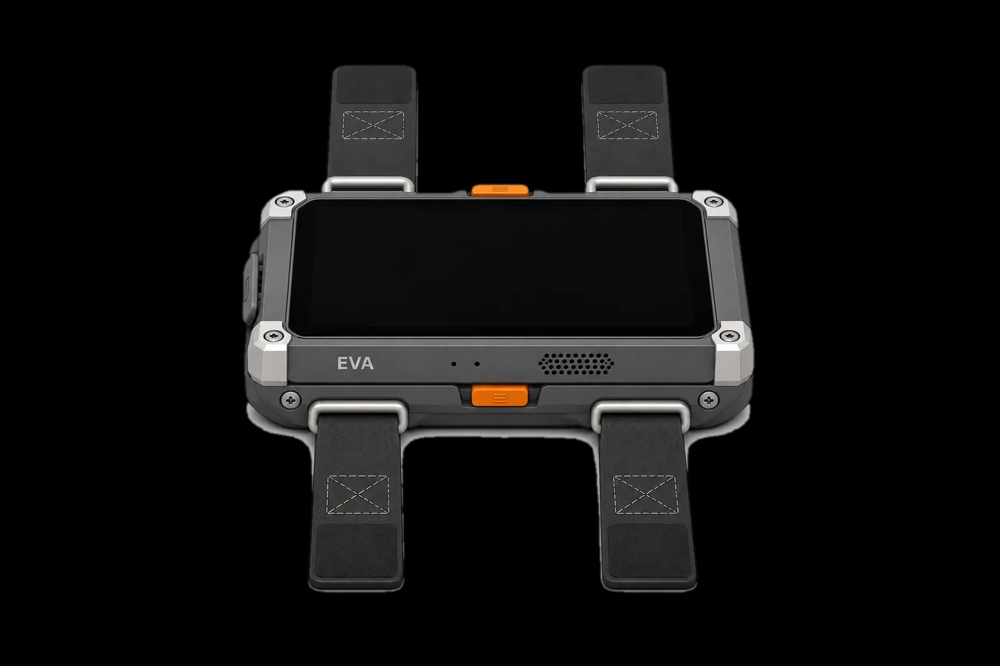
          <div class="scr" id="scr" data-s="0" aria-live="polite">
            <div class="ring" id="uiP" data-i18n-js aria-hidden="true">♥︎</div>
            <div class="col">
              <div class="top"><small id="uiK" data-i18n-js>ECG check · 1 of 3</small><b id="uiS" data-i18n-js></b></div>
              <svg viewBox="0 0 240 40" preserveAspectRatio="none" aria-hidden="true"><path pathLength="100" d="M0 24H18l4-3 4 3h6l3 4 4-22 4 26 3-8h10l5-5 6 5H72l4-3 4 3h6l3 4 4-22 4 26 3-8h10l5-5 6 5H126l4-3 4 3h6l3 4 4-22 4 26 3-8h10l5-5 6 5H180l4-3 4 3h6l3 4 4-22 4 26 3-8h10l5-5 6 5H240"/></svg>
              <span class="tx" id="uiT" data-i18n-js>Index and little finger of one hand on both pads</span>
            </div>
          </div>
        </div>
      </div>
    </div>
  </section>

  <!-- 8 · Emergency station: numbered compartments, configurable per ship; Eva lights 01 and the sensors report back (interim visuals: station-*.webp; images carry Spanish labels, English is overlaid) -->
  <section class="pinsec xsec esec" id="esec" data-s="0" aria-labelledby="eh">
    <div class="stage">
      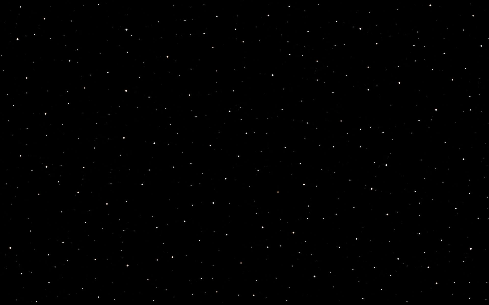
      <div class="head" id="ehead"><p class="label" id="eh">Emergency station</p><h2 class="prop">Eva shows what to take. <span class="mk">The AED decides the shock.</span></h2></div>
      <div class="sfig" id="sfig">
        
        <div class="tag" style="left:14.1%;top:27.2%"><b>01</b>AED</div><div class="tag" style="left:33.9%;top:27.2%"><b>02</b>Breathing</div><div class="tag" style="left:53.2%;top:27.2%"><b>03</b>Diagnostics</div><div class="tag" style="left:72.5%;top:27.2%"><b>04</b>Ultrasound</div>
        <div class="tag" style="left:14.1%;top:48.8%"><b>05</b>Wounds</div><div class="tag" style="left:33.9%;top:48.8%"><b>06</b>Restraint</div><div class="tag" style="left:53.2%;top:48.8%"><b>07</b>Oral meds</div><div class="tag" style="left:72.5%;top:48.8%"><b>08</b>Injectables</div>
        <div class="tag" style="left:14.1%;top:69.5%"><b>09</b>IV access</div><div class="tag" style="left:33.9%;top:69.5%"><b>10</b>Eyes and dental</div><div class="tag" style="left:53.2%;top:69.5%"><b>11</b>Airway</div><div class="tag" style="left:72.5%;top:69.5%"><b>12</b>Hygiene</div>
        <div class="scr" aria-live="polite"><b>EVA</b><span class="s0">Standing by</span><small class="s0">All 15 passengers stable</small><span class="s1">Take the AED</span><small class="s1">Compartment 01 · lit</small></div>
        <div class="c01" aria-hidden="true"></div>
        <i class="hot h-door" style="left:32.1%;top:31%"><span>Door sensor</span></i>
        <i class="hot h-item" style="left:20.7%;top:40.5%"><span>Item sensor</span></i>
        <i class="hot l h-btn" style="left:68.4%;top:18.4%"><span>Red button</span></i>
        <div class="taken">AED taken · 00:47</div>
      </div>
      <div class="ledger" id="eledger">
        <div class="lbl" data-at=".1">Numbered compartments<small>Configurable per ship, labelled, each behind a clear window with a light strip</small></div>
        <div class="lbl" data-at=".24">Eva screen: Take the AED<small>Eva says what to take, in words</small></div>
        <div class="lbl" data-at=".38">Compartment 01 lights teal<small>The AED and spare pads, found at a glance</small></div>
        <div class="lbl" data-at=".52">Door 01 open · 00:41<small>The door sensor reports to the hub</small></div>
        <div class="lbl" data-at=".66">AED taken · 00:47<small>The item sensor confirms; it goes into the signed log</small></div>
        <div class="lbl" data-at=".8">Red button<small>Anyone can raise the alarm to every wristband</small></div>
      </div>
    </div>
  </section>

  <section class="g kit2" id="stationKit" aria-labelledby="kh">
    <div class="sh"><h2 id="kh">Inside the station</h2></div>
    <div class="kgrid">
      <figure class="kfig" id="kfig"><div class="kpic"></div><figcaption>Wall panel of numbered compartments, configurable per ship. On top: the Eva screen, the red button and a printed AED retrieval guide.</figcaption></figure>
      <ol class="clist" id="clist">
      <li class="on" data-c="0" tabindex="0"><b>01</b><span>AED</span><small>defibrillator + spare pads</small></li>
      <li data-c="1" tabindex="0"><b>02</b><span>Breathing</span><small>oxygen, mask</small></li>
      <li data-c="2" tabindex="0"><b>03</b><span>Diagnostics</span><small>monitor, thermometer</small></li>
      <li data-c="3" tabindex="0"><b>04</b><span>Ultrasound</span><small>probe</small></li>
      <li data-c="4" tabindex="0"><b>05</b><span>Wounds</span><small>dressings</small></li>
      <li data-c="5" tabindex="0"><b>06</b><span>Restraint</span><small>straps</small></li>
      <li data-c="6" tabindex="0"><b>07</b><span>Oral meds</span><small>tablets</small></li>
      <li data-c="7" tabindex="0"><b>08</b><span>Injectables</span><small>crew kit</small></li>
      <li data-c="8" tabindex="0"><b>09</b><span>IV access</span><small>lines</small></li>
      <li data-c="9" tabindex="0"><b>10</b><span>Eyes and dental</span><small>kits</small></li>
      <li data-c="10" tabindex="0"><b>11</b><span>Airway</span><small>suction</small></li>
      <li data-c="11" tabindex="0"><b>12</b><span>Hygiene</span><small>gloves</small></li>
      </ol>
    </div>
    <div class="variants">
      <figure>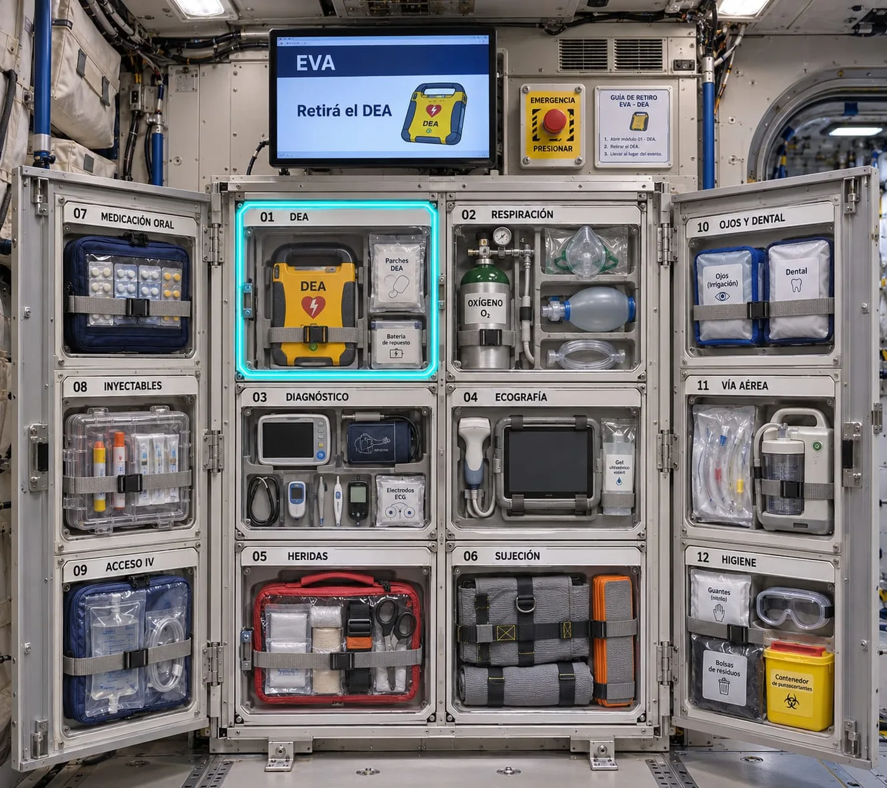<figcaption>Variant: a centre cabinet whose side doors open to more compartments. Concept images carry Spanish labels; the legend above is the product text.</figcaption></figure>
    </div>
  </section>

  <!-- 9 · How it links: one host (ship hub), many clients -->
  <section class="g links" id="links" aria-labelledby="lh">
    <div class="sh"><h2 id="lh">How it links</h2></div>
    <div class="lgrid">
      <svg class="dg" viewBox="0 0 560 420" role="img" aria-labelledby="dgT dgD">
        <title id="dgT">How Eva's parts link</title>
        <desc id="dgD">The ship hub is the only host: it hosts the Super Intelligence and stores everything. Wristbands reach it over a LoRa mesh, phones over Wi-Fi, and the station over LoRa. The hub stores the signed records and forwards them; Earth receives and acknowledges them. If the hub is down, a wristband's alarm goes straight to the station.</desc>
        <defs><marker id="aN" viewBox="0 0 10 10" refX="9" refY="5" markerWidth="7" markerHeight="7" orient="auto-start-reverse"><path class="m-net" d="M0 0 10 5 0 10Z"/></marker><marker id="aA" viewBox="0 0 10 10" refX="9" refY="5" markerWidth="7" markerHeight="7" orient="auto-start-reverse"><path class="m-al" d="M0 0 10 5 0 10Z"/></marker></defs>
        <path class="wifi" d="M280 84V148"/>
        <path class="lora" d="M280 276V316" marker-start="url(#aN)" marker-end="url(#aN)"/>
        <path class="lora" d="M90 190H184" marker-start="url(#aN)" marker-end="url(#aN)"/>
        <path class="nsl" d="M378 210H438"/>
        <path class="mesh" d="M56 152V173M56 207V228"/>
        <path class="alarm" d="M40 262C40 342 120 352 206 352" marker-end="url(#aA)"/>
        <rect class="hub" x="186" y="148" width="192" height="128"/><rect class="tagf" x="186" y="148" width="58" height="22"/><text class="t3" x="194" y="164">Host</text>
        <text class="t1" x="200" y="198">Ship hub</text><text class="t2 sm" x="200" y="222">Hosts the Super</text><text class="t2 sm" x="200" y="243">Intelligence</text><text class="t2 sm" x="200" y="264">Stores everything</text>
        <rect class="box" x="210" y="20" width="140" height="64"/><text class="t1" x="224" y="50">Phones</text><text class="t2" x="224" y="74">Wi-Fi</text>
        <rect class="box" x="210" y="316" width="140" height="66"/><rect class="teal" x="326" y="328" width="12" height="12"/><text class="t1" x="224" y="346">Station</text><text class="t2" x="224" y="371">LoRa</text>
        <rect class="band" x="24" y="122" width="64" height="30" rx="7"/><rect class="band" x="24" y="175" width="64" height="30" rx="7"/><rect class="band" x="24" y="230" width="64" height="30" rx="7"/>
        <text class="t1" x="8" y="104">Wristbands</text><text class="tnet" x="137" y="214" text-anchor="middle">LoRa mesh</text>
        <circle class="earth" cx="478" cy="210" r="36"/><text class="t1" x="478" y="276" text-anchor="middle">Earth</text><text class="t2 sm" x="552" y="298" text-anchor="end">Receives and acknowledges</text><text class="t2 sm" x="552" y="318" text-anchor="end">the signed records</text>
        <text class="tal" x="8" y="408">Hub down? The alarm goes direct.</text>
      </svg>
      <ul class="why3">
        <li>One source of truth: the hub's signed log.</li>
        <li>Fully offline: no internet, no Earth needed.</li>
        <li>Demo: one laptop is the hub, phones are the bands.</li>
      </ul>
    </div>
  </section>

  <!-- 7 · Solar alert (fully procedural: canvas, no images) -->
  <section class="pinsec solar" id="solar" aria-labelledby="sa">
    <div class="stage">
      <canvas id="solarCv" role="img" aria-label="Hull camera view from the spacecraft: the Sun flares and a storm of protons streams straight at the camera."></canvas>
      <canvas id="sunGL" aria-label="3D model of the Sun from NASA. Drag to rotate it."></canvas>
      <canvas id="fxCv" aria-hidden="true"></canvas>
      <canvas id="asciiCv" aria-hidden="true"></canvas>
      <div class="hud" aria-hidden="true"><i class="c c1"></i><i class="c c2"></i><i class="c c3"></i><i class="c c4"></i><div class="bar"><span>Hull cam 02 · forward</span><span class="rec" id="recT" data-i18n-js>00:00:00</span></div></div>
      <div class="meter" id="meter" data-i18n-js>Proton flux · 2 pfu</div>
      <ol class="log" id="slog">
        <li data-at=".03">Eva watches NASA DONKI and NOAA GOES</li>
        <li data-at=".16" class="red">X-ray flare seen · the particles are about 18 minutes behind</li>
        <li data-at=".29">Every wristband alerted · <span id="nAck">0</span>/15 acknowledged</li>
        <li data-at=".43">The route to the storm shelter lights up on every wrist · <span id="nIn">0</span>/15 inside</li>
        <li data-at=".76">All 15 sheltered before the particles arrive · dose logged per passenger</li>
        <li data-at=".16" class="m red">X-ray flare · particles in ~18 min</li>
        <li data-at=".29" class="m">Everyone alerted</li>
      </ol>
      <button class="ascii-t" id="asciiBtn" type="button" aria-pressed="false" hidden>+ ASCII</button>
      <p class="drag" id="sunHint">Drag the Sun</p>
      <div class="txt"><p class="label" id="sa">Solar alert</p><h2>Warned minutes early. Everyone stays in the shelter.</h2></div>
      <div class="alvig" aria-hidden="true"></div>
      <div class="alert" role="alert"><div class="al-tape"></div><div class="al-top"><svg viewBox="0 0 100 100" aria-hidden="true"><circle cx="50" cy="50" r="48" fill="#ffd400"/><circle cx="50" cy="50" r="8" fill="#000"/><path d="M50 37 L50 12 A38 38 0 0 1 82.9 31 L60.8 43.7 A13 13 0 0 0 50 37Z" fill="#000"/><path d="M50 37 L50 12 A38 38 0 0 1 82.9 31 L60.8 43.7 A13 13 0 0 0 50 37Z" fill="#000" transform="rotate(120 50 50)"/><path d="M50 37 L50 12 A38 38 0 0 1 82.9 31 L60.8 43.7 A13 13 0 0 0 50 37Z" fill="#000" transform="rotate(240 50 50)"/></svg>RADIATION STORM<em>LIVE</em></div><b data-i18n-js>Go to the shelter now</b><div class="al-count"><strong id="alT" data-i18n-js>18:00</strong><i id="alI" data-i18n-js>until the particles hit</i></div><span data-i18n-js>Drop everything. Follow the arrows on your wristband.</span></div>
    </div>
  </section>

  <!-- 8 · Earth link -->
  <section class="pinsec link-sec" id="linkSec" aria-labelledby="el">
    <div class="stage">
      
      <div class="head"><div><p class="label" id="el">Earth link</p><h2 class="prop" style="max-width:12em">Every step recorded, even minutes from Earth</h2></div><p class="lt" id="lt">3 min<small>one-way light time to Earth</small></p></div>
      <div class="playhead" aria-hidden="true"></div>
      <div class="track" id="track">
        <div class="tline" id="tline"><i></i><b></b></div>
        <div class="planet">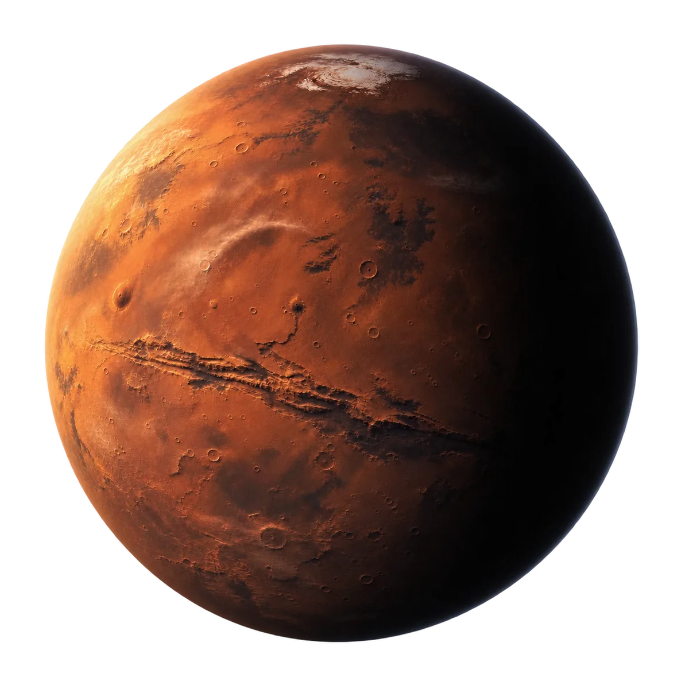</div>
        <div class="packet"><b>12:01:04</b><span>No pulse · passenger 07</span></div>
        <div class="packet"><b>12:01:05</b><span>CPR helper · passenger 03</span></div>
        <div class="packet"><b>12:01:06</b><span>AED runner · passenger 11</span></div>
        <div class="packet"><b>CPR 2:00</b><span>Signed, chained, queued</span></div>
        <div class="packet"><b>ACK</b><span>Received on Earth</span></div>
        <div class="planet">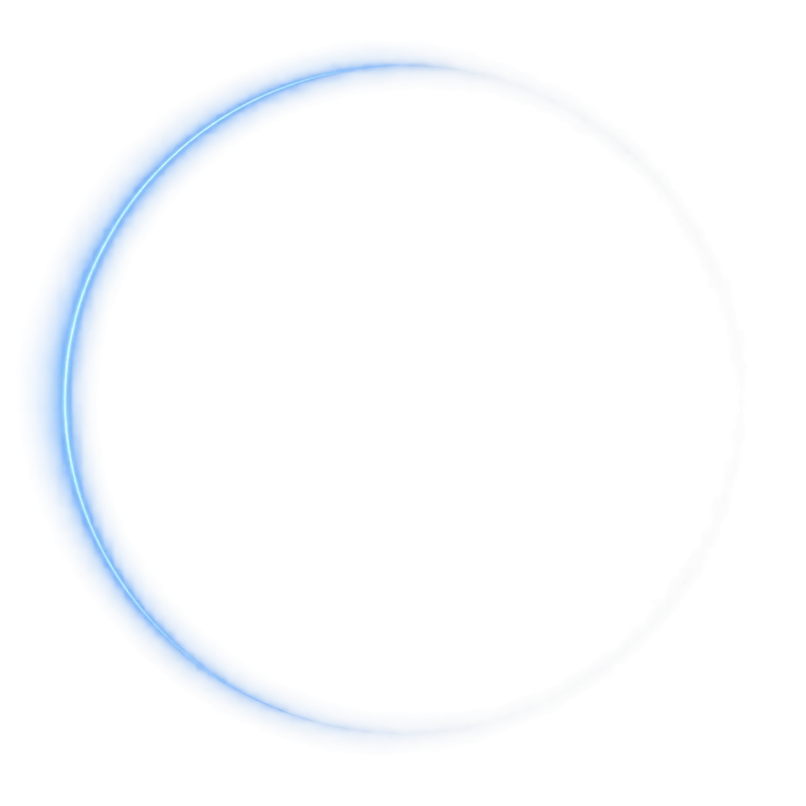</div>
      </div>
    </div>
  </section>

  <!-- 9 · Arrival -->
  <section class="arrive" id="arrive" aria-label="Arrival">
    <div class="stage"><div class="dots"></div><p class="cap prop">Arrive with every step on record.</p></div>
  </section>

  <!-- 10 · Why -->
  <section class="g" aria-labelledby="why" style="margin-top:96px">
    <div class="sh"><h2 id="why">Why it matters</h2></div>
    <div class="ed" data-reveal>
      <p class="prop">Care that does not wait for a doctor</p>
      <div class="body">
        <p data-i18n>Far from Earth, a crew has to detect, diagnose and treat on its own: one-way radio delays can pass twenty minutes, and on the ISS the crew medical officer often has about 40 hours of medical training. NASA researchers argue for an on-board clinical decision support system that says what to do now, why, how it decided and what comes next. In their preliminary analysis of a 26-month mission, raising the crew's skill this way cut deaths by at least 34%.<sup><a class="u" href="#ref-1">1</a></sup> Eva brings that idea to passengers with no training at all.</p>
        <p data-i18n>About 70% of long-duration ISS crew members, on missions of about six to twelve months, show signs of spaceflight-associated neuro-ocular syndrome, from mild to severe.<sup><a class="u" href="#ref-2">2</a></sup> In a study of NASA health records from 71 ISS astronauts, 85% reported at least one nasal or sinus problem.<sup><a class="u" href="#ref-3">3</a></sup> On a commercial flight in space most passengers will not be clinicians, and Earth may be minutes away by radio.</p>
        <p data-i18n>We built Eva on NASA's open Inspiration4 data: the metabolic panel (OSDR OSD-575) and the blood count (OSDR OSD-569).<sup><a class="u" href="#ref-4">4</a></sup><sup><a class="u" href="#ref-5">5</a></sup> In our analysis, against each crew member's own baseline, the metabolic panel the day after landing showed 16 of 72 changes, against 7 with standard laboratory ranges. NASA's Human Health and Performance data-sharing policy sets how astronaut medical and research data can be requested, reviewed and released.<sup><a class="u" href="#ref-6">6</a></sup></p>
        <p>Eva guides, records and warns, and gives diagnostic support that the crew lead confirms. The AED decides the shock. Treatment decisions belong to validated devices, never to a chat model.</p>
        <p class="src">Sources: <a href="https://doi.org/10.1038/s41526-023-00284-1" target="_blank" rel="noopener">Russell et al. 2023, npj Microgravity</a> · <a href="https://ntrs.nasa.gov/citations/20230006218" target="_blank" rel="noopener">NASA · SANS briefing for astronaut candidates (NTRS 20230006218)</a> · <a href="https://pmc.ncbi.nlm.nih.gov/articles/PMC12322577/" target="_blank" rel="noopener">Khan et al. 2025, Laryngoscope Investigative Otolaryngology</a> · <a href="https://osdr.nasa.gov/bio/repo/data/studies/OSD-575" target="_blank" rel="noopener">NASA OSDR · OSD-575</a> · <a href="https://osdr.nasa.gov/bio/repo/data/studies/OSD-569" target="_blank" rel="noopener">NASA OSDR · OSD-569</a> · <a href="https://www.nasa.gov/directorates/esdmd/hhp/human-health-and-performance-data-sharing/" target="_blank" rel="noopener">NASA · Human Health and Performance data sharing</a></p>
      </div>
    </div>
  </section>

  <!-- 11 · Slabs -->
  <section aria-labelledby="kit">
    <div class="g"><div class="sh"><h2 id="kit">WearMeds</h2></div></div>
    <div class="slabs">
      <article class="slab studio g" data-slab>
        <div><p class="name">Wristband</p><div class="specs"><div>Modules<span>Screen on top, sensor base on the skin, magnets</span></div><div>Screen<span>Main battery, help button, voice, ECG pads</span></div><div>Talks to<span>Ship hub over LoRa, from both modules</span></div></div></div>
        <div class="pic"><div class="tt" id="tt" tabindex="0" role="img" aria-label="The Eva wristband turning on a white studio stage. Drag it or use the arrow keys to turn it.">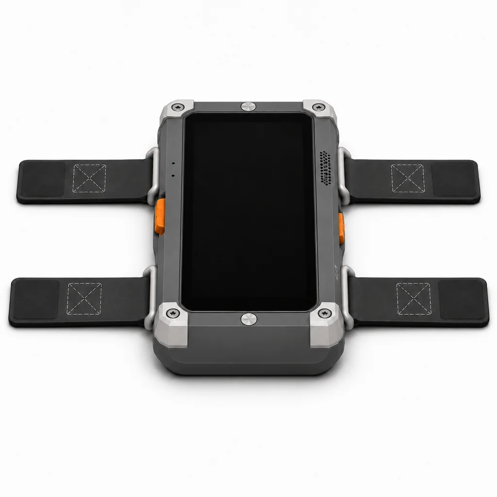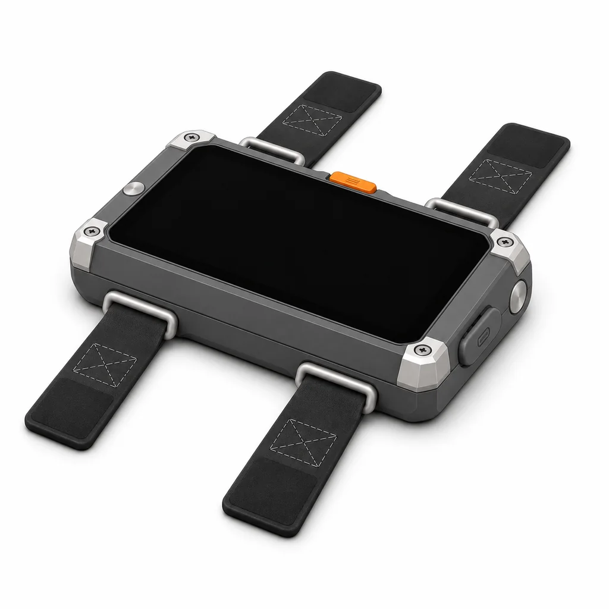</div><p class="tt-hint" aria-hidden="true">Drag to turn</p></div>
      </article>
      <article class="slab dark g" data-slab>
        <div><p class="name">Station</p><div class="specs"><div>Holds<span>Numbered compartments, configurable per ship; the AED in 01</span></div><div>Eva<span>Lights 01 and says what to take</span></div><div>Decides<span>The AED, through its own pads</span></div></div></div>
        <div class="pic"></div>
      </article>
      <article class="slab solo g" data-slab>
        <div><p class="name">Ship hub</p><div class="specs"><div>Runs<span>Eva, offline, with no link to Earth</span></div><div>Hosts<span>The Super Intelligence and everything it stores</span></div><div>Sends<span>Signed records to Earth</span></div></div></div>
      </article>
    </div>
  </section>

  <!-- 12 · Business -->
  <section class="g" aria-labelledby="model">
    <div class="sh"><h2 id="model">Business</h2></div>
    <div class="ed" data-reveal>
      <p class="prop">Hardware once, Eva every mission</p>
      <div class="body">
        <p>Operators buy a WearMeds kit for each passenger and run Eva on the ship hub, licensed per mission.</p>
        <p>Bands come in sizes and finishes, the sensor base takes new validated sensors, and Eva works with the AED the ship already carries. The same platform serves orbital stays, lunar bases and remote work on Earth.</p>
        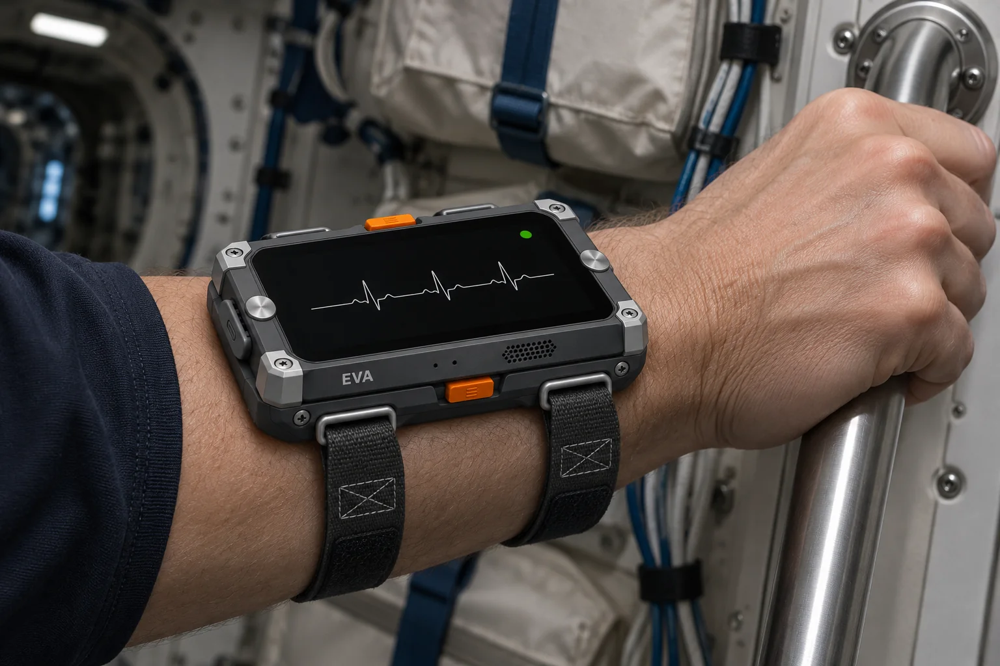
      </div>
    </div>
  </section>

  <section class="g team-sec" aria-label="Team"><div id="team"></div></section>

  <section class="g close" id="contact" aria-labelledby="inv">
    <div class="sh"><h2>Contact</h2></div>
    <p id="inv">To see Eva working or to discuss a mission, start here:</p>
    <ul>
      <li><a href="/app/">Open the prototype <svg viewBox="0 0 46 46" aria-hidden="true"><path d="M10 36 36 10M14 10h22v22" fill="none" stroke="currentColor" stroke-width="3"/></svg></a></li>
      <li><a href="/hub/">Read the research <svg viewBox="0 0 46 46" aria-hidden="true"><path d="M10 36 36 10M14 10h22v22" fill="none" stroke="currentColor" stroke-width="3"/></svg></a></li>
      <li><a href="/video/">Watch the 30 s video <svg viewBox="0 0 46 46" aria-hidden="true"><path d="M10 36 36 10M14 10h22v22" fill="none" stroke="currentColor" stroke-width="3"/></svg></a></li>
    </ul>
  </section>
</main>

<footer class="foot g" id="foot">
  <p class="notice">Eva is a concept for NASA Space Apps Challenge 2026 and is not a medical device. The 3D Sun is NASA's free model from NASA 3D Resources.</p>
  <details class="notice disc" id="imgs">
    <summary>Images generated with Super Intelligence</summary>
    <div class="disc-b">
      <p>Which images on this page are generated renders, and how they were made:</p>
      <ul>
        <li>Wristband renders: the studio views, the exploded view, the sensor base, the turntable, the passenger in the cabin and the ECG-check view. Generated from text prompts written by team Sanjo-X; the suit-mode layers are cut from the exploded render.</li>
        <li>Scenes and icons: the cabin hero, the wrist scenes in Case A, the hero chips (planet, Earth, Sun, heart, crew), the planet and Earth globes, the arrival surface and the star fields. Generated from team prompts; some used earlier generated images as references.</li>
        <li>Emergency station images (front, wide and doors open): generated concept images the team shared as interim design references. They carry Spanish labels; the page overlays the product names.</li>
        <li>Post-processing, done locally with Python and Pillow: resizing, WebP conversion, edges blended into the page background and contact shadows. The ECG-check view is a studio render placed on black.</li>
        <li>Not generated: the "How it links" diagram, the screen overlays and the labels are hand-written SVG and HTML, the solar storm is drawn in code, and the 3D Sun texture is NASA's free model from NASA 3D Resources.</li>
        <li>All images are illustrative concept art: not photographs or NASA imagery, with no NASA insignia and no real people.</li>
      </ul>
    </div>
  </details>
  <ol class="notice" id="refs" style="margin:0 0 24px;padding-left:1.2em"><li id="ref-1"><span translate="no">Russell BK, Burian BK, Hilmers DC, Beard BL, Martin K, Pletcher DL, Easter B, Lehnhardt K, Levin D. <a class="u" href="https://doi.org/10.1038/s41526-023-00284-1" target="_blank" rel="noopener">The value of a spaceflight clinical decision support system for earth-independent medical operations</a>. <i>npj Microgravity</i> 9, 46 (2023). doi:10.1038/s41526-023-00284-1</span> · CC BY 4.0. Main source of this project.</li><li id="ref-2"><span translate="no">Brunstetter T. <a class="u" href="https://ntrs.nasa.gov/citations/20230006218" target="_blank" rel="noopener">Spaceflight Associated Neuro-Ocular Syndrome (SANS): A Briefing for Astronaut Candidates</a>. NASA Technical Reports Server, 20230006218 (2023).</span></li><li id="ref-3"><span translate="no">Khan F, Ansingkar K, Dongre R, et al. <a class="u" href="https://pmc.ncbi.nlm.nih.gov/articles/PMC12322577/" target="_blank" rel="noopener">Congestion and Sinonasal Illness in Outer Space: A Study on the International Space Station</a>. <i>Laryngoscope Investigative Otolaryngology</i> 10 (2025). doi:10.1002/lio2.70229</span></li><li id="ref-4"><a class="u" href="https://osdr.nasa.gov/bio/repo/data/studies/OSD-575" target="_blank" rel="noopener">NASA Open Science Data Repository · OSD-575 · Inspiration4 blood serum metabolic panel</a></li><li id="ref-5"><a class="u" href="https://osdr.nasa.gov/bio/repo/data/studies/OSD-569" target="_blank" rel="noopener">NASA Open Science Data Repository · OSD-569 · Inspiration4 whole blood measurements and blood count</a></li><li id="ref-6"><a class="u" href="https://www.nasa.gov/directorates/esdmd/hhp/human-health-and-performance-data-sharing/" target="_blank" rel="noopener">NASA · Human Health and Performance data sharing</a></li><li id="ref-7"><a class="u" href="https://ccmc.gsfc.nasa.gov/tools/DONKI/" target="_blank" rel="noopener">NASA DONKI space weather database</a> · <a class="u" href="https://www.swpc.noaa.gov/products/goes-proton-flux" target="_blank" rel="noopener">NOAA GOES proton flux</a></li><li id="ref-8"><a class="u" href="https://science.nasa.gov/3d-resources/" target="_blank" rel="noopener">NASA 3D Resources · the 3D Sun model</a></li></ol>
  <div class="mark"><svg viewBox="0 0 1400 120" role="img" aria-label="Eva by WearMeds"><text x="0" y="104" textLength="1400" lengthAdjust="spacingAndGlyphs" fill="currentColor" font-family="PP Neue Montreal, Inter, Arial, sans-serif" font-size="132">Eva by WearMeds</text></svg></div>
  <div class="util"><span>© 2026 Sanjo-X · Space Apps Rosario</span><ul><li><a class="u" href="#imgs" data-open="imgs">Image notice</a></li><li><a class="u" href="#refs">References</a></li><li><a class="u" href="https://ccmc.gsfc.nasa.gov/tools/DONKI/" target="_blank" rel="noopener">Data sources</a></li></ul></div>
</footer>

<script>
/* EN / ES. English is written in the HTML and is the default (the deliverable is in English for NASA).
   Spanish lives in ES below, keyed by the English text itself (whitespace collapsed), so the HTML stays plain English.
   What gets translated: every visible text node, alt and aria-label, <title> and the meta description;
   elements marked data-i18n swap their whole innerHTML (for sentences with inline markup);
   elements marked data-i18n-js are written by the page script, which asks I18N.tr() for its strings;
   [translate="no"] (the formal citation, the language buttons) and the team rail (re-mounted per language) are skipped.
   Rioplatense register with "vos", the way the station screen already says "Retirá el DEA". */
window.I18N=(function(){
const ES={
/* head */
"Eva by WearMeds":"Eva de WearMeds",
"Eva is the Super Intelligence copilot that guides, records and warns passengers in space: a wristband, an emergency station and a ship hub that work with no doctor on board and no link to Earth.":"Eva es la copiloto de Super Inteligencia que guía, registra y alerta a los pasajeros en el espacio: una pulsera, una estación de emergencia y un hub de la nave que funcionan sin médico a bordo y sin enlace con la Tierra.",
"Main":"Principal","Language":"Idioma",
/* hero + statement */
"The Super Intelligence copilot that <b>guides</b>, <b>records</b> and <b>warns</b> in space.":"La copiloto de Super Inteligencia que <b>guía</b>, <b>registra</b> y <b>alerta</b> en el espacio.",
"Fifteen passengers. <span class=\"mk\">No doctor</span> on board. Earth <span class=\"mk\">minutes</span> away.":"Quince pasajeros. <span class=\"mk\">Ningún médico</span> a bordo. La Tierra, a <span class=\"mk\">minutos</span>.",
"Calm spacecraft cabin with a planet in the window.":"Cabina tranquila de la nave con un planeta en la ventana.",
"Wristband":"Pulsera",
"The only thing anyone wears: two magnetic modules, a sensor base on the skin and a screen on top with voice, the help button and ECG on demand.":"Lo único que lleva cada persona: dos módulos magnéticos, una base de sensores sobre la piel y arriba una pantalla con voz, el botón de ayuda y ECG a demanda.",
"Emergency station":"Estación de emergencia",
"Numbered, lit compartments, configurable per ship, with the AED in 01 a short float from every seat. The AED decides the shock.":"Compartimentos numerados e iluminados, configurables para cada nave, con el DEA en el 01 a pocos segundos flotando desde cada asiento. El DEA decide la descarga.",
"Ship hub":"Hub de la nave",
"The one host: runs Eva offline and keeps the signed log. No internet, no Earth needed.":"El único host: corre Eva sin conexión y guarda el registro firmado. Sin internet y sin depender de la Tierra.",
/* sensors record → Eva acts */
"Sensors record. Eva acts.":"Los sensores registran. Eva actúa.",
"Today's wearable":"El wearable de hoy","Recorded · read after landing":"Registrado · se lee después del aterrizaje",
"What":"Qué","Start CPR":"Empezá la RCP","Where":"Dónde","Seat 4B · 3 m":"Asiento 4B · 3 m","How":"Cómo","Station 01 lights · AED":"Se ilumina la estación 01 · DEA",
"Everyone knows what to do.":"Todos saben qué hacer.","Simulate an event":"Simular un evento","Next step":"Siguiente paso","Replay":"Repetir",
"10 s is our design target from Eva's call.":"Los 10 s son nuestro objetivo de diseño, desde el aviso de Eva.",
"Sources:":"Fuentes:",
"FAPESP · Pesquisa para Inovação, the Condor Instruments actigraph on Artemis II":"FAPESP · Pesquisa para Inovação, el actígrafo de Condor Instruments en Artemis II",
"NASA · ARCHeR actigraphy device (jsc2025e075542)":"NASA · dispositivo de actigrafía de ARCHeR (jsc2025e075542)",
"Agência FAPESP · the ActLumus actigraph":"Agência FAPESP · el actígrafo ActLumus",
/* what Eva does */
"What Eva does":"Qué hace Eva",
"Signed records to Earth":"Registros firmados a la Tierra",
"Sense":"Sentir","Live vitals":"Signos vitales en vivo","30 s ECG":"ECG de 30 s",
"Understand":"Entender","Your own baseline":"Tu propia línea de base","Diagnostic support":"Apoyo al diagnóstico",
"Guide":"Guiar","Step by step":"Paso a paso","Nearest helper":"Ayudante más cercano","Shelter route":"Ruta al refugio",
"Record":"Registrar","Daily log":"Registro diario","Mood journal":"Diario de ánimo","Signed to Earth":"Firmado a la Tierra",
"Talk":"Hablar","Text, voice, photo":"Texto, voz, foto",
"Diagnostic support only. The AED decides the shock.":"Solo apoyo al diagnóstico. El DEA decide la descarga.",
/* wristband v2 */
"The Eva wristband: a rugged graphite screen module with silver corner bumpers and orange buttons, on two dark fabric straps.":"La pulsera Eva: un módulo de pantalla robusto color grafito, con esquinas plateadas y botones naranjas, sobre dos correas de tela oscuras.",
"The screen module lifted above the sensor base: two spring contacts line up with the gold pads on the base, between the magnet seats.":"El módulo de pantalla levantado sobre la base de sensores: dos contactos de resorte se alinean con las placas doradas de la base, entre los alojamientos de los imanes.",
"The sensor base from above, with its contacts and magnet seats, and from below, with the optical pulse sensor and two steel skin electrodes.":"La base de sensores vista desde arriba, con sus contactos y los alojamientos de los imanes, y desde abajo, con el sensor óptico de pulso y dos electrodos de acero para la piel.",
"Suit mode, exploded: the suit sleeve sits between the screen module and the sensor base. The magnets hold through the fabric, the contacts part, and the base keeps sending by LoRa on its own battery.":"Modo traje, en despiece: la manga del traje queda entre el módulo de pantalla y la base de sensores. Los imanes sujetan a través de la tela, los contactos se separan y la base sigue enviando por LoRa con su propia batería.",
"Suit sleeve":"Manga del traje","outside the sleeve":"fuera de la manga","on the skin, own battery + LoRa":"sobre la piel, batería propia + LoRa",
"Magnets hold through the fabric; the contacts part.":"Los imanes sujetan a través de la tela; los contactos se separan.",
"Screen module":"Módulo de pantalla","Screen module · outside the sleeve":"Módulo de pantalla · fuera de la manga","Sensor base · on the skin, own battery + LoRa":"Base de sensores · sobre la piel, batería propia + LoRa",
"All good":"Todo bien","Pulse 72 · SpO₂ 98% · 36.4 °C":"Pulso 72 · SpO₂ 98% · 36,4 °C",
"Keep still · index and little finger on the pads":"Sin moverte · índice y meñique en las placas",
"Help button":"Botón de ayuda","Base button":"Botón de la base","Side button":"Botón lateral","Speaker":"Parlante",
"Spring contacts":"Contactos de resorte","Sensor base":"Base de sensores","Screen module, underside":"Módulo de pantalla, cara inferior",
"Contacts":"Contactos","Magnet seat":"Alojamiento del imán","Strap loop":"Pasador de la correa","ECG pad":"Placa ECG",
"Pulse and SpO₂ sensor":"Sensor de pulso y SpO₂","EDA electrode":"Electrodo EDA",
"One band, two magnetic modules":"Una pulsera, dos módulos magnéticos",
"A rugged screen module clicks onto a slim sensor base. Metal corner bumpers, a rubberised frame and orange buttons you can find without looking.":"Un módulo de pantalla robusto encastra sobre una base de sensores delgada. Esquinas metálicas, marco engomado y botones naranjas que se encuentran sin mirar.",
"The screen module on top":"Arriba, el módulo de pantalla",
"The main battery, the help button, voice, vibration, its own LoRa radio and the two ECG pads. Spring contacts link it to the base.":"La batería principal, el botón de ayuda, voz, vibración, su propia radio LoRa y las dos placas de ECG. Unos contactos de resorte lo conectan con la base.",
"The sensor base on the skin":"Sobre la piel, la base de sensores",
"Pulse and SpO₂, skin temperature, EDA, motion, with its own battery and LoRa. Both straps belong to the base, so the screen lifts off.":"Pulso y SpO₂, temperatura de la piel, EDA y movimiento, con batería y LoRa propias. Las dos correas son de la base, así que la pantalla se separa.",
"Suit mode":"Modo traje",
"The sleeve goes between the modules. The magnets hold, the contacts part, and the base runs on its own battery and keeps sending by LoRa.":"La manga queda entre los módulos. Los imanes sujetan, los contactos se separan y la base sigue con su propia batería, enviando por LoRa.",
"ECG on demand: two fingers of one hand, about 30 s":"ECG a demanda: dos dedos de una mano, unos 30 s",
"Rest two fingers of the same hand on the two metal pads, the index and the little finger lifted, for about 30 s. A strip for diagnostic support, never continuous, and it never decides a shock.":"Apoyá dos dedos de la misma mano en las dos placas metálicas, el índice y el meñique levantados, durante unos 30 s. Un trazado para apoyo al diagnóstico, nunca continuo, y nunca decide una descarga.",
/* Case A */
"A still arm on a dark blanket; the wristband screen has gone dim.":"Un brazo inmóvil sobre una manta oscura; la pantalla de la pulsera se atenuó.",
"A helper's wristband shows a red running figure and an arrow.":"La pulsera de un ayudante muestra una figura roja corriendo y una flecha.",
"The ship's emergency station with compartment 01, the AED, lit teal and the Eva screen above it.":"La estación de emergencia de la nave con el compartimiento 01, el del DEA, iluminado en turquesa y la pantalla de Eva arriba.",
"A helper does chest compressions on a training manikin; a ring on the wristband paces each push.":"Un ayudante hace compresiones torácicas en un maniquí de entrenamiento; un anillo en la pulsera marca el ritmo de cada compresión.",
"AED pads in their sealed pack.":"Parches del DEA en su envase sellado.",
"Case A · Cannot act":"Caso A · No puede actuar",
"No pulse, no movement, no answer":"Sin pulso, sin movimiento, sin respuesta",
"The wristband cross-checks independent signals before Eva calls anyone. Stillness alone is not an emergency.":"La pulsera cruza señales independientes antes de que Eva llame a alguien. Quedarse quieto no es, por sí solo, una emergencia.",
"The nearest passenger starts CPR":"El pasajero más cercano empieza la RCP",
"Their wristband shows where to go. If they do not confirm in 20 seconds, Eva calls the next one.":"Su pulsera le muestra adónde ir. Si no confirma en 20 segundos, Eva llama al siguiente.",
"A second passenger brings the AED":"Un segundo pasajero trae el DEA",
"The station lights compartment 01 teal and its screen says Take the AED, so the runner finds it at a glance.":"La estación ilumina en turquesa el compartimiento 01 y su pantalla dice «Retirá el DEA», así quien corre lo encuentra de un vistazo.",
"CPR, one step at a time":"RCP, paso a paso",
"Eva paces every compression on the helper's wrist with a ring, voice and vibration.":"Eva marca el ritmo de cada compresión en la muñeca del ayudante con un anillo, voz y vibración.",
"The AED decides the shock":"El DEA decide la descarga",
"It reads the rhythm through its own pads. Eva never does. Every step goes into the log for the ship and for Earth.":"Lee el ritmo con sus propios parches. Eva nunca lo hace. Cada paso queda en el registro para la nave y para la Tierra.",
/* Case B */
"Case B · Can act":"Caso B · Puede actuar",
"Eva offers a quick ECG check":"Eva ofrece un control rápido de ECG",
"A pulse that looks irregular, or you say you feel unwell. You are awake and able, so Eva guides you through it yourself.":"Un pulso que parece irregular, o decís que te sentís mal. Estás consciente y en condiciones, así que Eva te guía para que lo hagas vos.",
"Two fingers of the same hand, about 30 s":"Dos dedos de la misma mano, unos 30 s",
"Rest the index and the little finger, lifted, on the two metal pads and keep still for about 30 s. It works over the suit if your hand is bare.":"Apoyá el índice y el meñique, levantados, en las dos placas metálicas y quedate quieto unos 30 s. Funciona sobre el traje si tenés la mano descubierta.",
"Regular rhythm · saved and sent to the hub":"Ritmo regular · guardado y enviado al hub",
"The strip goes into your log and to the ship hub, ready for Earth. A check on demand, never continuous, never a shock decision.":"El trazado va a tu registro y al hub de la nave, listo para la Tierra. Un control a demanda, nunca continuo, nunca decide una descarga.",
"If something looks wrong, a passenger comes":"Si algo parece mal, viene un pasajero",
"Eva calls the nearest helper and switches to Case A if you stop responding.":"Eva llama al ayudante más cercano y pasa al Caso A si dejás de responder.",
"The Eva wristband seen from the front, with no hands in view; its screen runs the guided ECG check.":"La pulsera Eva vista de frente, sin manos a la vista; su pantalla muestra el control guiado de ECG.",
/* emergency station: the overlay tags use the words printed on the station photo */
"Eva shows what to take.":"Eva muestra qué retirar.","The AED decides the shock.":"El DEA decide la descarga.",
"The ship's emergency station: a wall cabinet of numbered compartments behind clear windows, configurable per ship, with an Eva screen and a red emergency button on top. Compartment 01 holds the AED.":"La estación de emergencia de la nave: un gabinete de pared con compartimentos numerados tras ventanas transparentes, configurables para cada nave, con una pantalla de Eva y un botón rojo de emergencia arriba. El compartimento 01 guarda el DEA.",
"AED":"DEA","Breathing":"Respiración","Diagnostics":"Diagnóstico","Ultrasound":"Ecografía","Wounds":"Heridas","Restraint":"Sujeción",
"Oral meds":"Medicación oral","Injectables":"Inyectables","IV access":"Acceso IV","Eyes and dental":"Ojos y dental","Airway":"Vía aérea","Hygiene":"Higiene",
"Standing by":"En espera","All 15 passengers stable":"Los 15 pasajeros, estables","Take the AED":"Retirá el DEA","Compartment 01 · lit":"Compartimiento 01 · encendido",
"Door sensor":"Sensor de puerta","Item sensor":"Sensor de objeto","Red button":"Botón rojo","AED taken · 00:47":"DEA retirado · 00:47",
"Numbered compartments":"Compartimentos numerados","Configurable per ship, labelled, each behind a clear window with a light strip":"Configurables para cada nave, rotulados, cada uno tras una ventana transparente con una tira de luz",
"Eva screen: Take the AED":"Pantalla de Eva: «Retirá el DEA»","Eva says what to take, in words":"Eva dice con palabras qué retirar",
"Compartment 01 lights teal":"El compartimiento 01 se ilumina en turquesa","The AED and spare pads, found at a glance":"El DEA y los parches de repuesto, a la vista",
"Door 01 open · 00:41":"Puerta 01 abierta · 00:41","The door sensor reports to the hub":"El sensor de puerta avisa al hub",
"The item sensor confirms; it goes into the signed log":"El sensor de objeto lo confirma y queda en el registro firmado",
"Anyone can raise the alarm to every wristband":"Cualquiera puede dar la alarma a todas las pulseras",
/* station legend */
"Inside the station":"Dentro de la estación",
"defibrillator + spare pads":"desfibrilador + parches de repuesto","oxygen, mask":"oxígeno, máscara","monitor, thermometer":"monitor, termómetro",
"probe":"transductor","dressings":"apósitos","straps":"correas","tablets":"comprimidos","crew kit":"kit de la tripulación","lines":"vías",
"kits":"kits","suction":"aspiración","gloves":"guantes",
"Front view of the station as a wall panel of numbered compartments, compartment 01 lit, the Eva screen, the red button and the printed AED retrieval guide.":"Vista frontal de la estación como panel de pared de compartimentos numerados, con el compartimento 01 iluminado, la pantalla de Eva, el botón rojo y la guía impresa para retirar el DEA.",
"Wall panel of numbered compartments, configurable per ship. On top: the Eva screen, the red button and a printed AED retrieval guide.":"Panel de pared de compartimentos numerados, configurables para cada nave. Arriba: la pantalla de Eva, el botón rojo y una guía impresa para retirar el DEA.",
"Variant of the station: a centre cabinet whose side doors open to reveal more compartments.":"Variante de la estación: un gabinete central cuyas puertas laterales se abren y muestran más compartimentos.",
"Variant: a centre cabinet whose side doors open to more compartments. Concept images carry Spanish labels; the legend above is the product text.":"Variante: un gabinete central cuyas puertas laterales abren más compartimentos. Las imágenes conceptuales tienen rótulos en español, igual que la leyenda de arriba.",
/* how it links */
"How it links":"Cómo se conecta",
"How Eva's parts link":"Cómo se conectan las partes de Eva",
"Hosts the Super":"Aloja la Super","Intelligence":"Inteligencia","Stores everything":"Guarda todo",
"The ship hub is the only host: it hosts the Super Intelligence and stores everything. Wristbands reach it over a LoRa mesh, phones over Wi-Fi, and the station over LoRa. The hub stores the signed records and forwards them; Earth receives and acknowledges them. If the hub is down, a wristband's alarm goes straight to the station.":"El hub de la nave es el único host: aloja la Super Inteligencia y guarda todo. Las pulseras llegan a él por una malla LoRa, los teléfonos por Wi-Fi y la estación por LoRa. El hub guarda los registros firmados y los reenvía; la Tierra los recibe y los confirma. Si el hub cae, la alarma de una pulsera va directo a la estación.",
"Host":"Host","Phones":"Teléfonos","Wi-Fi":"Wi-Fi","LoRa":"LoRa","Wristbands":"Pulseras","LoRa mesh":"Malla LoRa","Earth":"Tierra","Receives and acknowledges":"Recibe y confirma","the signed records":"los registros firmados",
"Hub down? The alarm goes direct.":"¿Se cae el hub? La alarma va directo.",
"One source of truth: the hub's signed log.":"Una sola fuente de verdad: el registro firmado del hub.",
"Fully offline: no internet, no Earth needed.":"Todo sin conexión: sin internet y sin depender de la Tierra.",
"Demo: one laptop is the hub, phones are the bands.":"Demo: una laptop es el hub y los teléfonos son las pulseras.",
/* solar alert */
"Hull camera view from the spacecraft: the Sun flares and a storm of protons streams straight at the camera.":"Vista de la cámara del casco de la nave: el Sol erupciona y una tormenta de protones viene directo hacia la cámara.",
"3D model of the Sun from NASA. Drag to rotate it.":"Modelo 3D del Sol de la NASA. Arrastralo para girarlo.",
"Hull cam 02 · forward":"Cámara de casco 02 · proa",
"Eva watches NASA DONKI and NOAA GOES":"Eva vigila NASA DONKI y NOAA GOES",
"X-ray flare seen · the particles are about 18 minutes behind":"Fulguración de rayos X detectada · las partículas llegan unos 18 minutos después",
"X-ray flare · particles in ~18 min":"Fulguración de rayos X · partículas en ~18 min","Everyone alerted":"Todos alertados",
"Every wristband alerted ·":"Alerta en todas las pulseras ·","/15 acknowledged":"/15 confirmaron",
"The route to the storm shelter lights up on every wrist ·":"La ruta al refugio se ilumina en cada muñeca ·","/15 inside":"/15 adentro",
"All 15 sheltered before the particles arrive · dose logged per passenger":"Los 15 a resguardo antes de que lleguen las partículas · dosis registrada por pasajero",
"Drag the Sun":"Arrastrá el Sol","Solar alert":"Alerta solar",
"Warned minutes early. Everyone stays in the shelter.":"Aviso con minutos de anticipación. Todos se quedan en el refugio.",
"RADIATION STORM":"TORMENTA DE RADIACIÓN","LIVE":"EN VIVO",
/* Earth link, arrival */
"Earth link":"Enlace con la Tierra","Every step recorded, even minutes from Earth":"Cada paso registrado, aun a minutos de la Tierra",
"one-way light time to Earth":"tiempo luz de ida a la Tierra",
"The ship, far out in space.":"La nave, lejos en el espacio.","Earth.":"La Tierra.",
"No pulse · passenger 07":"Sin pulso · pasajero 07","CPR helper · passenger 03":"Ayudante de RCP · pasajero 03","AED runner · passenger 11":"Trae el DEA · pasajero 11",
"CPR 2:00":"RCP 2:00","Signed, chained, queued":"Firmado, encadenado, en cola","Received on Earth":"Recibido en la Tierra",
"Arrival":"Llegada","A rocky planet surface at dawn.":"La superficie rocosa de un planeta al amanecer.","Arrive with every step on record.":"Llegar con cada paso registrado.",
/* why it matters */
"Why it matters":"Por qué importa","Care that does not wait for a doctor":"Atención que no espera a un médico",
"Far from Earth, a crew has to detect, diagnose and treat on its own: one-way radio delays can pass twenty minutes, and on the ISS the crew medical officer often has about 40 hours of medical training. NASA researchers argue for an on-board clinical decision support system that says what to do now, why, how it decided and what comes next. In their preliminary analysis of a 26-month mission, raising the crew's skill this way cut deaths by at least 34%.<sup><a class=\"u\" href=\"#ref-1\">1</a></sup> Eva brings that idea to passengers with no training at all.":"Lejos de la Tierra, una tripulación tiene que detectar, diagnosticar y tratar por su cuenta: la demora de radio de ida puede superar los veinte minutos, y en la ISS el oficial médico de la tripulación suele tener unas 40 horas de formación médica. Investigadores de la NASA proponen un sistema de apoyo a la decisión clínica a bordo que diga qué hacer ahora, por qué, cómo lo decidió y qué sigue. En su análisis preliminar de una misión de 26 meses, mejorar así la capacidad de la tripulación redujo las muertes al menos un 34 %.<sup><a class=\"u\" href=\"#ref-1\">1</a></sup> Eva lleva esa idea a pasajeros sin ninguna formación.",
"About 70% of long-duration ISS crew members, on missions of about six to twelve months, show signs of spaceflight-associated neuro-ocular syndrome, from mild to severe.<sup><a class=\"u\" href=\"#ref-2\">2</a></sup> In a study of NASA health records from 71 ISS astronauts, 85% reported at least one nasal or sinus problem.<sup><a class=\"u\" href=\"#ref-3\">3</a></sup> On a commercial flight in space most passengers will not be clinicians, and Earth may be minutes away by radio.":"Alrededor del 70 % de los tripulantes de larga duración en la ISS, en misiones de unos seis a doce meses, presenta signos del síndrome neuro-ocular asociado al vuelo espacial, de leves a graves.<sup><a class=\"u\" href=\"#ref-2\">2</a></sup> En un estudio sobre registros de salud de la NASA de 71 astronautas de la ISS, el 85 % informó al menos un problema nasal o de senos paranasales.<sup><a class=\"u\" href=\"#ref-3\">3</a></sup> En un vuelo comercial en el espacio la mayoría de los pasajeros no serán profesionales de la salud, y la Tierra puede estar a minutos por radio.",
"We built Eva on NASA's open Inspiration4 data: the metabolic panel (OSDR OSD-575) and the blood count (OSDR OSD-569).<sup><a class=\"u\" href=\"#ref-4\">4</a></sup><sup><a class=\"u\" href=\"#ref-5\">5</a></sup> In our analysis, against each crew member's own baseline, the metabolic panel the day after landing showed 16 of 72 changes, against 7 with standard laboratory ranges. NASA's Human Health and Performance data-sharing policy sets how astronaut medical and research data can be requested, reviewed and released.<sup><a class=\"u\" href=\"#ref-6\">6</a></sup>":"Construimos Eva sobre los datos abiertos de Inspiration4 de la NASA: el panel metabólico (OSDR OSD-575) y el hemograma (OSDR OSD-569).<sup><a class=\"u\" href=\"#ref-4\">4</a></sup><sup><a class=\"u\" href=\"#ref-5\">5</a></sup> En nuestro análisis, contra la línea de base de cada tripulante, el panel metabólico del día después del aterrizaje mostró 16 cambios de 72, frente a 7 con los rangos de laboratorio estándar. La política de intercambio de datos de Human Health and Performance de la NASA define cómo se pueden pedir, revisar y liberar los datos médicos y de investigación de los astronautas.<sup><a class=\"u\" href=\"#ref-6\">6</a></sup>",
"Russell et al. 2023, npj Microgravity":"Russell et al. 2023, npj Microgravity",
"NASA · SANS briefing for astronaut candidates (NTRS 20230006218)":"NASA · informe sobre SANS para candidatos a astronauta (NTRS 20230006218)",
"Khan et al. 2025, Laryngoscope Investigative Otolaryngology":"Khan et al. 2025, Laryngoscope Investigative Otolaryngology",
"NASA OSDR · OSD-575":"NASA OSDR · OSD-575","NASA OSDR · OSD-569":"NASA OSDR · OSD-569",
"NASA · Human Health and Performance data sharing":"NASA · intercambio de datos de Human Health and Performance",
"Eva guides, records and warns, and gives diagnostic support that the crew lead confirms. The AED decides the shock. Treatment decisions belong to validated devices, never to a chat model.":"Eva guía, registra y alerta, y da apoyo al diagnóstico que confirma el líder de la tripulación. El DEA decide la descarga. Las decisiones de tratamiento corresponden a dispositivos validados, nunca a un modelo de chat.",
/* kit */
"Modules":"Módulos","Screen on top, sensor base on the skin, magnets":"Pantalla arriba, base de sensores en la piel, imanes",
"Screen":"Pantalla","Main battery, help button, voice, ECG pads":"Batería principal, botón de ayuda, voz, placas de ECG",
"Talks to":"Se comunica con","Ship hub over LoRa, from both modules":"El hub de la nave por LoRa, desde ambos módulos",
"The Eva wristband turning on a white studio stage. Drag it or use the arrow keys to turn it.":"La pulsera Eva girando en un estudio blanco. Arrastrala o usá las flechas para girarla.","Drag to turn":"Arrastrá para girar",
"Station":"Estación","Holds":"Contiene","Numbered compartments, configurable per ship; the AED in 01":"Compartimentos numerados, configurables para cada nave; el DEA en el 01",
"Lights 01 and says what to take":"Ilumina el 01 y dice qué retirar","Decides":"Decide","The AED, through its own pads":"El DEA, con sus propios parches",
"The ship’s emergency station: numbered compartments, the AED in 01 lit teal.":"La estación de emergencia de la nave: compartimentos numerados, el DEA en el 01 iluminado en turquesa.",
"Runs":"Ejecuta","Eva, offline, with no link to Earth":"Eva, sin conexión y sin enlace con la Tierra","Hosts":"Aloja","The Super Intelligence and everything it stores":"La Super Inteligencia y todo lo que guarda","Sends":"Envía",
/* business, contact, footer */
"Business":"Negocio","Hardware once, Eva every mission":"El hardware, una vez; Eva, en cada misión",
"Operators buy a WearMeds kit for each passenger and run Eva on the ship hub, licensed per mission.":"Los operadores compran un kit WearMeds por pasajero y corren Eva en el hub de la nave, con licencia por misión.",
"Bands come in sizes and finishes, the sensor base takes new validated sensors, and Eva works with the AED the ship already carries. The same platform serves orbital stays, lunar bases and remote work on Earth.":"Las pulseras vienen en varios talles y terminaciones, la base de sensores admite nuevos sensores validados y Eva funciona con el DEA que la nave ya lleva. La misma plataforma sirve para estadías orbitales, bases lunares y trabajo remoto en la Tierra.",
"A passenger holds a handrail in the ship, wearing the Eva wristband.":"Un pasajero se sostiene de una baranda en la nave, con la pulsera Eva puesta.",
"Team":"Equipo","Contact":"Contacto",
"To see Eva working or to discuss a mission, start here:":"Para ver Eva en funcionamiento o hablar de una misión, empezá acá:",
"Open the prototype":"Abrir el prototipo","Read the research":"Leer la investigación",
"Eva is a concept for NASA Space Apps Challenge 2026 and is not a medical device. The 3D Sun is NASA's free model from NASA 3D Resources.":"Eva es un concepto para el NASA Space Apps Challenge 2026 y no es un dispositivo médico. El Sol 3D es el modelo gratuito de la NASA en NASA 3D Resources.",
"Images generated with Super Intelligence":"Imágenes generadas con Super Inteligencia",
"Which images on this page are generated renders, and how they were made:":"Qué imágenes de esta página son renders generados y cómo se hicieron:",
"Wristband renders: the studio views, the exploded view, the sensor base, the turntable, the passenger in the cabin and the ECG-check view. Generated from text prompts written by team Sanjo-X; the suit-mode layers are cut from the exploded render.":"Renders de la pulsera: las vistas de estudio, el despiece, la base de sensores, el giro 360°, el pasajero en la cabina y la vista del control de ECG. Generados a partir de prompts de texto escritos por el equipo Sanjo-X; las capas del modo traje están recortadas del despiece.",
"Scenes and icons: the cabin hero, the wrist scenes in Case A, the hero chips (planet, Earth, Sun, heart, crew), the planet and Earth globes, the arrival surface and the star fields. Generated from team prompts; some used earlier generated images as references.":"Escenas e íconos: la cabina de la portada, las escenas de muñeca del Caso A, los chips de la portada (planeta, Tierra, Sol, corazón, tripulación), los globos del planeta y de la Tierra, la superficie de llegada y los campos de estrellas. Generados a partir de prompts del equipo; algunos usaron imágenes generadas antes como referencia.",
"Emergency station images (front, wide and doors open): generated concept images the team shared as interim design references. They carry Spanish labels; the page overlays the product names.":"Imágenes de la estación de emergencia (frente, plano general y puertas abiertas): imágenes conceptuales generadas que el equipo compartió como referencias de diseño provisorias. Tienen rótulos en español; la página superpone los nombres del producto.",
"Post-processing, done locally with Python and Pillow: resizing, WebP conversion, edges blended into the page background and contact shadows. The ECG-check view is a studio render placed on black.":"Posproducción, hecha localmente con Python y Pillow: cambio de tamaño, conversión a WebP, bordes fundidos con el fondo de la página y sombras de contacto. La vista del control de ECG es un render de estudio puesto sobre negro.",
"Not generated: the \"How it links\" diagram, the screen overlays and the labels are hand-written SVG and HTML, the solar storm is drawn in code, and the 3D Sun texture is NASA's free model from NASA 3D Resources.":"No generado: el diagrama «Cómo se conecta», las pantallas superpuestas y los rótulos son SVG y HTML escritos a mano, la tormenta solar se dibuja con código y la textura del Sol 3D es el modelo gratuito de la NASA en NASA 3D Resources.",
"All images are illustrative concept art: not photographs or NASA imagery, with no NASA insignia and no real people.":"Todas las imágenes son arte conceptual ilustrativo: no son fotografías ni imágenes de la NASA, no tienen insignias de la NASA ni muestran personas reales.",
"· CC BY 4.0. Main source of this project.":"· CC BY 4.0. Fuente principal de este proyecto.",
"NASA Open Science Data Repository · OSD-575 · Inspiration4 blood serum metabolic panel":"NASA Open Science Data Repository · OSD-575 · panel metabólico en suero de Inspiration4",
"NASA Open Science Data Repository · OSD-569 · Inspiration4 whole blood measurements and blood count":"NASA Open Science Data Repository · OSD-569 · mediciones en sangre entera y hemograma de Inspiration4",
"NASA DONKI space weather database":"Base de datos de clima espacial NASA DONKI","NOAA GOES proton flux":"Flujo de protones NOAA GOES",
"NASA 3D Resources · the 3D Sun model":"NASA 3D Resources · el modelo 3D del Sol",
"Image notice":"Aviso sobre imágenes","References":"Referencias","Data sources":"Fuentes de datos",

/* strings the page script writes (I18N.tr) */
"Proton flux":"Flujo de protones","S3 strong":"S3 fuerte",
"Go to the shelter now":"Andá al refugio ya","Stay in the shelter":"Quedate en el refugio",
"until the particles hit":"para que lleguen las partículas","particles hitting the hull now":"partículas impactando el casco",
"Drop everything. Follow the arrows on your wristband.":"Dejá todo. Seguí las flechas de tu pulsera.",
"Stay inside. Your wristband is logging your dose.":"No salgas. Tu pulsera registra tu dosis.",
"Passenger 07 · no pulse":"Pasajero 07 · sin pulso","Helper 1 · go to seat 07":"Ayudante 1 · al asiento 07",
"Push · 110 per minute":"Compresiones · 110 por minuto","AED · its own analysis":"DEA · su propio análisis",
"ECG check · 1 of 3":"Control de ECG · 1 de 3","Index and little finger of one hand on both pads":"Índice y meñique de una mano en las dos placas",
"Recording · 2 of 3":"Grabando · 2 de 3","Keep still, breathe normally":"No te muevas y respirá normal",
"Regular rhythm":"Ritmo regular","3 of 3":"3 de 3","Saved and sent to the hub":"Guardado y enviado al hub",
"Eva · Calling help":"Eva · Pidiendo ayuda","Passenger 03 is on the way":"El pasajero 03 está en camino"
};
const root=document.documentElement, norm=s=>String(s).replace(/\s+/g,' ').trim(), subs=[];
const reduce=matchMedia('(prefers-reduced-motion: reduce)').matches;
let lang=root.lang==='es'?'es':'en';
const tr=s=>{if(lang!=='es'||s==null)return s; const v=ES[norm(s)]; return v==null?s:v};
const keep=(en)=>{const m=/^(\s*)([\s\S]*?)(\s*)$/.exec(en); return m[1]+tr(m[2])+m[3]};
/* snapshot the English once */
const SKIP='script,style,[data-i18n],[data-i18n-js],[translate="no"],#team';
const blocks=[...document.querySelectorAll('[data-i18n]')].map(el=>({el,en:el.innerHTML}));
const texts=[]; {const tw=document.createTreeWalker(document.body,NodeFilter.SHOW_TEXT);
  for(let n;(n=tw.nextNode());){if(!n.nodeValue.trim()||n.parentElement.closest(SKIP))continue;texts.push({n,en:n.nodeValue})}}
const attrs=[]; document.querySelectorAll('[alt],[aria-label]').forEach(el=>{if(el.closest('#team,[translate="no"]'))return;
  ['alt','aria-label'].forEach(a=>{const v=el.getAttribute(a);if(v&&v.trim())attrs.push({el,a,en:v})})});
const meta=document.querySelector('meta[name="description"]'), head={title:document.title,desc:meta?meta.content:''};
const btns=[...document.querySelectorAll('.lpick button')];
function apply(){root.lang=lang;
  blocks.forEach(b=>{const v=lang==='es'?ES[norm(b.en)]:null; b.el.innerHTML=v==null?b.en:v});
  texts.forEach(t=>{t.n.nodeValue=keep(t.en)});
  attrs.forEach(t=>t.el.setAttribute(t.a,keep(t.en)));
  document.title=tr(head.title); if(meta)meta.content=tr(head.desc);
  btns.forEach(b=>b.setAttribute('aria-pressed',String(b.dataset.l===lang)));
  subs.forEach(f=>{try{f(lang)}catch(e){console.error(e)}})}
/* keep the reader where they are: remember which top-level block holds the top of the viewport and the offset into it */
const docTop=el=>{let y=0;for(let n=el;n;n=n.offsetParent)y+=n.offsetTop;return y};
function anchor(){const y=scrollY+72; for(const el of document.querySelectorAll('main > section, body > footer')){const t=docTop(el);if(y>=t&&y<t+el.offsetHeight)return {el,off:scrollY-t}}return null}
function set(l,save){if(l!=='en'&&l!=='es')return; if(save){try{localStorage.setItem('wm-lang',l)}catch(e){}} if(l===lang)return;
  const go=()=>{const a=anchor(); lang=l; apply(); if(a)scrollTo(0,docTop(a.el)+a.off)};
  if(reduce){go();return}
  root.classList.add('lswap'); setTimeout(()=>{go(); requestAnimationFrame(()=>root.classList.remove('lswap'))},160)}
btns.forEach(b=>b.addEventListener('click',()=>set(b.dataset.l,true)));
try{if(lang==='es')apply();else btns.forEach(b=>b.setAttribute('aria-pressed',String(b.dataset.l===lang)))}catch(e){console.error(e)}
root.removeAttribute('data-i18n-wait');
return {get lang(){return lang}, tr, set, on(f){subs.push(f)}};
})();
</script>
<script src="https://cdnjs.cloudflare.com/ajax/libs/three.js/r128/three.min.js"></script>
<script src="team-rail.js"></script>
<script>
(()=>{
const reduce=matchMedia('(prefers-reduced-motion: reduce)').matches;
const I18=window.I18N||{lang:'en',tr:s=>s,on(){}}, tr=I18.tr;

const clamp=(v,a=0,b=1)=>Math.max(a,Math.min(b,v));
const io2=t=>t<.5?2*t*t:1-Math.pow(-2*t+2,2)/2, ic3=t=>t<.5?4*t*t*t:1-Math.pow(-2*t+2,3)/2, oc3=t=>1-Math.pow(1-t,3);
const docTop=el=>{let y=0;for(let n=el;n;n=n.offsetParent)y+=n.offsetTop;return y};
const V=()=>innerHeight, NAV=72;
const scenes=[], measures=[]; let ticking=false;
const add=f=>scenes.push(f), onMeasure=f=>measures.push(f);
function frame(){ticking=false;const y=scrollY;for(const s of scenes)s(y)}
function req(){if(!ticking){ticking=true;requestAnimationFrame(frame)}}
addEventListener('scroll',req,{passive:true});
/* pinned progress helper */
function pinP(sec,y){const st=sec.querySelector('.stage');const len=sec.offsetHeight-st.offsetHeight;return reduce?1:clamp((y-sec._top+(sec._nav??NAV))/(len||1))}
const pins=[...document.querySelectorAll('.pinsec')]; onMeasure(()=>pins.forEach(s=>{s._top=docTop(s); s._nav=parseFloat(getComputedStyle(s.querySelector('.stage')).top)||0}));

/* 1 · Hero */
const hero=document.getElementById('hero'), hst=hero.querySelector('.stage'), ground=document.getElementById('ground'), copy=document.getElementById('heroCopy');
const chips=[...hero.querySelectorAll('.chip')]; let H={};
onMeasure(()=>{const sw=hst.clientWidth, sh=hst.clientHeight; const cw=sw<700?sw*.88:Math.min(sw*.56,720), ch=Math.min(sh-120,560); H={L:(sw-cw)/2,T:(sh-ch)/2,sw};
  chips.forEach(c=>c.style.setProperty('--k',0));
  const s=hst.getBoundingClientRect(), cx=sw/2, cy=sh/2;
  chips.forEach((c,i)=>{const r=c.getBoundingClientRect();const tx=r.left-s.left+r.width/2-cx,ty=r.top-s.top+r.height/2-cy,d=Math.hypot(tx,ty)||1;c.style.setProperty('--fx',(tx/d*sw*.55).toFixed(1)+'px');c.style.setProperty('--fy',(ty/d*sh*.55).toFixed(1)+'px');c.style.setProperty('--turn',(i%2?-8:9)+'deg')})});
add(y=>{const p=pinP(hero,y), s=reduce?1:io2(clamp((p-.02)/.45)), k=reduce?1:clamp(p/.55)**1.6, q=reduce?0:clamp((p-.5)/.5);
  const it=H.T*(1-s), il=H.L*(1-s);
  ground.style.setProperty('--it',it+'px');ground.style.setProperty('--ib',it+'px');ground.style.setProperty('--il',il+'px');ground.style.setProperty('--ir',il+'px');
  hst.style.setProperty('--s',clamp((s-.5)/.5).toFixed(3));hst.style.setProperty('--q',q.toFixed(3));
  const sw=H.sw; copy.style.setProperty('--cl',(il+(sw<700?20:40)*(1-s)+20*s)+'px');copy.style.width=Math.min(560,Math.max(220,sw-2*il-(sw<700?40:80)))+'px';
  chips.forEach(c=>c.style.setProperty('--k',k.toFixed(3)))});

/* hero deep space: a starfield in three depths that slides against the cursor (near stars move most) and drifts slowly outward,
   while the chips stay put and surface like meteors: each fades in out of blur, holds, and fades away on its own clock */
let mx=0,my=0,heroOn=true,skyRun=false,skyLast=0;
/* cursor parallax only with a real hovering pointer (never on touch screens) and never with reduced motion; re-checked when the input changes */
const fineMQ=matchMedia('(hover: hover) and (pointer: fine)'); let fineP=fineMQ.matches&&!reduce;
addEventListener('pointermove',e=>{if(!fineP||e.pointerType==='touch')return;mx=e.clientX/innerWidth*2-1;my=e.clientY/innerHeight*2-1},{passive:true});
const sky=document.getElementById('heroSky'), kx=sky.getContext('2d'); let skyStars=[], skyW=0, skyH=0, skyRGB='12,12,12';
function skySize(){const r=Math.min(2,devicePixelRatio||1);skyW=sky.clientWidth;skyH=sky.clientHeight;sky.width=skyW*r;sky.height=skyH*r;kx.setTransform(r,0,0,r,0,0);
  skyRGB=getComputedStyle(document.documentElement).getPropertyValue('--star').trim()||'12,12,12';
  if(!skyStars.length)for(let i=0;i<420;i++){const z=Math.random();skyStars.push({x:Math.random()-.5,y:Math.random()-.5,z:.15+z*.85,t:Math.random()*6.28,s:z>.92?2:z>.6?1.4:1})}}
onMeasure(skySize);
const meteors=chips.map((c,i)=>({el:c,ph:0,t0:-(i*1.3+Math.random()*2),fin:1.1+Math.random()*.8,hold:2.6+Math.random()*3.4,fout:1.2+Math.random()*.9,gap:.6+Math.random()*2.4}));
function skyTick(now){const t=now/1000, dt=skyLast?Math.min(.05,t-skyLast):.016; skyLast=t;
  kx.clearRect(0,0,skyW,skyH); const cx=skyW/2, cy=skyH/2;
  for(const st of skyStars){st.x*=1+dt*.012*st.z; st.y*=1+dt*.012*st.z; if(Math.abs(st.x)>.6||Math.abs(st.y)>.6){st.x=(Math.random()-.5)*.2;st.y=(Math.random()-.5)*.2}
    const X=cx+st.x*skyW-pmx*70*st.z*st.z, Y=cy+st.y*skyH-pmy*50*st.z*st.z, a=(.25+.75*st.z)*(.55+.45*Math.sin(t*(.6+st.z)+st.t));
    kx.fillStyle=`rgba(${skyRGB},${a.toFixed(3)})`; kx.fillRect(X,Y,st.s,st.s)}
  for(const m of meteors){const T=m.fin+m.hold+m.fout+m.gap; let u=((t-m.t0)%T+T)%T, o;
    o=u<m.fin?u/m.fin:u<m.fin+m.hold?1:u<m.fin+m.hold+m.fout?1-(u-m.fin-m.hold)/m.fout:0; o=o*o*(3-2*o);
    m.el.style.setProperty('--mo',o.toFixed(3))}
  if(heroOn)requestAnimationFrame(skyTick);else{skyRun=false;skyLast=0}}
add(y=>{heroOn=pinP(hero,y)<.9; if(heroOn&&!skyRun){skyRun=true;requestAnimationFrame(skyTick)}});

/* pointer → smoothed --pmx/--pmy on :root (stars and cabin layers read them by depth) */
let pmx=0,pmy=0,pRun=false; const rootS=document.documentElement.style;
function pTick(){pmx+=(mx-pmx)*.07;pmy+=(my-pmy)*.07;rootS.setProperty('--pmx',pmx.toFixed(4));rootS.setProperty('--pmy',pmy.toFixed(4));
  if(Math.abs(mx-pmx)>.001||Math.abs(my-pmy)>.001)requestAnimationFrame(pTick);else pRun=false}
addEventListener('pointermove',e=>{if(!fineP||e.pointerType==='touch')return;if(!pRun){pRun=true;requestAnimationFrame(pTick)}},{passive:true});
fineMQ.addEventListener('change',()=>{fineP=fineMQ.matches&&!reduce; if(!fineP){mx=0;my=0;if(!pRun){pRun=true;requestAnimationFrame(pTick)}}});

/* reveals */
const rev=[...document.querySelectorAll('[data-reveal]')];
if(!reduce)rev.forEach(el=>{if(el.getBoundingClientRect().top>innerHeight)el.classList.add('pre')});
add(()=>{const lim=innerHeight*.88;for(const el of rev)if(!el.classList.contains('in')&&el.getBoundingClientRect().top<lim){el.classList.remove('pre');el.classList.add('in')}});

/* labels helper for exploded scenes */
function labels(stage,p){stage.querySelectorAll('.lbl').forEach(l=>l.style.setProperty('--lo',clamp((p-+l.dataset.at)/.06).toFixed(3)))}

/* 4–5 · pinned step scenes */
function steps(id,onStep){const sec=document.getElementById(id), st=sec.querySelector('.stage'), sts=[...sec.querySelectorAll('.st')], bar=sec.querySelector('.bar'); let cur=-2;
  add(y=>{const p=pinP(sec,y), n=sts.length; const i=Math.min(n-1,Math.floor(p*n*0.999)); bar.style.setProperty('--sp',p.toFixed(3));
    if(i!==cur){cur=i;sts.forEach((e,k)=>e.classList.toggle('on',k===i));onStep(i,sts[i],st)}});
  return ()=>{if(cur>=0)onStep(cur,sts[cur],st)}}
/* 5 · Wristband v2: each step shows one view (joined, stacked, parts, suit cross-section) and its hotspots; the Eva screen UI is fitted to the joined view's glass */
const bfig=document.getElementById('bfig'), bscr=document.getElementById('bscr'), bviews=[...bfig.querySelectorAll('.bi,.bsuit')], bhs=[...bfig.querySelectorAll('.hs')], bui=[...bscr.querySelectorAll('.ui')];
onMeasure(()=>bscr.style.setProperty('--k',(bfig.clientWidth/1400).toFixed(4)));
const bsuit=document.getElementById('bsuit'), bview=bfig.parentElement;
/* phones: how far the figure moves up in suit mode so the legend fits under it */
onMeasure(()=>bview.style.setProperty('--su-up',Math.max(0,bview.offsetTop+bfig.offsetTop-14)+'px'));
steps('wsec',(i,st)=>{const v=+st.dataset.v, u=st.dataset.u||'home';
  bviews.forEach((el,k)=>el.classList.toggle('on',k===v)); bsuit.classList.toggle('open',v===3); bview.classList.toggle('suit',v===3); bhs.forEach(h=>h.classList.toggle('on',+h.dataset.k===i));
  bui.forEach(el=>el.classList.toggle('on',v===0&&el.dataset.u===u)); bscr.style.transition="opacity .5s";bscr.style.opacity=v===0?1:0;});
const hlA=document.getElementById('hlA'), hlT=document.getElementById('hlT');
// maps a point given in % of an image's natural size to its box, for object-fit cover or contain (padding aware)
function imgPt(img,pt){if(!img||!pt||!img.naturalWidth)return null; const cs=getComputedStyle(img), pl=parseFloat(cs.paddingLeft), pr=parseFloat(cs.paddingRight), ptp=parseFloat(cs.paddingTop), pb=parseFloat(cs.paddingBottom);
  const W=img.clientWidth-pl-pr, H=img.clientHeight-ptp-pb, iw=img.naturalWidth, ih=img.naturalHeight, sc=cs.objectFit==='contain'?Math.min(W/iw,H/ih):Math.max(W/iw,H/ih);
  const pos=cs.objectPosition.split(' ').map(v=>parseFloat(v)/100); const ox=img.offsetLeft+pl+(W-iw*sc)*pos[0], oy=img.offsetTop+ptp+(H-ih*sc)*pos[1];
  const [x,y]=pt.split(',').map(Number); return [ox+x/100*iw*sc, oy+y/100*ih*sc]}
const scA=[...document.querySelectorAll('#caseA .sc')];
const redoA=steps('caseA',(i,st)=>{scA.forEach((im,k)=>im.classList.toggle('on',k===i)); const r=imgPt(scA[i],st.dataset.pt);
  if(!r){hlA.style.setProperty('--ho',0);return} hlA.style.setProperty('--qx',r[0]+'px');hlA.style.setProperty('--qy',r[1]+'px');hlT.textContent=tr(st.dataset.tag||'');hlA.style.setProperty('--ho',1)});
onMeasure(redoA); scA.forEach(i=>i.addEventListener('load',redoA));
// Case B: guided ECG check on the wristband screen [key line, right-hand readout, main line, ring glyph]
const UI=[["ECG check · 1 of 3","","Index and little finger of one hand on both pads","♥︎"],["Recording · 2 of 3","30 s","Keep still, breathe normally","♥︎"],["Regular rhythm","3 of 3","Saved and sent to the hub","✓"],["Eva · Calling help","","Passenger 03 is on the way","!"]];
const caseB=document.getElementById('caseB'), bdev=document.getElementById('bdev'), scr=document.getElementById('scr'), uiK=document.getElementById('uiK'), uiS=document.getElementById('uiS'), uiT=document.getElementById('uiT'), uiP=document.getElementById('uiP'); let bState=0;
const redoB=steps('caseB',i=>{const u=UI[Math.max(0,i)]; bState=i; uiT.style.opacity=0; scr.dataset.s=bdev.dataset.s=String(Math.max(0,i));
  setTimeout(()=>{uiK.textContent=tr(u[0]);uiS.textContent=tr(u[1]);uiT.textContent=tr(u[2]);uiP.textContent=u[3];uiT.style.opacity=1;req()},reduce?0:180)});
// the 30 s countdown follows the scroll through step 2
add(y=>{if(bState!==1)return; const p=pinP(caseB,y), t=clamp((p-.25)/.25); uiS.textContent=Math.max(1,Math.ceil(30*(1-t)))+' s'});

/* 3 · Sensors record, Eva acts: one simulated event. Left logs a dot and stays calm; Eva counts to 10 s and shows what, where, how.
   Reduced motion: no timers, the button steps through the same states. */
{const vs=document.getElementById('vs'), btn=document.getElementById('vsBtn'), N=document.getElementById('vsN'), live=document.getElementById('vsLive'),
  li=[...vs.querySelectorAll('.vsteps li')], clk=vs.querySelector('.vclk'), rec=vs.querySelector('.vrec'), done=vs.querySelector('.vdone');
  const AT=[1.6,3.4,5.6], END=10; let t0=0, raf=0, stage=-1, lab='Simulate an event';
  const label=k=>{lab=k;btn.textContent=tr(k)};
  const say=el=>{live.textContent=el.innerText.replace(/\s+/g,' ').trim()};
  // the left device's clock simply keeps running, event or not
  const c0=Date.now()-((41*60+12)*1000); setInterval(()=>{const s=Math.floor((Date.now()-c0)/1000)%3600;clk.textContent=String(Math.floor(s/60)).padStart(2,'0')+':'+String(s%60).padStart(2,'0')},1000);
  function show(t){N.textContent=t>=END?'10':t.toFixed(1); li.forEach((e,k)=>{const on=t>=AT[k]; if(on&&!e.classList.contains('on')){e.classList.add('on');say(e)} else if(!on)e.classList.remove('on')});
    if(t>=END&&vs.dataset.s!=='2'){vs.dataset.s='2';say(done)}}
  function reset(){cancelAnimationFrame(raf);vs.dataset.s='0';li.forEach(e=>e.classList.remove('on'));N.textContent='0.0';stage=-1}
  function start(){reset(); void vs.offsetWidth; vs.dataset.s='1'; say(rec);
    if(reduce){stage=0;show(0);label('Next step');return}
    label('Replay'); t0=performance.now(); const tick=now=>{const t=(now-t0)/1000; show(Math.min(t,END)); if(t<END)raf=requestAnimationFrame(tick)}; raf=requestAnimationFrame(tick)}
  btn.addEventListener('click',()=>{if(reduce&&stage>=0&&stage<4){stage++; const t=stage<4?AT[stage-1]:END; show(stage===4?END:t); if(stage===4)label('Replay'); return} start()});
  I18.on(()=>{btn.textContent=tr(lab)})}
/* station dots: one entry per compartment, measured on a/station-front.webp (1400 × 1050), in % of the image:
   [dot x, dot y, compartment left, top, width, height]. The dot sits on the compartment's printed number tab.
   When the Codex station render replaces the photo, re-measure only this block. */
const KDOTS=[
  [24.3,19.4, 22.1,17.6,18.6,20.0],[44.1,19.4, 41.8,17.6,19.1,20.0],[64.1,19.4, 62.0,17.6,17.4,20.0],
  [24.3,40.5, 22.1,39.0,18.6,16.4],[44.1,40.5, 41.8,39.0,19.1,16.4],[64.1,40.5, 62.0,39.0,17.4,16.4],
  [24.3,58.2, 22.1,56.9,18.6,16.6],[44.1,58.2, 41.8,56.9,19.1,16.6],[64.1,58.2, 62.0,56.9,17.4,16.6],
  [24.3,76.6, 22.1,75.2,18.6,16.9],[44.1,76.6, 41.8,75.2,19.1,16.9],[64.1,76.6, 62.0,75.2,17.4,16.9]];
{const pic=document.querySelector('#kfig .kpic'), items=[...document.querySelectorAll('#clist li')]; let pinned=-1;
  const dots=KDOTS.map((d,k)=>{const b=document.createElement('i'); b.className='kbox c'+k; b.style.cssText=`left:${d[2]}%;top:${d[3]}%;width:${d[4]}%;height:${d[5]}%`; pic.appendChild(b);
    const e=document.createElement('i'); e.className='kdot c'+k; e.setAttribute('aria-hidden','true'); e.textContent=String(k+1).padStart(2,'0'); e.style.cssText=`left:${d[0]}%;top:${d[1]}%`; pic.appendChild(e); return [e,b]});
  const hl=k=>{items.forEach((it,j)=>it.classList.toggle('hl',j===k)); dots.forEach(([e,b],j)=>{e.classList.toggle('hl',j===k);b.classList.toggle('on',j===k)})};
  const rest=()=>hl(pinned);
  items.forEach((it,k)=>{it.addEventListener('pointerenter',e=>{if(e.pointerType!=='touch')hl(k)}); it.addEventListener('pointerleave',e=>{if(e.pointerType!=='touch')rest()});
    it.addEventListener('focus',()=>hl(k)); it.addEventListener('blur',rest); it.addEventListener('click',()=>{pinned=pinned===k?-1:k;hl(pinned<0?k:pinned)})});
  dots.forEach(([e],k)=>{e.addEventListener('pointerenter',ev=>{if(ev.pointerType!=='touch')hl(k)}); e.addEventListener('pointerleave',ev=>{if(ev.pointerType!=='touch')rest()});
    e.addEventListener('click',()=>{pinned=pinned===k?-1:k;hl(pinned)})})}
/* 8 · Emergency station: the ledger fills in and the station state follows it (labels, screen, compartment 01, door, AED taken, red button) */
const es=document.getElementById('esec'), est=es.querySelector('.stage'), ehead=document.getElementById('ehead'), eat=[...es.querySelectorAll('.lbl')].map(l=>+l.dataset.at);
const elbl=[...es.querySelectorAll('.lbl')];
add(y=>{const p=pinP(es,y); let k=0; eat.forEach((a,i)=>{if(p>=a)k=i+1}); if(es.dataset.s!==String(k)){es.dataset.s=String(k); elbl.forEach((l,i)=>l.classList.toggle('cur',i===Math.max(0,k-1)))}
  labels(est,p); ehead.classList.toggle('in',p>.6)});

/* 7 · Solar alert — hull-camera POV. The Sun sits dead ahead; its rays and a proton storm come straight at the lens.
   Scroll drives the story (calm → flare → alert → storm → explanation); the particles, hits and shake run in real time. */
const so=document.getElementById('solar'), sst=so.querySelector('.stage'), meter=document.getElementById('meter'), sc=document.getElementById('solarCv'), g=sc.getContext('2d'), fx=document.getElementById('fxCv'), fg=fx.getContext('2d');
const slogItems=[...document.querySelectorAll('#slog li')], nAck=document.getElementById('nAck'), nIn=document.getElementById('nIn'), alT=document.getElementById('alT'), alI=document.getElementById('alI'), alB=so.querySelector('.alert b'), alS=so.querySelector('.alert > span');
let SP=0, SI=0, SF=0, SD=0, sRun=false, sVis=false, SG=null, sStars=[], prot=[], hits=[], shx=0, shy=0, sLast=0, spawnAcc=0, hitAcc=0;
const srand=(()=>{let a=1234567;return()=>{a=(a*1664525+1013904223)>>>0;return a/4294967296}})(), TAU=Math.PI*2;
const beams=Array.from({length:60},(_,i)=>({a:i/60*TAU+srand()*.08,w:.004+srand()*.014,l:.55+srand()*.45,o:.4+srand()*.6,f:srand()*6}));
function solarMeasure(){const r=Math.min(2,devicePixelRatio||1);[sc,fx].forEach(c=>{c.width=c.clientWidth*r;c.height=c.clientHeight*r});g.setTransform(r,0,0,r,0,0);fg.setTransform(r,0,0,r,0,0);
  const w=sc.clientWidth,h=sc.clientHeight,narrow=w<760;
  const R=narrow?Math.min(w*.27,h*.16):Math.min(h*.17,w*.13);
  SG={w,h,R,cx:w*.5,cy:narrow?h*.41:h*.46};
  if(!sStars.length)for(let i=0;i<320;i++)sStars.push({x:srand(),y:srand(),z:.2+srand()*.8,t:srand()*6.28})}
onMeasure(solarMeasure);
function solarFrame(now){const t=now/1000, Gm=SG; if(!Gm){sRun=false;return}
  const dt=sLast?Math.min(.05,t-sLast):.016; sLast=t;
  const {w,h,R,cx,cy}=Gm, I=SI, F=SF;
  const px=+(getComputedStyle(document.documentElement).getPropertyValue('--pmx')||0), py=+(getComputedStyle(document.documentElement).getPropertyValue('--pmy')||0);
  // camera shake: the hull camera rattles with the storm and the flash
  const amp=reduce?0:(I*I*9+F*12); shx+=((Math.random()-.5)*2*amp-shx)*.55; shy+=((Math.random()-.5)*2*amp-shy)*.55;
  sst.style.setProperty('--shx',shx.toFixed(1)+'px'); sst.style.setProperty('--shy',shy.toFixed(1)+'px');
  // background: stars, solar glow and rays fanning out from the Sun toward the camera
  g.globalCompositeOperation='source-over'; g.fillStyle='#000'; g.fillRect(0,0,w,h);
  for(const st of sStars){const a=.35+.65*(.5+.5*Math.sin(t*1.3*st.z+st.t));g.fillStyle=`rgba(255,255,255,${(a*st.z*.85*(1-F*.8)).toFixed(3)})`;g.fillRect(st.x*w-px*20*st.z,st.y*h-py*14*st.z,st.z>.8?1.6:1,st.z>.8?1.6:1)}
  const sR=R*(1+.1*I+.05*F), X=cx-px*14, Y=cy-py*10, diag=Math.hypot(w,h); SG.sun={X,Y,sR,k:1};
  g.globalCompositeOperation='lighter';
  const gl=g.createRadialGradient(X,Y,sR*.9,X,Y,sR*(4+3*F+2*I));gl.addColorStop(0,`rgba(255,190,110,${.5+.4*F})`);gl.addColorStop(.3,`rgba(255,120,50,${.18+.2*F+.1*I})`);gl.addColorStop(1,'rgba(255,80,20,0)');
  g.fillStyle=gl;g.fillRect(0,0,w,h);
  const bg=g.createRadialGradient(X,Y,sR*.95,X,Y,diag*.9);bg.addColorStop(0,'rgba(255,215,160,.9)');bg.addColorStop(.25,'rgba(255,160,90,.35)');bg.addColorStop(1,'rgba(255,120,60,0)');g.fillStyle=bg;
  for(const b of beams){const a=b.a+t*.015, len=diag*b.l*(.75+.25*Math.sin(t*.8+b.f)), wa=b.w*(1+F*.8);
    g.globalAlpha=Math.min(1,(.06+.08*b.o)*(1+3*F+1.6*I)*(.7+.3*Math.sin(t*2.3+b.f*3)));
    g.beginPath();g.moveTo(X+Math.cos(a)*sR*.96,Y+Math.sin(a)*sR*.96);g.lineTo(X+Math.cos(a-wa)*len,Y+Math.sin(a-wa)*len);g.lineTo(X+Math.cos(a+wa)*len,Y+Math.sin(a+wa)*len);g.closePath();g.fill()}
  g.globalAlpha=1; g.globalCompositeOperation='source-over';
  // foreground (screen-blended over the Sun): protons, sensor hits, glare, lens ghosts, flash
  fg.clearRect(0,0,w,h); fg.globalCompositeOperation='lighter'; fg.lineCap='round';
  spawnAcc+=(reduce?.3:1)*(14+1300*I*I+60*F)*dt;
  while(spawnAcc>=1&&prot.length<2400){spawnAcc--;const a=Math.random()*TAU, rr=Math.sqrt(Math.random())*.95;
    prot.push({x:Math.cos(a)*rr,y:Math.sin(a)*rr,z:1,v:(.32+.6*Math.random())*(.7+.9*I),sp:(Math.random()-.5)*.8,w:Math.random()})}
  if(spawnAcc>1)spawnAcc=0;
  const keep=[];
  for(const q of prot){q.z-=q.v*dt; const ang=q.sp*q.v*dt, c=Math.cos(ang), s2=Math.sin(ang), nx=q.x*c-q.y*s2; q.y=q.x*s2+q.y*c; q.x=nx;
    const k0=.9/Math.max(q.z,.02), x0=X+q.x*sR*k0, y0=Y+q.y*sR*k0;
    if(q.z<.045){if(x0>0&&x0<w&&y0>0&&y0<h)hits.push({x:x0,y:y0,l:.05+Math.random()*.1,L:6+Math.random()*26,a:Math.random()*TAU,big:Math.random()<.12});continue}
    if(x0<-60||x0>w+60||y0<-60||y0>h+60)continue; keep.push(q);
    const z1=Math.min(1,q.z+q.v*.075), k1=.9/z1, x1=X+q.x*sR*k1, y1=Y+q.y*sR*k1;
    const lw=Math.min(5,.2/q.z), a=Math.min(1,(1-q.z)*1.7)*(.5+.5*q.w);
    if(q.z<.3){fg.strokeStyle=`rgba(255,120,70,${(a*.3).toFixed(3)})`;fg.lineWidth=lw*3.2;fg.beginPath();fg.moveTo(x1,y1);fg.lineTo(x0,y0);fg.stroke()}
    fg.strokeStyle=`rgba(255,${225+Math.round(30*q.w)},${200+Math.round(55*q.w)},${a.toFixed(3)})`;fg.lineWidth=lw;fg.beginPath();fg.moveTo(x1,y1);fg.lineTo(x0,y0);fg.stroke()}
  prot=keep;
  // radiation hits on the camera sensor: white specks and streaks with colour fringing, like real particle strikes on a CCD
  hitAcc+=(reduce?.2:1)*(70*I*I+8*F)*dt; while(hitAcc>=1){hitAcc--;hits.push({x:Math.random()*w,y:Math.random()*h,l:.04+Math.random()*.1,L:3+Math.random()*30,a:Math.random()*TAU,big:Math.random()<.06})}
  hits=hits.filter(hh=>(hh.l-=dt)>0);
  for(const hh of hits){const al=Math.min(1,hh.l*14), ex=Math.cos(hh.a)*hh.L, ey=Math.sin(hh.a)*hh.L;
    if(hh.big){const bl=fg.createRadialGradient(hh.x,hh.y,0,hh.x,hh.y,48);bl.addColorStop(0,`rgba(255,255,255,${.7*al})`);bl.addColorStop(.3,`rgba(255,120,90,${.25*al})`);bl.addColorStop(1,'rgba(255,60,40,0)');fg.fillStyle=bl;fg.fillRect(hh.x-48,hh.y-48,96,96)}
    for(const [dx,col] of [[-1.6,'255,40,40'],[1.6,'60,130,255'],[0,'255,255,255']]){fg.strokeStyle=`rgba(${col},${al})`;fg.lineWidth=dx?1.2:1.6;fg.beginPath();fg.moveTo(hh.x+dx,hh.y);fg.lineTo(hh.x+dx+ex,hh.y+ey);fg.stroke()}
    fg.fillStyle=`rgba(255,255,255,${al})`;fg.fillRect(hh.x-1.5,hh.y-1.5,3,3)}
  // glare straight into the lens, an anamorphic streak and lens ghosts on the axis through the frame centre
  const gr=fg.createRadialGradient(X,Y,0,X,Y,sR*(1.4+1.8*F+.4*I));gr.addColorStop(0,`rgba(255,245,225,${.12+.6*F+.08*I})`);gr.addColorStop(1,'rgba(255,200,140,0)');fg.fillStyle=gr;fg.fillRect(0,0,w,h);
  fg.save();fg.translate(X,Y);fg.scale(1,.014);const an=fg.createRadialGradient(0,0,0,0,0,w*.6);an.addColorStop(0,`rgba(160,195,255,${.35+.5*F+.15*I})`);an.addColorStop(1,'rgba(90,140,255,0)');fg.fillStyle=an;fg.beginPath();fg.arc(0,0,w*.6,0,TAU);fg.fill();fg.restore();
  const dxg=w/2-X, dyg=h/2-Y;
  [[2.2,.2,'120,200,255'],[3.4,.38,'255,170,90'],[5,.14,'180,255,200'],[7,.6,'140,160,255']].forEach(([k,rr,col])=>{const gx=X+dxg*k, gy=Y+dyg*k, rad=sR*rr;
    const gh=fg.createRadialGradient(gx,gy,rad*.2,gx,gy,rad);gh.addColorStop(0,`rgba(${col},0)`);gh.addColorStop(.8,`rgba(${col},${.05+.14*F+.04*I})`);gh.addColorStop(1,`rgba(${col},0)`);fg.fillStyle=gh;fg.beginPath();fg.arc(gx,gy,rad,0,TAU);fg.fill()});
  if(F>.01){fg.fillStyle=`rgba(255,248,235,${(F*.85).toFixed(3)})`;fg.fillRect(0,0,w,h)}
  fg.globalCompositeOperation='source-over';
  if(window.sun3d)sun3d.render(t,F);
  if(window.asciiOn)asciiDraw();
  if(sVis)requestAnimationFrame(solarFrame); else {sRun=false;sLast=0}}
let lastRem=-1, impact=null; const phoneMQ=matchMedia('(max-width: 760px)');
add(y=>{const p=pinP(so,y); SP=p;
  SF=Math.pow(Math.max(0,1-Math.abs(p-.19)/.04),1.5);
  SI=.03+.07*clamp((p-.2)/.1)+.9*io2(clamp((p-.56)/.14));
  SD=oc3(clamp((p-.29)/.07)); sst.style.setProperty('--d',SD);
  const fl=Math.round(2*Math.pow(1500,clamp((p-.26)/.44))); meter.textContent=tr('Proton flux')+' · '+fl.toLocaleString(I18.lang==='es'?'es-AR':'en-US')+' pfu'+(fl>=1000?' · '+tr('S3 strong'):fl>=100?' · S2':fl>=10?' · S1':'');
  slogItems.forEach(li=>li.classList.toggle('on',p>=+li.dataset.at));
  {const on=slogItems.filter(li=>li.classList.contains('m')&&li.classList.contains('on'));slogItems.forEach(li=>li.classList.toggle('old',on.indexOf(li)>-1&&on.indexOf(li)<on.length-1));}
  {const len=so.offsetHeight-sst.offsetHeight; document.documentElement.classList.toggle('navhide',phoneMQ.matches&&y>=so._top-NAV&&y<so._top+len);}
  nAck.textContent=Math.round(15*clamp((p-.35)/.08)); nIn.textContent=Math.round(15*clamp((p-.5)/.24));
  const hit=p>=.6; if(hit!==impact){impact=hit; alB.textContent=tr(hit?'Stay in the shelter':'Go to the shelter now'); alI.textContent=tr(hit?'particles hitting the hull now':'until the particles hit'); alS.textContent=tr(hit?'Stay inside. Your wristband is logging your dose.':'Drop everything. Follow the arrows on your wristband.')}
  const rem=hit?0:Math.round(1080*(1-clamp((p-.29)/.31))); if(rem!==lastRem){lastRem=rem;alT.textContent=String(rem/60|0).padStart(2,'0')+':'+String(rem%60).padStart(2,'0')}
  so.classList.toggle('explain',p>.86);
  sVis=y+innerHeight>so._top && y<so._top+so.offsetHeight; if(sVis&&!sRun){sRun=true;requestAnimationFrame(solarFrame)}});
{const recT=document.getElementById('recT'), t0=Date.now(); setInterval(()=>{const s=Math.floor((Date.now()-t0)/1000);recT.textContent=[s/3600|0,(s/60|0)%60,s%60].map(v=>String(v).padStart(2,'0')).join(':')},1000)}

/* NASA Sun model (NASA 3D Resources, Sun_1_1391000.usdz): spherified cube with a 4x3 cube-cross texture.
   We rebuild it as a sphere sampling the six faces by direction, so the NASA texture wraps without stretching. */
(function(){if(!window.THREE)return; const cv=document.getElementById('sunGL'), hint=document.getElementById('sunHint');
  let renderer; try{renderer=new THREE.WebGLRenderer({canvas:cv,alpha:true,antialias:true,premultipliedAlpha:false,preserveDrawingBuffer:true})}catch(e){return}
  const scene=new THREE.Scene(), cam=new THREE.OrthographicCamera(0,1,0,-1,-4000,4000);
  const uniforms={map:{value:null},uAlpha:{value:0},uTime:{value:0},uFlash:{value:0}};
  const mat=new THREE.ShaderMaterial({uniforms,transparent:true,
    vertexShader:'varying vec3 vObj;varying vec3 vN;void main(){vObj=position;vN=normalize(normalMatrix*normal);gl_Position=projectionMatrix*modelViewMatrix*vec4(position,1.0);}',
    fragmentShader:'uniform samplerCube map;uniform float uAlpha;uniform float uTime;uniform float uFlash;varying vec3 vObj;varying vec3 vN;void main(){vec3 c=textureCube(map,normalize(vObj)).rgb;float mu=clamp(vN.z,0.0,1.0);c*=0.38+0.62*pow(mu,0.55);c+=vec3(1.0,0.5,0.15)*pow(1.0-mu,2.6)*0.55;c*=1.0+0.04*sin(uTime*1.7);c=mix(c,vec3(1.0,0.97,0.9),clamp(uFlash,0.0,1.0)*0.75);gl_FragColor=vec4(c,uAlpha);}'});
  const mesh=new THREE.Mesh(new THREE.SphereGeometry(1,96,64),mat); scene.add(mesh); mesh.rotation.x=.25;
  const img=new Image(); img.onload=()=>{const f=img.width/4, order=[[2,1],[0,1],[2,0],[0,2],[1,1],[3,1]];
    const cvs=order.map(([cx,cy])=>{const c=document.createElement('canvas');c.width=c.height=f;c.getContext('2d').drawImage(img,cx*f,cy*f,f,f,0,0,f,f);return c});
    const tex=new THREE.CubeTexture(cvs); tex.needsUpdate=true; uniforms.map.value=tex; ready=true};
  img.src='a/sun-nasa.jpg'; let ready=false;
  let W=0,H=0, rotY=0, rotX=.25, vY=.0012, vX=0, drag=null, lastT=0, shown=false;
  function size(){W=cv.clientWidth;H=cv.clientHeight;renderer.setPixelRatio(Math.min(2,devicePixelRatio||1));renderer.setSize(W,H,false);cam.left=0;cam.right=W;cam.top=0;cam.bottom=-H;cam.updateProjectionMatrix()}
  function inSun(e){const s=SG&&SG.sun;if(!s)return false;const r=cv.getBoundingClientRect();return Math.hypot(e.clientX-r.left-s.X,e.clientY-r.top-s.Y)<s.sR}
  cv.addEventListener('pointermove',e=>{if(drag){const dx=e.clientX-drag.x, dy=e.clientY-drag.y;drag.x=e.clientX;drag.y=e.clientY;vY=dx*.006;vX=dy*.004;rotY+=vY;rotX=Math.max(-1.1,Math.min(1.1,rotX+vX));return}
    cv.classList.toggle('grab',inSun(e))});
  cv.addEventListener('pointerdown',e=>{if(!inSun(e))return;drag={x:e.clientX,y:e.clientY};cv.setPointerCapture(e.pointerId);cv.classList.add('grabbing');hint.style.opacity=0});
  const end=()=>{if(!drag)return;drag=null;cv.classList.remove('grabbing')}; cv.addEventListener('pointerup',end); cv.addEventListener('pointercancel',end);
  window.sun3d={render(t,flash){if(!ready)return; if(cv.clientWidth!==W||cv.clientHeight!==H)size(); const s=SG.sun; if(!s)return;
      const dt=lastT?Math.min(.05,t-lastT):.016; lastT=t;
      if(!drag){vY+=(.0012-vY)*Math.min(1,dt*1.5);vX*=Math.pow(.05,dt);rotY+=reduce?0:vY;rotX=Math.max(-1.1,Math.min(1.1,rotX+vX))}
      mesh.rotation.set(rotX,rotY,0); mesh.position.set(s.X,-s.Y,0); mesh.scale.setScalar(s.sR); uniforms.uAlpha.value=1; uniforms.uTime.value=t; uniforms.uFlash.value=flash||0;
      renderer.render(scene,cam);
      if(!shown&&SP<.12){shown=true;const r=cv.getBoundingClientRect(), sr=sst.getBoundingClientRect();hint.style.left=(s.X+r.left-sr.left)+'px';hint.style.top=(s.Y+s.sR+r.top-sr.top+18)+'px';hint.style.opacity=1;setTimeout(()=>hint.style.opacity=0,4000)}}};
  addEventListener('resize',size);
})();

/* ASCII view of the solar scene (toggle): samples the composed frame into cells and draws coloured glyphs */
window.asciiOn=false; const asciiCv=document.getElementById('asciiCv'), ag=asciiCv.getContext('2d'), asciiBtn=document.getElementById('asciiBtn'), off=document.createElement('canvas'), og=off.getContext('2d',{willReadFrequently:true});
const RAMP=' .,:;-=+*#%@';
asciiBtn.addEventListener('click',()=>{window.asciiOn=!window.asciiOn;asciiBtn.setAttribute('aria-pressed',String(asciiOn));asciiBtn.textContent=asciiOn?'× ASCII':'+ ASCII';so.classList.toggle('ascii',asciiOn)});
function asciiDraw(){const w=sst.clientWidth,h=sst.clientHeight,cw=w<760?6:8,ch=Math.round(cw*1.6),cols=Math.ceil(w/cw),rows=Math.ceil(h/ch);
  if(asciiCv.width!==w*2){asciiCv.width=w*2;asciiCv.height=h*2;ag.setTransform(2,0,0,2,0,0)}
  off.width=cols;off.height=rows;og.drawImage(sc,0,0,cols,rows);og.drawImage(document.getElementById('sunGL'),0,0,cols,rows);og.globalCompositeOperation='lighter';og.drawImage(fx,0,0,cols,rows);og.globalCompositeOperation='source-over';
  const d=og.getImageData(0,0,cols,rows).data; ag.fillStyle='#000';ag.fillRect(0,0,w,h);ag.font=`${ch}px ui-monospace,Menlo,monospace`;ag.textBaseline='top';
  for(let y=0;y<rows;y++)for(let x=0;x<cols;x++){const i=(y*cols+x)*4,r=d[i],gg=d[i+1],b=d[i+2],l=(.3*r+.59*gg+.11*b)/255;if(l<.04)continue;
    ag.fillStyle=`rgb(${Math.min(255,r*1.25)|0},${Math.min(255,gg*1.25)|0},${Math.min(255,b*1.25)|0})`;ag.fillText(RAMP[Math.min(RAMP.length-1,(l*RAMP.length)|0)],x*cw,y*ch)}}

/* 8 · Earth link */
const ls=document.getElementById('linkSec'), lst=ls.querySelector('.stage'), track=document.getElementById('track'), lt=document.getElementById('lt');
const packets=[...track.querySelectorAll('.packet')], planets=[...track.querySelectorAll('.planet')]; let L={run:0,items:[],pl:[]};
onMeasure(()=>{L.run=Math.max(0,track.scrollWidth-lst.clientWidth);ls.style.height=(lst.offsetHeight+L.run+V()*.3)+'px';const mid=lst.clientWidth/2;
  L.items=packets.map(el=>({el,a:el.offsetLeft-mid,b:el.offsetLeft+el.offsetWidth-mid}));L.pl=planets.map(el=>({el,c:el.offsetLeft+el.offsetWidth/2}));
  const tl=document.getElementById('tline'), a0=L.pl[0].c+planets[0].offsetWidth*.32, a1=L.pl[L.pl.length-1].c-planets[1].offsetWidth*.34; L.tl=tl; L.a0=a0; L.a1=a1; tl.style.setProperty('--tl',a0+'px'); tl.style.setProperty('--tw',(a1-a0)+'px')});
add(y=>{const p=pinP(ls,y), x=clamp(p/.85)*L.run; track.style.setProperty('--x',x.toFixed(1));
  L.items.forEach(it=>{const f=clamp((x-it.a)/(it.b-it.a));it.el.style.setProperty('--f',f.toFixed(3));it.el.classList.toggle('hit',x>=it.a)});
  if(L.tl){const lf=clamp((x+lst.clientWidth/2-L.a0)/(L.a1-L.a0));L.tl.style.setProperty('--lf',lf.toFixed(4));L.tl.classList.toggle('done',lf>=1)}
  const mid=lst.clientWidth/2; L.pl.forEach(o=>{const d=Math.abs(o.c-x-mid)/lst.clientWidth;const k=clamp(1-d*1.6);o.el.style.setProperty('--ps',(0.8+0.2*k).toFixed(3));o.el.style.setProperty('--pa',(0.25+0.75*k).toFixed(3))});
  lt.firstChild.textContent=Math.round(3+19*clamp(p/.85))+' min'});

/* 9 · arrival halftone */
const ar=document.getElementById('arrive'), ast=ar.querySelector('.stage'); let AT=0; onMeasure(()=>AT=docTop(ar));
add(y=>{const r=reduce?1:io2(clamp((y+V()-AT-.1*V())/(V()*.9)));ast.style.setProperty('--r',r.toFixed(3));ast.style.setProperty('--cell',(46-40*r).toFixed(1)+'px');ast.style.setProperty('--rr',(20-18.8*r).toFixed(1)+'px')});

/* 11 · Slabs */
const slabs=[...document.querySelectorAll('[data-slab]')]; let SL=[]; onMeasure(()=>SL=slabs.map(s=>({s,top:docTop(s)})));
add(y=>{const v=V(),wide=innerWidth>900;SL.forEach((o,i)=>{const n=SL[i+1];const p=(n&&wide&&!reduce)?clamp((y+v-n.top-.15*v)/(.9*v)):0;o.s.style.setProperty('--p',p.toFixed(3))})});

/* wordmark */
const mark=document.querySelector('.mark'); let MT=0; onMeasure(()=>MT=docTop(mark));
add(y=>{const v=V();mark.style.setProperty('--w',(reduce?1:oc3(clamp((y+v-MT)/(mark.offsetHeight+v*.25)))).toFixed(3))});

/* wristband turntable: one turn as the slab scrolls through the view, plus drag and arrow keys; reduced motion keeps frame 0 until the viewer turns it */
{const tt=document.getElementById('tt'); if(tt){const fr=[...tt.querySelectorAll('img')], N=fr.length; let man=0, cur=0, TTop=0, drag=null;
  const auto=()=>reduce?0:Math.floor(clamp((scrollY+V()-TTop)/(V()+tt.offsetHeight))*N*.999);
  const show=()=>{const k=(((auto()+man)%N)+N)%N; if(k!==cur){fr[cur].classList.remove('on');fr[k].classList.add('on');cur=k}};
  onMeasure(()=>TTop=docTop(tt)); add(show);
  tt.addEventListener('pointerdown',e=>{drag={x:e.clientX,m:man};tt.setPointerCapture(e.pointerId)});
  tt.addEventListener('pointermove',e=>{if(!drag)return; man=drag.m-Math.round((e.clientX-drag.x)/36); show()});
  const end=()=>{drag=null}; tt.addEventListener('pointerup',end); tt.addEventListener('pointercancel',end);
  tt.addEventListener('keydown',e=>{if(e.key!=='ArrowLeft'&&e.key!=='ArrowRight')return; man+=e.key==='ArrowRight'?1:-1; show(); e.preventDefault()})}}

/* team (re-mounted when the language changes) */
const TEAM={
 en:{members:[
  {name:'Lean',role:'Product & build lead',tasks:['Winners analysis','Happy path','Landing','Super Intelligence models rationale','30 s video'],bio:'Turns the research into Eva’s product, landing and demo.',tags:['Product','Landing','Demo'],links:[]},
  {name:'Tomi',role:'Hardware & screens',tasks:['Energy budget and components','Screens','Wrist phone mount'],bio:'Picks the components, budgets every milliwatt and designs the screens.',tags:['Hardware','Energy','UI'],links:[]},
  {name:'Hazzi',role:'Medical cases',tasks:['Acute cases','Medical variables'],bio:'Maps each emergency from signal to action.',tags:['Medicine','Cases'],links:[]},
  {name:'Naza',role:'Scalability',tasks:['Acute cases','Medical variables','Scalability'],bio:'Defines what we measure and how WearMeds scales.',tags:['Variables','Scalability'],links:[]}],
  opts:{title:'Team',meta:'Sanjo-X · NASA Space Apps 2026',teamLine:'Sanjo-X · Space Apps Rosario',org:'Eva by WearMeds',bandLabel:'Crew',serialPrefix:'SX-'}},
 es:{members:[
  {name:'Lean',role:'Líder de producto y desarrollo',tasks:['Análisis de ganadores','Recorrido principal','Landing','Fundamento de los modelos de Super Inteligencia','Video de 30 s'],bio:'Convierte la investigación en el producto, la landing y la demo de Eva.',tags:['Producto','Landing','Demo'],links:[]},
  {name:'Tomi',role:'Hardware y pantallas',tasks:['Presupuesto energético y componentes','Pantallas','Soporte del teléfono en la muñeca'],bio:'Elige los componentes, presupuesta cada milivatio y diseña las pantallas.',tags:['Hardware','Energía','UI'],links:[]},
  {name:'Hazzi',role:'Casos médicos',tasks:['Casos agudos','Variables médicas'],bio:'Mapea cada emergencia desde la señal hasta la acción.',tags:['Medicina','Casos'],links:[]},
  {name:'Naza',role:'Escalabilidad',tasks:['Casos agudos','Variables médicas','Escalabilidad'],bio:'Define qué medimos y cómo escala WearMeds.',tags:['Variables','Escalabilidad'],links:[]}],
  opts:{title:'Equipo',meta:'Sanjo-X · NASA Space Apps 2026',teamLine:'Sanjo-X · Space Apps Rosario',org:'Eva de WearMeds',bandLabel:'Tripulación',serialPrefix:'SX-',
   labels:{profile:'Perfil',tasks:'Tareas',links:'Enlaces',idle:'Pasá el cursor o enfocá una credencial',hintRail:'Enter para girar · ← → para moverte',hintCarousel:'Tocá para girar · deslizá para ver más',backRail:'Hacé clic otra vez o Esc para volver',backCarousel:'Tocá otra vez para volver',dots:'Elegí a un integrante del equipo',show:'Mostrar',member:'integrante',members:'integrantes'}}}};
function mountTeam(){if(!window.TeamRail)return; const T=TEAM[I18.lang]||TEAM.en; try{TeamRail.mount(document.getElementById('team'),T.members,T.opts)}catch(e){console.error(e)}}
mountTeam();

/* image disclosure: the footer link and #imgs in the address open it */
{const d=document.getElementById('imgs'); if(d){const open=()=>{d.open=true}; if(location.hash==='#imgs')open(); addEventListener('hashchange',()=>{if(location.hash==='#imgs')open()});
  document.querySelectorAll('[data-open="imgs"]').forEach(a=>a.addEventListener('click',open))}}

/* measure + go */
function measure(){measures.forEach(f=>f());req()}
window.__measureAll=()=>setTimeout(measure,60);
measure();
if(document.fonts&&document.fonts.ready)document.fonts.ready.then(measure);
addEventListener('load',measure);
/* language switch: re-render what the script writes, re-mount the team, re-measure the pinned scenes */
I18.on(()=>{mountTeam(); impact=null; redoA(); redoB(); measure()});
let rt; addEventListener('resize',()=>{clearTimeout(rt);rt=setTimeout(measure,120)});
})();
</script>
